СП 453.1325800.2019 «Сооружения искусственные высокоскоростных железнодорожных л»
О документе: разработчики, утверждение, регистрация, ключевые слова
СВОД ПРАВИЛ СП 453.1325800.2019
Издание официальное
1 ИСПОЛНИТЕЛИ Открытое акционерное общество по проектированию строительства мостов «Институт Гипростроймост» (ОАО «Институт Гипростроймост»), Общество с ограниченной ответственностью «Научно-инженерный центр Тоннельной ассоциации» (ООО «НИЦ Тоннельной ассоциации»), Федеральное государственное бюджетное образовательное учреждение высшего образования «Петербургский государственный университет путей сообщения Императора Александра I» (ФГБОУ ВО ПГУПС)
- 2 ВНЕСЕН Техническим комитетом по стандартизации ТК 465 «Строительство»
- 3 ПОДГОТОВЛЕН Департаментом градостроительной деятельности и архитектуры Министерства строительства и жилищно-коммунального хозяйства Российской Федерации (Минстрой России)
- 4 УТВЕРЖДЕН приказом Министерства строительства и жилищно-коммунального хозяйства Российской Федерации от 16 декабря 2019 г. № 809/пр и введен в действие с 17 июня 2020 г.
- 5 ЗАРЕГИСТРИРОВАН Федеральным агентством по техническому регулированию и метрологии (Росстандарт)
- 6 ВВЕДЕН ВПЕРВЫЕ
В случае пересмотра (замены) или отмены настоящего свода правил соответствующее уведомление будет опубликовано в установленном порядке. Соответствующая информация, уведомление и тексты размещаются также в информационной системе общего пользования - на официальном сайте разработчика (Минстрой России) в сети Интернет
© Минстрой России, 2019
Настоящий нормативный документ не может быть полностью или частично воспроизведен, тиражирован и распространен в качестве официального издания на территории Российской Федерации без разрешения Минстроя России
Дата введения - 2020-06-17
УДК ОКС 93.040
Ключевые слова: искусственные сооружения, высокоскоростные железнодорожные линии, проектирование, строительство, высокоскоростные поезда, мосты, трубы, расчеты по предельным состояниям, нагрузки и воздействия, расчеты конструкций, схемы нагрузок, расчетные модели
| Руководитель разработки СП - Главный инженер - первый вице-президент ОАО «Институт Гипростроймост» | А. В. Батурин |
|---|---|
| Ответственный исполнитель разработки СП - Главный специалист ОАО «Институт Гипростроймост» | В. В. Негодаев |
Введение
Настоящий свод правил разработан в соответствии с требованиями Федерального закона от 30 декабря 2009 г. № 384-ФЗ «Технический регламент о безопасности зданий и сооружений» [1] по обеспечению безопасности людей и сохранению транспортных сооружений на высокоскоростных железнодорожных линиях.
Настоящий свод правил разработан авторским коллективом: Открытое акционерное общество по проектированию строительства мостов «Институт Гипростроймост» (ОАО «Институт Гипростроймост») ( А.В. Батурин , А.С. Васильков , канд. техн. наук А.С. Улупов , д-р техн. наук Г.Э. Мазур , Э.М. Гитман , В.И. Кузнецов , В.Л. Машин , В.В. Негодаев , В.Г. Пальмов , д-р техн. наук, проф. Б.Ф. Перевозников, канд. геогр. наук М.А. Самохин, И.А. Чебыкин ), Общество с ограниченной ответственностью «Научно-инженерный центр Тоннельной ассоциации» (ООО «НИЦ Тоннельной ассоциации») (д-р техн. наук, проф. В.Е. Меркин , канд. техн. наук, проф. В.В. Космин , канд. техн. наук, доц. А.Г. Полянкин ), Федеральное государственное бюджетное образовательное учреждение высшего образования «Петербургский государственный университет путей сообщения Императора Александра I» (ФГБОУ ВО ПГУПС) (канд. техн. наук Л.К. Дьяченко ).
СООРУЖЕНИЯ ИСКУССТВЕННЫЕ ВЫСОКОСКОРОСТНЫХ ЖЕЛЕЗНОДОРОЖНЫХ ЛИНИЙ Правила проектирования и строительства
Engineering structures of high speed railway lines. Rules of design and construction
1Область применения
Настоящий свод правил устанавливает правила проектирования и строительства новых капитальных искусственных сооружений (мостовых переходов, мостов, в том числе путепроводов, виадуков, эстакад и пешеходных мостов, труб под насыпями, а также транспортных тоннелей) на высокоскоростных железнодорожных линиях (колеи 1520 мм) при движении пассажирских поездов со скоростями до 350 км/ч.
Настоящий свод правил не распространяется:
- на проектирование и строительство искусственных сооружений на железных дорогах общей сети и промышленных линиях;
- на проектирование искусственных сооружений в районах распространения вечномерзлых грунтов, в районах с расчетными минимальными температурами воздуха ниже минус 50 °С и в районах с расчетной сейсмичностью более 9 баллов.
При проектировании искусственных сооружений (путепроводов, пешеходных мостов и тоннелей и др.) на дорогах, пересекающих высокоскоростные железнодорожные линии, необходимо учитывать требования настоящего свода правил.
2Нормативные ссылки
- В настоящем своде правил использованы нормативные ссылки на следующие документы:
ГОСТ 9.039-74 (СТ СЭВ 991-78, СТ СЭВ 5292-85, СТ СЭВ 6444-88) Единая система защиты от коррозии и старения. Коррозионная агрессивность атмосферы
ГОСТ 535-2005 Прокат сортовой и фасонный из стали углеродистой обыкновенного качества. Общие технические условия
ГОСТ 5632-2014 Легированные нержавеющие стали и сплавы коррозионно-стойкие, жаростойкие и жаропрочные. Марки
ГОСТ 8509-93 Уголки стальные горячекатаные равнополочные. Сортамент
ГОСТ 8510-86 Уголки стальные горячекатаные неравнополочные. Сортамент
ГОСТ 10060-2012 Бетоны. Методы определения морозостойкости
ГОСТ 10885-85 Сталь листовая горячекатаная двухслойная коррозионно-стойкая. Технические условия
- ГОСТ 14637-89 (ИСО 4995-78) Прокат толстолистовой из углеродистой стали обыкновенного качества. Технические условия
ГОСТ 19281-2014 Прокат повышенной прочности. Общие технические условия
- ГОСТ 26775-97 Габариты подмостовые судоходных пролетов мостов на внутренних водных путях. Нормы и технические требования
- ГОСТ 27751-2014 Надежность строительных конструкций и оснований. Основные положения
- ГОСТ Р 22.1.12-2005 Безопасность в чрезвычайных ситуациях. Структурированная система мониторинга и управления инженерными системами зданий и сооружений. Общие требования
- ГОСТ Р 51685-2013 Рельсы железнодорожные. Общие технические условия
- ГОСТ Р 53664-2009 Болты высокопрочные цилиндрические и конические для мостостроения. Гайки и шайбы к ним. Технические условия
- ГОСТ Р 55056-2012 Транспорт железнодорожный. Основные понятия. Термины и определения
- ГОСТ Р 55374-2012 Прокат из стали конструкционной легированной для мостостроения. Общие технические условия
- ГОСТ Р ИСО 14837-1-2007 Вибрация. Шум и вибрация, создаваемые движением рельсового транспорта. Часть 1. Общее руководство
- СП 14.13330.2018 «СНиП II-7-81* Строительство в сейсмических районах»
- СП 20.13330.2016 «СНиП 2.01.07-85* Нагрузки и воздействия» (с изменением № 1)
- СП 22.13330.2016 «СНиП 2.02.01-83* Основания зданий и сооружений» (с изменениями № 1, № 2)
- СП 24.13330.2011 «СНиП 2.02.03-85 Свайные фундаменты» (с изменениями № 1, № 2, № 3)
- СП 26.13330.2012 «СНиП 2.02.05-87 Фундаменты машин с динамическими нагрузками» (с изменением № 1)
- СП 28.13330.2017 «СНиП 2.03.11-85 Защита строительных конструкций от коррозии» (с изменением № 1)
- СП 35.13330.2011 «СНиП 2.05.03-84* Мосты и трубы» (с изменениями № 1, № 2)
- СП 41.13330.2012 «СНиП 2.06.08-87 Бетонные и железобетонные конструкции гидротехнических сооружений» (с изменением № 1)
- СП 46.13330.2012 «СНиП 3.06.04-91 Мосты и трубы» (с изменениями № 1, № 3, № 4) строительства.
- СП 47.13330.2016 «СНиП 11-02-96 Инженерные изыскания для Основные положения»
- СП 48.13330.2011 «СНиП 12-01-2004 Организация строительства» (с изменением № 1)
- СП 51.13330.2011 «СНиП 23-03-2003 Защита от шума» (с изменением № 1)
- СП 63.13330.2018 «СНиП 52-01-2003 Бетонные и железобетонные конструкции. Основные положения»
- СП 79.13330.2012 «СНиП 3.06.07-86 Мосты и трубы. Правила обследований и испытаний» (с изменениями № 1, № 3, № 4)
- СП 116.13330.2012 «СНиП 22-02-2003 Инженерная защита территорий, зданий и сооружений от опасных геологических процессов. Основные положения»
- СП 119.13330.2017 «СНиП 32-01-95 Железные дороги колеи 1520 мм»
- СП 122.13330.2012 «СНиП 32-04-97 Тоннели железнодорожные и автодорожные» (с изменением № 1)
- СП 131.13330.2018 «СНиП 23-01-99* Строительная климатология»
- СП 246.1325800.2016 Положение об авторском надзоре за строительством зданий и сооружений
- СП 338.1325800.2018 Защита от шума для высокоскоростных железнодорожных линий. Правила проектирования и строительства
- СН 2.2.4/2.1.8.566-96 Производственная вибрация, вибрация в помещениях жилых и общественных зданий
Примечание - При пользовании настоящим сводом правил целесообразно проверить действие ссылочных документов в информационной системе общего пользования -на официальном сайте федерального органа исполнительной власти в сфере стандартизации в сети Интернет или по ежегодному информационному указателю «Национальные стандарты», который опубликован по состоянию на 1 января текущего года, и по выпускам ежемесячного информационного указателя «Национальные стандарты» за текущий год. Если заменен ссылочный документ, на который дана недатированная ссылка, то рекомендуется использовать действующую версию этого документа с учетом всех внесенных в данную версию изменений. Если заменен ссылочный документ, на который дана датированная ссылка, то рекомендуется использовать версию этого документа с указанным выше годом утверждения (принятия). Если после утверждения настоящего свода правил в ссылочный документ, на который дана датированная ссылка, внесено изменение, затрагивающее положение, на которое дана ссылка, то это положение рекомендуется применять без учета данного изменения. Если ссылочный документ отменен без замены, то положение, в котором дана ссылка на него, рекомендуется применять в части, не затрагивающей эту ссылку. Сведения о действии сводов правил целесообразно проверить в Федеральном информационном фонде стандартов.
3Термины и определения
В настоящем своде правил применены термины по ГОСТ Р 55056, ГОСТ 27751, СП 20.13330, СП 22.13330, СП 24.13330, СП 35.13330, СП 46.13330, СП 116.13330, СП 119.13330, СП 122.13330, а также следующие термины с соответствующими определениями:
- 3.1аварийная расчетная ситуация
- Ситуация, соответствующая исключительным условиям работы сооружения, которые могут привести к существенным социальным, экономическим и экологическим потерям.Источник: ГОСТ 27751-2014, пункт 3.10
- 3.2аэродинамическое воздействие (явление)
- Воздействие на искусственное сооружение воздушного потока, изменяющееся во времени.
- 3.3аэродинамическое воздействие в тоннеле
- Изменение давления на конструктивных элементах тоннеля во время проезда через него поезда с предусмотренной максимально допустимой проектной скоростью.
- 3.4безбалластное верхнее строение пути
- Конструкция верхнего строения пути на мостах с подрельсовым основанием из железобетонных плит.
- 3.5большой мост
- Мост полной длиной свыше 100 м.
- 3.6верхнее строение пути
- Часть конструкции железнодорожного пути, воспринимающая нагрузку от колес железнодорожного подвижного состава и передающая их на земляное полотно и искусственные сооружения, включающая: рельсы, промежуточные рельсовые скрепления, стыковые рельсовые скрепления, подрельсовое основание (шпалы, балластный слой или сплошное железобетонное основание), противоугонные устройства и стрелочные переводы.
- 3.7верхнее строение пути на балласте
- Конструкция верхнего строения пути на мостах с подрельсовым основанием из шпал на балластном слое.
- 3.8ВСП ( здесь )
- Набор схем высокоскоростных поездов, принимаемых в расчетах искусственных сооружений как эталонные, для описания многообразия возможных воздействий.
- 3.9ВТ ( здесь )
- Временная нагрузка от подвижного состава по схеме ВТ (26,45 тс/ось).
- 3.10выносливость
- Способность материала воспринимать переменные (циклические) нагрузки без разрушения в указанное время.
- 3.11высокоскоростная железнодорожная магистраль (линия); ВСМ
- Железнодорожная магистраль (линия), предназначенная для движения высокоскоростных поездов (ВСП).
- 3.12высокоскоростной поезд
- Пассажирский поезд, эксплуатационная скорость которого превышает 200 км/ч.
- 3.13габарит подвижного состава
- Предельное поперечное (перпендикулярное к оси пути) очертание, в которое, не выходя наружу, должен вписываться подвижной состав как в порожнем, так и в груженом состоянии на прямом горизонтальном пути.
- 3.14дополнительные сочетания
- Сочетания, в которые совместно с одной или несколькими нагрузками основных сочетаний включаются одна или несколько из остальных нагрузок, кроме особых и строительных нагрузок и воздействий.
- 3.15искусственное сооружение ( здесь )
- Общее наименование мостового сооружения (в том числе виадука, путепровода), тоннеля или водопропускной трубы.
- 3.16критическое демпфирование
- Уровень затухания собственных колебаний, при котором движение теряет колебательный характер (становится апериодическим).
- 3.17линия влияния
- График, ординаты которого выражают значения того или иного фактора напряженно-деформированного состояния в точке системы в зависимости от положения перемещаемой единичной силы вдоль пути проезда.
- 3.18малый мост
- Мост полной длиной до 25 м.
- 3.19мостовое полотно ( здесь )
- Часть конструкции мостового сооружения, включающая верхнее строение пути, служебные проходы, площадки убежищ и специальные конструктивные элементы для размещения эксплуатационных обустройств.
- 3.20надежность ( здесь )
- Гарантированная невозможность превышения предельных состояний при действии наиболее неблагоприятных сочетаний расчетных нагрузок в течение расчетного срока службы.
- 3.21несущая способность ( здесь )
- Степень сопротивляемости конструкции, а также грунтов основания действию постоянных и временных нагрузок.
- 3.22обезгруживание колес ( здесь )
- Условие ограничения величины минимального давления колеса на рельс.
- 3.23«окно» в графике движения поездов
- Время, в течение которого движение поездов по перегону, отдельным путям перегона или через станцию прекращается для производства ремонтно-строительных или монтажных работ.
- 3.24опора моста
- Несущий элемент мостового сооружения, поддерживающий пролетные строения и передающий нагрузки от них на фундамент.Источник: СП 46.13330.2012, пункт Б.17
- 3.25отверстие трубы
- Расстояние в свету между боковыми стенками прямоугольных труб или внутренний горизонтальный диаметр круглой или овоидальной трубы.
- 3.26поезд обслуживания
- Поезд для обслуживания и ремонта пути и сооружений на высокоскоростной линии (рабочий, пожарный, снегоочистительный и т. д.).
- 3.27портал тоннеля ( здесь )
- Конструкция, ограждающая входное и выходное отверстия тоннеля и предупреждающая возможное обрушение горных пород со стороны лобового и боковых откосов выемки железнодорожного полотна, а также архитектурно оформленный вход или выход из тоннеля.
- 3.28природная поверхность (грунта) (здесь)
- Уровень поверхности грунта в природном залегании (до мероприятий по планировке срезкой или подсыпкой) или дна водоема до общего и местного размывов.
- 3.29проектная максимальная скорость
- Устанавливаемая в задании на проектирование наибольшая скорость движения поезда, которая допускается на проектируемом участке (но не выше 350 км/ч).
- 3.30«разгружающая» динамика
- Динамическое воздействие высокоскоростных поездов на элементы конструкции, вызванное разгрузкой пролетного строения и проявляющееся в уменьшении значений исследуемых факторов (менее соответствующих значений при статическом нагружении).
- 3.31расчетная максимальная скорость
- Верхний предел диапазона исследуемых скоростей в динамических расчетах; принимается на 20 % выше проектной максимальной скорости.
- 3.32расчетная модель (схема) ( здесь )
- Условная (часто упрощенная) конструктивная схема с параметрами для расчета в целях исследования поведения сооружения под действием статических или динамических нагрузок (определения напряженно-деформированного состояния) или динамических характеристик конструкции (форм колебаний и соответствующих частот).
- 3.33расчетный пролет (площадь ослабления) карстового провала
- Параметр проектирования конструктивной противокарстовой защиты, характеризующий вероятное воздействие карстовых провалов на проектируемое сооружение за срок его службы и представляющий длину зоны (площадь) полной потери несущей способности основания под фундаментом сооружения.
- 3.34С8
- Обозначение нагрузки от поездов обслуживания и других поездов, скорости которых не превышают 200 км/ч, заданной в виде эквивалентной нагрузки СК класса 8, с учетом понижающего коэффициента ε.
- 3.35основные сочетания
- Сочетания, в которых учитываются нагрузки: постоянные, временные вертикальные от подвижного состава, давление грунта (от воздействия временной подвижной нагрузки), а также от центробежной силы.
- 3.36особые сочетания
- Сочетания, включающие: сейсмические, техногенные и аварийные нагрузки и воздействия.
- 3.37строительные сочетания
- Сочетания нагрузок и воздействий на сооружение в период строительства.
- 3.38средний мост
- Мост полной длиной свыше 25 м и не более 100 м.
- 3.39тоннель ( здесь )
- Горизонтальное или наклонное подземное искусственное сооружение значительной протяженности, предназначенное для проезда транспорта, пропуска воды, прокладки различных коммуникаций, размещения производственных предприятий.
- 3.40уравнительный прибор
- Устройство для компенсации длины рельсовой нити.
- 3.41эксплуатационные обустройства ( здесь )
- Элементы и устройства, предназначенные для обслуживания искусственных сооружений (включая мероприятия по технике безопасности) и прокладки коммуникаций, а также устройства, связанные с обеспечением безопасности движения поездов, судоходства.
4Обозначения
Основные обозначения в разделе «6 Расчеты несущих конструкций и оснований»
- L, l - расчетный пролет;
- γ f - коэффициент надежности по нагрузке;
- γ n - коэффициент надежности по ответственности (назначению);
- γ m - коэффициент надежности по материалу;
- m - коэффициент условий работы;
- δ - упругие прогибы пролетных строений;
- δ х , δ y - смещения верха опор, горизонтальный прогиб пролетных строений;
- δΘ - предельный угол поворота;
- δ H Θ - вертикальные смещения консолей (или консоли и устоя);
- δ B Θ - горизонтальное взаимное смещение на уровне головки рельса;
- δ R τ - cмещение рельсов относительно пролетных строений;
- f i ( i = 1, 2,…) -i -я собственная частота вертикальных изгибных колебаний пролетного строения;
- f i,t ( i = 1, 2,…) i -я собственная частота колебаний, связанная с кручением пролетного строения;
- v - эквивалентная временная нагрузка;
- vh - горизонтальная поперечная нагрузка при движении поезда по кривой;
- vg - горизонтальная поперечная нагрузка от ударов подвижного состава;
- V - скорость движения поезда;
- Ah - непогашенное поперечное ускорение при движении поезда по кривой;
- ah,min - минимальное отрицательное непогашенное ускорение;
- λ - длина загружения линии влияния;
- e, eq, es эксцентриситеты;
- er - эксцентриситет вертикальной нагрузки, вызванный центробежной силой;
- eu - эксцентриситет вертикальной силы, вызванный наклоном поезда;
- ε - понижающий коэффициент к нагрузке СК, учитывающий отсутствие перспективных вагонов и тяжелых транспортеров;
- s - расстояние по головкам рельсов;
- s 1 - коэффициент, учитывающий число путей;
- h - высота (толщина) или расстояние по вертикали;
- d - диаметр (ширина);
- S - действующий фактор (усилие, напряжение или деформация) в условии предельного состояния;
- R - предельный фактор в условии предельного состояния;
- 1 + μ1 + μ2 - коэффициенты динамики, учитываемые для высокоскоростной нагрузки;
- μ1 - коэффициент, отражающий долю динамического взаимодействия «поезд пролетное строение» в коэффициенте динамики для высокоскоростной нагрузки;
- μ2 - коэффициент, учитывающий влияние дефектов пути и колес;
- 1 + μ - коэффициент динамики, учитываемый для нагрузок со скоростями движения до 200 км/ч;
- ζ - коэффициент демпфирования;
- ∆ζ -дополнительное демпфирование для коротких пролетов (менее 30 м);
- ζ30 - полное расчетное демпфирование для балочных разрезных пролетных строений длиной менее 30 м;
- Sext ,II , Sext ,III , Sext, IV - пиковое значение фактора по методикам II, III и IV;
- Sstat - значение фактора по статическому расчету;
- Sdin - динамическое значение искомого фактора;
Smax -экстремальное (максимальное или минимальное) значение в элементе или сечении конструкции;
S -min 1 значение фактора, имеющее знак, противоположный знаку экстремального значения;
Pmin , i,j - минимальное давление i -го колеса j -го поезда с учетом динамики, центробежной силы, а также эксцентриситетов eq и es ;
Pstat,i,j - статическое давление i -го колеса j -го поезда;
Yi,j - поперечная сила, передаваемая i -м колесом j -го поезда;
Pi,j - текущее давление i -го колеса j -го поезда;
Y 0 ,k,j - поперечная сила, передаваемая k -й колесной парой j -го поезда;
P 0 ,k,j - статическая осевая нагрузка от k -й колесной пары j -го поезда;
Θ -угол перелома или скручивания пролетного строения или пути;
Мu -момент опрокидывающих сил относительно оси возможного поворота (опрокидывания) конструкции;
- Мz -момент удерживающих сил относительно той же оси;
- Qr -сдвигающая сила, равная сумме проекций сдвигающих сил на направление возможного сдвига;
- Qz -удерживающая сила, равная сумме проекций удерживающих сил на направление возможного сдвига;
- С ν - коэффициент вертикального давления;
- τ n, τI -коэффициент бокового давления грунта, нормативный и расчетный; ρ n, ρI - удельный вес грунта (плотности), нормативный и расчетный; φ n, φI - угол внутреннего трения грунта, нормативный и расчетный; cn, c I - коэффициент сцепления грунта, нормативный и расчетный;
Xn, Х - нормативное и расчетное значение характеристики грунтов;
g ε n
- коэффициент надежности по грунту;
- предельная относительная деформация усадки бетона; n - число осей в поезде;
M - масса элементов конструкции;
- Pi -i -я осевая нагрузка;
- ai -i -й интервал между осями; f 1, min, f 1, max - нижний и верхний разрешенные пределы частоты соответственно;
- Q - распределенная или сосредоточенная нагрузка;
Q 1 , Q 2 - давление на нитку рельсов максимальное и минимальное соответственно; hb - толщина балласта под шпалой; p γ n - вертикальное давление для опор мостов; pv - вертикальное давление для звеньев труб;
- pn, ph - горизонтальное давление от веса грунта насыпи и подвижного состава соответственно;
- u - возвышение наружного рельса;
- ho - высота центра тяжести состава;
- q 1 , q 2 - давления на плиту пролетного строения максимальное и минимальное соответственно;
- Fr - центробежная сила;
- Fg - горизонтальная поперечная нагрузка от ударов колес;
- Fh - горизонтальная поперечная нагрузка от центробежной силы;
- Fv - вертикальная составляющая нагрузки;
- tn Т - нормативная температура воздуха в теплое время года;
- tn Х - нормативная температура воздуха в холодное время года;
- tR+ - нагрев рельсов, вызванный солнечной радиацией и движением поездов;
- tR -- охлаждение рельсов при резком понижении температуры; t oХ , t oТ - температура укладки пути в холодное и теплое время года соответственно; t VII - средняя температура самого жаркого месяца;
T - средняя суточная амплитуда температуры воздуха наиболее теплого месяца; d T - величина перепада температуры;
Sf - нормативное усилие сопротивления трению в подвижных опорных частях; μ n , μ max , μ min - коэффициенты трения в опорных частях: нормативный, максимальный и минимальный соответственно;
- B - длина консоли пролетного строения;
- Δ -расстояние между консолями пролетных строений на уровне верха плиты;
- Δ ' -то же, с учетом смещений;
- Δ L -расстояние между консолями пролетных строений на уровне нейтральной оси;
- Δ 'L -то же, с учетом смещений;
- δ L -линейное смещение пролетного строения от торможения;
- η -коэффициент снижения интенсивности воздействия в рассматриваемом сочетании.
Основные обозначения в разделе «8 Стальные конструкции»
- Rcd - расчетное сопротивление диаметральному сжатию катков (при свободном касании в конструкциях с ограниченной подвижностью);
- Rlp - расчетное сопротивление местному смятию в цилиндрических шарнирах (цапфах) при плотном касании;
- Rp - расчетное сопротивление стали смятию торцевой поверхности (при наличии пригонки);
- Rs - расчетное сопротивление стали сдвигу;
- Rth - расчетное сопротивление стали растяжению в направлении толщины проката;
- Ru - расчетное сопротивление стали растяжению, сжатию, изгибу по временному сопротивлению;
Run - временное сопротивление стали разрыву;
Ry - расчетное сопротивление стали растяжению, сжатию, изгибу по пределу текучести;
Ryn - предел текучести стали; т - коэффициент условий работы; γ n - коэффициент надежности по ответственности; γ т - коэффициент надежности по материалу; γ и - коэффициент надежности в расчетах по временному сопротивлению; γ bh - коэффициент надежности фрикционных соединений;
- μ - коэффициент трения.
Основные обозначения в разделе «10 Опоры, основания и фундаменты»
p, p mах - среднее и максимальное давления подошвы фундамента на грунт;
R - расчетное сопротивление грунта; γ п - коэффициент надежности по ответственности (назначению) сооружения; m - коэффициент условий работы; δ - толщина льда;
- е 0 - эксцентриситет равнодействующих нагрузок;
- r - радиус ядра сечения подошвы фундамента;
- M - момент действующих сил на уровне подошвы фундамента;
- N - равнодействующая вертикальных сил;
- W - момент сопротивления подошвы фундамента для менее напряженного ребра;
- А - площадь подошвы фундамента;
- l d - расчетный пролет карстового провала;
- Sd - расчетная площадь карстового провала.
Основные обозначения в приложении Д «Эквивалентные нагрузки высокоскоростных поездов»
- v - эквивалентная нагрузка;
- λ - длина участка линии влияния;
- α - положение вершины линии влияния.
Основные обозначения в приложении К «Распределение нагрузок при расчетах плит проезда»
- Q - сила давления от оси поезда;
- Qn - нормативная нагрузка на ось.
Основные обозначения в приложении Н «Расчетные модели взаимодействия пути и пролетных строений мостов»
- HR - расстояние между нейтральными осями пролетного строения и рельса;
- HP - расстояние от нейтральной оси пролетного строения до верха плиты пролетного строения;
- Hz - расстояние от нейтральной оси пролетного строения до центра поворота опорной части;
- A 2 R - площадь сечения двух рельсов одного пути;
- AP - площадь сечения пролетного строения;
- Jp - момент инерции пролетного строения;
- JO - момент инерции ступени тела опоры;
- ER - модуль упругости материала рельсов;
- EP - модуль упругости материала пролетного строения;
- EO - модуль упругости материала опоры;
- α R - коэффициент линейного расширения рельсовой стали;
- α P - коэффициент линейного расширения материала пролетного строения;
- G τ - упруго-фрикционная связь рельса и пролетного строения;
- Gxi - жесткость i -й опоры на уровне неподвижной опорной части;
- Δτ - горизонтальное смещение рельсов относительно верха плиты пролетного строения;
- Δτ o - горизонтальное смещение соответствующей линейно-упругой части функции сдвиговой жесткости пути относительно пролетного строения;
- TR - температура рельса;
- TP - температура пролетного строения.
Основные обозначения в приложении П «Расчетные модели фундаментов опор»
- hp, hs - высота подсыпки (+), глубина срезки (-);
- zi - глубина расположения i -го сечения сваи от уровня природной поверхности или дна водотока или водоема;
- z 0 - глубина расположения подошвы сваи;
- Af - площадь плиты фундамента;
- K - коэффициент пропорциональности грунта;
- Eg - модуль деформации грунта;
- Czi - коэффициент постели грунта, нормальный к боковой поверхности сваи на глубине zi от природной поверхности;
- Cz 10 - то же, на глубине 10 м от поверхности грунта;
- Cfzi - коэффициент постели сдвига грунта на контакте с боковой поверхностью сваи, на глубине zi от природной поверхности;
- CN - коэффициент постели грунта при сжатии, под подошвой сваи и под плитой фундамента;
- CM - коэффициент постели грунта под плитой фундамента при повороте (наклоне);
- CQ - коэффициент постели грунта под плитой фундамента при сдвиге;
- σ zi - вертикальные напряжения, вычисленные на глубине zi от природной поверхности;
- с - коэффициент условий работы грунта по боковой поверхности сваи и по основанию сваи или плиты фундамента;
- bp - условная ширина свай;
- kf - коэффициент формы;
- kr - коэффициент, зависящий от числа и размера сечения свай;
- k 1 - коэффициент, зависящий от числа свай п р в вертикальной плоскости, параллельной плоскости действия нагрузок (в одном ряду).
Основные обозначения в приложении Р «Расчет осадок фундаментов опор»
af, bf - размеры сторон фундамента; hf -глубина заложения подошвы фундамента; s - осадка фундамента;
zp - вертикальное напряжение от внешней нагрузки;
zg - вертикальное эффективное напряжение от собственного веса грунта;
- zg, 0 - вертикальное напряжение от собственного веса грунта на отметке подошвы фундамента;
- v -коэффициент поперечной деформации грунта основания.
- hi - толщина i- го слоя грунта;
Ei - модуль деформации i- го слоя грунта; zi - глубина залегания i- го слоя грунта от подошвы фундамента; р
- среднее давление под подошвой фундамента; и - поровое давление на рассматриваемой границе слоя;
H c - высота сжимаемой толщи;
- i - крен фундамента;
- e - эксцентриситет;
5Проектирование искусственных сооружений
5.1Общие указания
- надежности в течение всего срока эксплуатации (долговечности);
- бесперебойности пропуска высокоскоростного и технологического транспорта;
- комфорта перемещения пассажиров;
- удобства выполнения работ по техническому обслуживанию сооружений и их ремонтопригодности.
- а) Случай 1 . Пропуск одного или двух высокоскоростных поездов на проектной скорости (до 350 км/ч). В качестве нагрузок используют наборы сил от давления осей высокоскоростных поездов, приведенных в приложении Г, или эквивалентных нагрузок от этих поездов, приведенных в приложении Д 1) .
- б) Случай 2 . Проезд по сооружению поезда обслуживания. При расчетах надежности воздействие от этих поездов учитывается нагрузкой СК по методикам СП 35.13330. При этом класс нагрузки принимается равным 8,0 (далее - С8). Класс нагрузки СК может быть изменен на основании соответствующего технико-экономического обоснования.
1) Поезда (приложение Г) и эквивалентные нагрузки от этих поездов, приведенные в приложении Д, следует принимать в том случае, если в задании на проектирование не указаны параметры реальных поездов, предполагаемых для обращения на линии. В противном случае в расчетах следует использовать воздействия от поездов, приведенных в задании на проектирование.
2) Допуск к обращению на линии того или иного поезда совместно с высокоскоростными должен приниматься эксплуатирующими организациями только в том случае, если воздействия от этого поезда и соответствующие прогибы, углы поворота, а также интенсивности силовых факторов в элементах конструкций и элементах пути не превышают соответствующих значений от высокоскоростного поезда, а также в том случае, когда взаимные аэродинамические воздействия этого поезда и высокоскоростного на соседнем пути не превышают аналогичных воздействий двух встречных высокоскоростных поездов. контролю резонансных явлений, а при проектировании большепролетных конструкций вопросам аэродинамического взаимодействия высокоскоростного поезда и элементов конструкций, а также вопросам ветрового воздействия.
Состав и виды инженерных изысканий, методы выполнения и объемы отдельных видов работ устанавливаются программой инженерных изысканий, разработанной организацией, проводящей изыскания по техническому заданию проектной организации, составленной на основе задания заказчика в соответствии с СП 47.13330.2016 (раздел 4).
На стадии проектной документации инженерно-геологические изыскания должны обеспечивать комплексное изучение инженерно-геологических условий участка проектируемого строительства, включая рельеф, геологическое строение, геоморфологические и гидрогеологические условия, состав, состояние и свойства грунтов, геологические и инженерно-геологические процессы, изменение условий освоенных (застроенных) территорий, составление прогноза возможных изменений инженерногеологических условий в сфере взаимодействия проектируемых объектов с геологической средой в целях получения необходимых и достаточных материалов для проектирования.
Определение прочностных и деформационных характеристик грунтов необходимо проводить различными методами (лабораторными, полевыми) для выявления взаимосвязей между характеристиками грунта, оценки их достоверности.
Для фундаментов сооружений с заглублением более 10 м от поверхности земли (на проектной стадии проведения работ) определения прочностных и деформационных характеристик грунтов допускается проводить на основании лабораторных испытаний в приборах трехосного сжатия и по данным статического зондирования.
Полевые испытания грунтов штампами, натурной и эталонной сваями для определения несущей способности свай фундаментов опор следует проводить на припостроечной стадии проведения работ с применением строительного оборудования, привлечением мостостроительных организаций.
Для прогноза осадки сооружения во времени, при наличии слабых грунтов в интервале сжимаемой толщи основания под подошвой фундамента сооружения следует предоставлять в составе отчетных материалов по инженерно-геологическим изысканиям результаты определений значений первичной и вторичной консолидации этих грунтов при нагрузках, включающих дополнительные нагрузки от сооружения, а также детальную гидрогеологическую характеристику разреза с результатами опытно-фильтрационных работ.
В случаях выявления вероятности проявления на площадке строительства карстовосуффозионных процессов необходимо проводить комплексную оценку опасности их проявления и развития. Если в результате данной оценки на основе анализа инженерногеологических и гидрогеологических условий (с учетом их возможных изменений за время эксплуатации сооружения) наличие на площадке строительства карстово-суффозионных процессов признается возможным, то отчетная документация по инженерно-геологическим изысканиям должна содержать исходные данные для разработки противокарстовых мероприятий и рекомендации по их применению:
1) В случаях глубокого залегания кровли закарстованных грунтов (более 35 м) и их мощности, превышающей 5 м, следует выполнить прогноз проявления карстовосуффозионных процессов в основании сооружения с определением параметров этого проявления. Основным параметром для разработки противокарстовых мероприятий конструктивного характера при проектировании свайно-ростверковых фундаментов опор мостов являются: или расчетный пролет карстового провала ld в случае фундаментов с однорядным расположением свай, или расчетная площадь карстового провала Sd - в остальных случаях. Данные параметры определяют с использованием вероятностностатистических методов на основании данных по карстово-суффозионному районированию участка строительства (интенсивность провалообразования, средний и максимальный диаметры карстового провала) в соответствии с приложением С.
2) При относительно неглубоком залегании закарстованных грунтов, допускающем технико-экономическую обоснованность возведения сооружения на свайных фундаментах, прорезающих эти грунты, а также при l d > 3 м или при Sd > 7 м² глубина исследования геологического разреза должна определяться, как правило, мощностью закарстованной зоны с заглублением не менее чем на 5 м в подстилающие незакарстованные породы.
Не допускается проектирование искусственных сооружений без соответствующих данных инженерных изысканий.
На водных путях необходимо учитывать требования судоходства, лесосплава и требования других водопользователей.
Не допускается проектирование водопропускных труб при ледоходе, карчеходе, заторном наледеобразовании, селевых потоках.
Не допускается применение железобетонных водопропускных труб на постоянных водотоках при январской изотерме ниже минус 13 °С.
5.2Расположение мостов и труб
- технико-экономического обоснования вариантов;
- требований трассирования магистрали;
- русловых, геологических, гидрогеологических, экологических, ландшафтных и других местных условий, влияющих на технико-экономические и иные показатели соответствующего участка дороги;
- обеспечения безопасности и бесперебойности движения поездов;
- требований по содержанию и эксплуатации сооружений;
- предполагаемых этапов проведения строительных работ.
Пропуск вод нескольких водотоков через одно сооружение должен быть обоснован, а при наличии селевого стока, лессовых грунтов и возможности образования заторов и наледи - не допускается.
≥ 2,5 м - при грунтах основания скальных и нескальных с нормативным значением модуля деформации ≥ 40 МПа [допускается определять по СП 22.13330.2016 (приложение А)], а также при свайной конструкции фундамента;
≥ 1,5 м - при нескальных грунтах основания с нормативным значением модуля деформации < 40 МПа по СП 22.13330.2016 (приложение А).
В других случаях выполнение требований надежности по первой и второй группам предельных состояний (в том числе требований комфортности и безопасности) должно быть подтверждено результатами динамических расчетов согласно 6.3.10, методика Б. При выполнении таких расчетов в расчетной модели следует учитывать (кроме конструкции самого сооружения):
- участки примыкающих насыпей - не менее 25 м с каждой стороны;
- форму и характеристики грунтов укрепленной зоны примыкающих насыпей;
- параметры фундаментов и основания.
Цель расчета обоснование конструктивного решения, обеспечивающего выполнение требований надежности конструкции, а также комфортного проезда и безопасности движения (см. таблицу 6.6). Расчет должен учитывать упругие и неупругие деформации участков, их градиенты по длине, жесткость конструкции трубы и ее основания, а также мероприятия для регулировки неупругих осадок. При этом длину участков переменной жесткости следует назначать не менее 25 м.
5.3Основные требования к конструкциям
Для труб и мостов на основании гидравлико-гидрологических расчетов допускается предусматривать спрямление, планировку и укрепление русел.
Для обеспечения связи между территориями, пересекаемыми железнодорожной линией, следует устраивать искусственные сооружения для пропуска пешеходов, прохода скота и пропуска сельскохозяйственных машин. Габариты искусственных сооружений следует принимать не менее указанных в СП 119.13330. Полевая дорога или дорога для прогона скота, проходящая под пролетом моста или в трубе под насыпью, должна быть укреплена по всей ее ширине и на участках длиной не менее 10,0 м в каждую сторону от сооружения. При необходимости у сооружений устраивают направляющие ограждения.
5.4Габариты
Таблица 5.1 Набег воды на опоры мостов от расчетного уровня воды
| Скорость течения V , м/с | 0,5 | 1,0 | 2,0 | 3,0 | 4,0 | 5,0 |
|---|---|---|---|---|---|---|
| Набег воды Δ Н , м | 0,2 | 0,6 | 1,2 | 1,9 | 2,5 | 3,2 |
Наименьшее возвышение низа пролетных строений при наличии наледи необходимо назначать с учетом ее высоты.
- линия приближения пролетных строений мостов, платформ, настилов переездов, механизмов стрелочных переводов и расположенных в их пределах устройств СЦБ, а также устройств, располагаемых на междупутьях;
- линия, ограничивающая пространство для размещения устройств контактной сети и токоприемника;
- размер 3500 мм - линия приближения мачт светофоров, опор контактной сети, а также зданий, сооружений и устройств (кроме пролетных строений мостов, платформ), расположенных с внешней стороны крайних путей перегонов и отдельно лежащих путей на станциях;
- линия приближения опор путепроводов, перил на мостах, шумозащитных экранов;
- линия, выше которой на перегонах и в пределах полезной длины путей на станциях не должно подниматься ни одно устройство, кроме настилов переездов, индукторов локомотивной сигнализации, а также механизмов стрелочных переводов и расположенных в их пределах устройств СЦБ;
- линия приближения фундаментов зданий и опор, кабелей, трубопроводов и других, не относящихся к пути сооружений на перегонах и станциях, за исключением инженерных сооружений и устройств СЦБ в местах расположения сигнальных и трансляционных точек
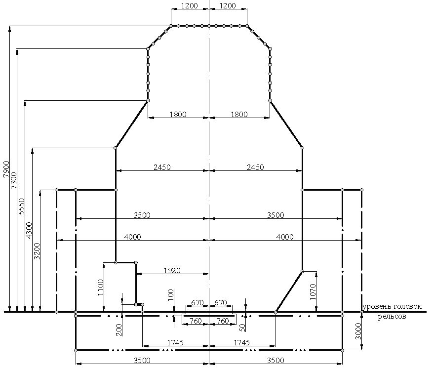
Рисунок 5.1 - Габарит приближения строений С 400
При наличии ледохода расстояние между промежуточными опорами в свету следует назначать не менее максимальных размеров льдин или из условия их беззаторного пропуска под мостом.
5.5Расчет мостов и труб на воздействие водного потока
При наличии в створе мостового перехода проявлений уровней воды, не обусловленных паводковыми расходами воды и вызванных нагонными ветрами, приливами и отливами, заторами, изменениями дна, подпорами в устьях рек и у гидротехнических сооружений и другими опасными явлениями, высотные размеры сооружений следует устанавливать по этим уровням требуемой вероятности превышения, если они выше уровней, обусловленных паводковыми расходами воды той же вероятности превышения.
Для водопропускных сооружений, расположенных вблизи плотин, построенных с меньшей степенью ответственности, чем проектируемое сооружение (некапитального типа), необходимо учитывать возможность прорыва этих плотин.
При морфометрической основе расчета вычисленные максимальные глубины общего размыва следует увеличивать на 15 %.
Не допускается срезка в русле побочней, отмелей при расчете площади живого сечения под мостом.
Возвышение бровки земляного полотна на подходах к малым мостам и трубам над расчетными подпорными уровнями воды наибольших паводков следует принимать не менее 0,5 м, а для труб при полунапорном режиме работы - не менее 1,0 м.
В пределах воздействия льда на пойменную насыпь отметка ее бровки должна быть не ниже отметок верха навала льда, а также отметок наивысшего заторного или зажорного льда с учетом полуторной толщины льда.
5.6Верхнее строение пути на мостах
Целями расчета являются обеспечение устойчивости пути и целостность рельсовых плетей во всем диапазоне изменений расчетных температур и от вертикальных и горизонтальных (торможение и тяга) воздействий поездной нагрузки. Критериями применимости решений являются предельные напряжения в рельсах и предельные взаимные смещения пролетных строений.
При невозможности обеспечить указанные требования для непрерывных в пределах сооружения рельсовых плетей в последних устраиваются разрывы в зонах максимальных расчетных напряжений. В местах разрывов необходимо устанавливать уравнительные приборы.
5.7Сопряжение мостов с подходами
5.8Отвод воды
5.9Эксплуатационные обустройства
Для проведения работ по надзору за сооружением и его ремонту мосты должны иметь устройства, предназначенные для безопасного обслуживания самих сооружений и путей: специальные смотровые устройства и приспособления, тротуары, мостовой настил, лестницы, перильные ограждения (высотой не менее 1,10 м), сходы с перилами, оповестительную сигнализацию, средства энергоснабжения для ремонтного оборудования, механизированный инструмент, стационарные воздухопроводы, средства электроосвещения объекта, контрольно-габаритные устройства, судоходную сигнализацию и др.
Проведение работ по надзору за мостовыми сооружениями и их ремонту во время возможного движения высокоскоростного транспорта не допускается.
Вблизи больших мостов следует предусматривать служебные, бытовые помещения, мастерские и помещения компрессорных станций, перечень и размеры которых устанавливаются заданием на проектирование.
На больших мостах для механизации работ по текущему содержанию и ремонту следует предусматривать устройство линий подачи сжатого воздуха и воды, а также линий продольного электроснабжения с токоразборными точками.
5.10Пожарная безопасность
Пожарная безопасность искусственных сооружений на ВСМ обеспечивается в соответствии с действующими нормативными правовыми актами Российской Федерации и нормативными документами по пожарной безопасности.
5.11Охрана окружающей среды
Технические требования по охране поверхностных вод
- гравийно-галечный материал не должен вывозиться за пределы русла и поймы реки, а должен равномерно располагаться по берегу;
- при производстве дноуглубительных и других работ в русле участок проведения работ следует оградить плавающей завесой для предотвращения распространения взвеси вниз по течению;
- для размещения механизмов и производства работ в русле необходимо применять свайные эстакады, мосты или островки с последующей их разборкой, при этом в русле с рыбохозяйственным ресурсом водопользования не допускается перегораживать более 2/3 живого сечения, а сроки и виды выполнения вышеуказанных работ должны быть согласованы с органами рыбоохраны;
- заправку машин и механизмов горючим и смазочными материалами следует осуществлять за пределами водоохранных зон;
- для мойки колес автотранспорта следует применять установки оборотного водоснабжения;
- при нанесении гидроизоляции на элементы мостовых конструкций, а также очистки перед окраской должны быть приняты меры от попадания вредных веществ в водные объекты;
- качество сточных вод перед выпуском их в водный объект должно соответствовать требованиям санитарных норм и правил, допускается определять качество опытным путем.
Технические требования по охране воздушного бассейна
Технические требования по снижению уровней шума и вибрации
- использовать долговечные и коррозионно-стойкие материалы, предполагающие низкие эксплуатационные расходы по уходу и ремонту;
- предусматривать возможность замены отдельных элементов в случае повреждения;
- учитывать архитектурные требования.
Технические требования по защите почвы
Для защиты почвы в районе строительной площадки необходимо выполнять требования 5.11.14-5.11.21.
Технические требования по охране животного мира
5.12Авторский надзор, научно-техническое сопровождение и мониторинг
Систему мониторинга мостовых сооружений и обделок тоннелей следует проектировать как составную часть общей системы мониторинга инфраструктуры участка ВСМ. Технические требования к системе мониторинга принимаются заказчиком проекта (владельцем инфраструктуры) по представлению обоснованных предложений генеральной проектной организации.
В проекте производства работ (ППР) рекомендуется предусматривать возможность использования штатной системы мониторинга на стадии монтажа и при испытаниях сооружения.
При проектировании системы мониторинга искусственных сооружений следует предусматривать три вида мониторинга: контрольный, эксплуатационный и исследовательский.
Контрольный мониторинг должен обеспечивать в автоматическом режиме контроль за безопасностью эксплуатации мостового сооружения или тоннеля и решать задачи по предупреждению возникновения аварийных состояний конструктивных элементов и сооружения в целом, которые могут быть вызваны чрезвычайными обстоятельствами:
- природными явлениями - паводками, ураганами, землетрясениями и т. п.;
- антропогенной деятельностью, а также вследствие опасного развития дефектов, имеющихся в эксплуатируемой конструкции. В случае опасных отклонений от нормальной работы моста система должна автоматически формировать сигнал тревоги и передавать его ответственному персоналу.
В проектах мостов больших пролетов следует указывать требования по обеспечению синхронной регистрации метеорологической обстановки в режиме прямой и обратной связи с системой управления высокоскоростного движения поездов (параметры механической структуры ветра: мгновенная скорость и направления, снеговые и гололедоизморозевые отложения).
Системой контрольного мониторинга оснащают все искусственные сооружения.
Эксплуатационный мониторинг должен обеспечивать автоматизацию работ по обследованию сооружения в целях планирования эксплуатационных ремонтных мероприятий и предупреждения необратимых изменений состояния моста или тоннеля. При эксплуатационном мониторинге следует осуществлять наблюдения за длительными процессами, происходящими в сооружении, такими как:
- реологические процессы;
- релаксация;
- накопление дефектов и усталостных повреждений;
- вибродинамические воздействия;
- изменение характеристик материалов, вмещающего массива и др.
Эксплуатационной системой мониторинга оснащаются следующие сооружения:
- типовые пролетные строения и опоры каждого типоразмера в количестве, достаточном для получения объективной картины поведения таких конструкций на линии [рекомендуется эксплуатационной системой мониторинга оснастить каждое десятое пролетное строение (опору) каждого типоразмера];
- типовые конструкции обделок в пределах каждой литологической разности и каждого тектонического нарушения в количестве, достаточном для получения объективной картины работы обделки тоннеля;
- неразрезные пролетные строения;
- мостовые сооружения с пролетами более 100 м.
Исследовательский мониторинг следует выполнять для накопления данных о работе моста и тоннеля при воздействии реальных подвижных нагрузок и природных факторов (ветер, температура, геологическая обстановка, ледоход, сейсмика и др.) в целях совершенствования и оценки эффективности новых конструктивно-технологических решений, применяемых при проектировании, строительстве, эксплуатации, ремонте или реконструкции мостов и тоннелей, а также для изучения возможности повышения скорости движения поездов по искусственным сооружениям свыше 350 км/ч.
Оснащению средствами исследовательского мониторинга подлежат все уникальные сооружения и объекты - представители типовых конструкций в различных условиях применения.
5.13Особенности эксплуатации мостовых сооружений
6Расчеты несущих конструкций и оснований
6.1Общие положения
Надежность
- установившаяся - эксплуатация;
- переходная - строительство, капитальный ремонт или реконструкция;
- аварийная - соответствующая исключительным условиям работы сооружения (в том числе и при особых воздействиях), которые могут привести к существенным социальным, экологическим и экономическим потерям.
Примечания
1 На коэффициент n следует умножать левую часть условия надежности (6.1), как множитель к усилиям или напряжениям, вызываемым нагрузками и воздействиями, входящими в расчетные сочетания (или знаменатель правой части) только в том случае, если в условии отсутствует коэффициент, учитывающий ответственность сооружения. Если такой коэффициент присутствует, то его значение следует принимать не ниже приведенного в 6.1.6.
2 При выполнении проверок надежности элементов пути, конструкций сопряжения пути с пролетным строением и уравнительных приборов следует принимать коэффициент n = 1,0.
- расчеты по первой группе предельных состояний на дополнительные сочетания нагрузок;
- расчеты на сочетания, включающие особые нагрузки и воздействия (сейсмика, сход поезда с рельсов, навал судов);
- расчеты по выносливости;
- проверки надежности по второй группе предельных состояний;
- расчеты надежности при строительных сочетаниях нагрузок.
- предотвращение или снижение возможности реализации подобных воздействий;
- использование конструктивных решений и материалов, которые при аварийном выходе из строя или локальном повреждении отдельных несущих элементов не приводят к прогрессирующему обрушению сооружения;
- использование комплекса специальных организационных мероприятий, обеспечивающих ограничение и контроль доступа к основным несущим конструкциям сооружения.
Долговечность
- условия эксплуатации;
- влияние окружающей среды;
- свойства применяемых материалов, возможные средства их защиты от негативных воздействий среды, а также возможность деградации их свойств.
Расчетный срок службы конструкций пути принимается из экономических соображений и менее сроков службы несущих конструкций.
Примечание -При соответствующем обосновании сроки службы других конструкций (ограждающих конструкций, смотровых приспособлений и т. п.) могут быть приняты отличными от сроков службы сооружения в целом.
Предельные состояния
Таблица 6.1 Группы предельных состояний
| Первая группа | Вторая группа |
|---|---|
| Состояния, превышение которых ведет к потере несущей способности строительных конструкций: - разрушение любого характера (например, пластическое, хрупкое, усталостное); - потеря устойчивости; - явления, при которых возникает необходимость прекращения эксплуатации (например, чрезмерные деформации в результате деградации свойств материала, пластичности, сдвига в соединениях, чрезмерные смещения в опорных частях, образование продольных трещин в бетоне); - особые и аварийные ситуации, наступление которых может приводить к катастрофическим последствиям; - прогрессирующее обрушение | Состояния, при превышении которых нарушается нормальная эксплуатация, исчерпывается ресурс долговечности или нарушаются условия комфортности: - достижение предельных деформаций (например, предельных прогибов, углов поворота) или предельных деформаций оснований; - достижение предельных уровней колебаний, вызывающих вредные для здоровья людей физиологические воздействия; - образование трещин, не нарушающих нормальную эксплуатацию; - достижение предельной ширины раскрытия трещин; - другие явления, при которых возникает необходимость ограничения пропускной способности или снижение расчетного срока службы |
| Примечание - Предельные состояния могут быть отнесены как к конструкции в целом, так и к | Примечание - Предельные состояния могут быть отнесены как к конструкции в целом, так и к |
Примечания
- 1 Нарушение работоспособности пути прерывает нормальную эксплуатацию и не приводит к потере несущей способности сооружения и прекращению его эксплуатации.
- 2 При расчетах взаимодействия пути и сооружения рассматриваются только случаи стадии нормальной эксплуатации и этап строительства. Особые случаи (землетрясение или авария) не учитывают.
- их расчетного срока службы;
- прочностных и деформационных характеристик материалов, устанавливаемых в нормах, а для грунтов - по результатам инженерно-геологических изысканий;
- наиболее неблагоприятных вариантов распределения нагрузок, воздействий и их сочетаний;
- неблагоприятных последствий в случае достижения строительным объектом предельных состояний;
- возможной деградации свойств материалов;
- условий изготовления, сооружения и особенностей эксплуатации.
Условия предельного состояния принимаются в виде
где S - действующий фактор (усилие, напряжение или деформация), вычисленный от сочетания нагрузок или воздействий по соответствующему предельному состоянию (нормативный или расчетный); m - коэффициент(ы) условий работы; γ n - коэффициент надежности по ответственности (назначению) сооружения;
R - значение соответствующего предельного фактора с обеспеченностью, соответствующей данному предельному состоянию.
Компоненты действующего фактора, входящие в левую часть условия надежности, вычисляются с коэффициентами:
- сочетаний (таблицы 6.26-6.29);
- ответственности (6.1.5-6.1.7);
- надежности (6.4.2, 6.5.1.3);
- учитывающими число путей (таблица 6.25);
- динамики (6.3.17, 6.3.18).
Расчетные сочетания нагрузок
Нормативные и расчетные нагрузки
- при расчетах устойчивости формы первой группы предельных состояний - 0,98;
- во всех других расчетах по первой группе - 0,95;
- по второй группе - 0,90.
Примечание - При выполнении проверок надежности элементов пути, конструкций сопряжения пути с пролетным строением и уравнительных приборов следует принимать коэффициент f = 1,0.
Нормативные и расчетные характеристики материалов
- 0,95 - для расчетов по первой группе предельных состояний;
- 0,85 - для расчетов по второй группе предельных состояний.
Примечание - При выполнении проверок надежности элементов пути, конструкций сопряжения пути с пролетным строением и уравнительных приборов следует принимать коэффициент m = 1,0.
Условия работы материалов, конструкций и грунтов оснований
- согласно действующим нормативным документам;
- на основании экспериментальных и теоретических данных;
- на основании данных о действительной работе материалов, конструкций и оснований в условиях производства работ и эксплуатации.
Геометрические параметры
Общие требования к расчетным моделям
- модели нагрузок и воздействий;
- модели конструкции, ее элементов и оснований, описывающие напряженнодеформированное состояние;
- модели сопротивления материалов и грунтов.
В некоторых случаях необходимо учитывать зависимость воздействий от реакции сооружения (например, при расчетах взаимодействия сооружения и высокоскоростного поезда или аэроупругие эффекты при взаимодействии ветрового потока с сооружением).
- реакцию сооружений и их конструктивных элементов при динамических и статических нагрузках;
- условия взаимодействия конструктивных элементов между собой и с основанием.
- При этом должны быть установлены:
- упругие или неупругие характеристики конструктивных элементов и основания;
- параметры, характеризующие геометрически линейную или нелинейную работу конструкций;
- физические и реологические свойства, эффекты деградации.
Применение таких методов допускается при наличии эффективных вероятностных методик учета случайной изменчивости основных параметров, соответствующих принятой расчетной схеме.
6.2Основные требования к расчетам
Кроме того, динамические характеристики конструкции должны удовлетворять установленному набору требований.
При расчетах следует рассматривать две ситуации стадии эксплуатации: проезд по сооружению высокоскоростного поезда (основная нагрузка) и пропуск поезда, соответствующего нагрузке СК (альтернативная нагрузка).
Таблица 6.2 Перечень необходимых проверок и соответствующих пунктов настоящего свода правил
| Случаи сочетания | Случаи сочетания | Случаи сочетания | Случаи сочетания | |
|---|---|---|---|---|
| Нормальная эксплуатация | Нормальная эксплуатация | Этап строитель- ства | Земле- трясение или авария | |
| Проверки | Высоко- скоростные поезда | Поезда СК | ||
| Ограничение динамических характеристик | Ограничение динамических характеристик | Ограничение динамических характеристик | Ограничение динамических характеристик | Ограничение динамических характеристик |
| Ограничение частот колебаний пролетных строений по первой вертикальной форме 1) | 6.3.13 | 6.3.13 | - | - |
| Вторая группа предельных состояний (комфортность, безопасность и эксплуатационная пригодность) | Вторая группа предельных состояний (комфортность, безопасность и эксплуатационная пригодность) | Вторая группа предельных состояний (комфортность, безопасность и эксплуатационная пригодность) | Вторая группа предельных состояний (комфортность, безопасность и эксплуатационная пригодность) | Вторая группа предельных состояний (комфортность, безопасность и эксплуатационная пригодность) |
| Предельные: прогибы в плане и профиле, смещения верха пролетных строений, углы перелома пути опор | 6.4.4-6.4.14 | 6.4.4-6.4.14 | - | - |
| Предельные ускорения на уровне верхнего строения пути и в вагоне | 6.4.15 и 6.4.16 | - | - | - |
| Образование и раскрытие трещин в железобетоне | 6.4.2, 6.4.18 [см. также СП 35.13330.2011 (пункты 7.95-7.111)] | 6.4.2, 6.4.18 [см. также СП 35.13330.2011 (пункты 7.95-7.111)] | 6.4.2, 6.4.18 [см. также СП 35.13330.2011 (пункты 7.95-7.111)] | - |
| Предельные эксцентриситеты и давление на грунт 2) | 6.4.2, 6.4.19, разделы 7, 10 | 6.4.2, 6.4.19, разделы 7, 10 | 6.4.2, 6.4.19, разделы 7, 10 | - |
| Осадки основания, ползучесть и усадка бетона пролетных строений 1) | 6.4.2, 6.4.20, раздел 10 | 6.4.2, 6.4.20, раздел 10 | 6.4.2, 6.4.20, раздел 10 | - |
| Первая группа предельных состояний (устойчивость, прочность, выносливость) | Первая группа предельных состояний (устойчивость, прочность, выносливость) | Первая группа предельных состояний (устойчивость, прочность, выносливость) | Первая группа предельных состояний (устойчивость, прочность, выносливость) | Первая группа предельных состояний (устойчивость, прочность, выносливость) |
| Устойчивость положения 2) | 6.5.2 | 6.5.2 | 6.5.2 | - |
| Требования прочности и устойчивости элементов | 6.5.1, 6.5.3, разделы 7-9 | 6.5.1, 6.5.3, разделы 7-9 | 6.5.1, 6.5.3, разделы 7-9 | - |
| Расчеты выносливости | 6.5.1, 6.5.4, разделы 7-9 | 6.5.1, 6.5.4, разделы 7-9 | - | |
| 1) Только от постоянных нагрузок. 2) В том числе от постоянных нагрузок. | 1) Только от постоянных нагрузок. 2) В том числе от постоянных нагрузок. | 1) Только от постоянных нагрузок. 2) В том числе от постоянных нагрузок. | 1) Только от постоянных нагрузок. 2) В том числе от постоянных нагрузок. | 1) Только от постоянных нагрузок. 2) В том числе от постоянных нагрузок. |
6.3Динамические расчеты при движении высокоскоростных поездов. Параметры расчетных моделей
Общие положения
Должны быть учтены следующие динамические явления:
- 1) высокая скорость изменения интенсивности прикладываемой нагрузки и соответствующий инерционный отклик конструкции;
- 2) возможные резонансы, возникающие при кратности частот возбуждения (последовательное прохождение по сооружению тележек поезда) собственным частотам колебаний конструкции;
- 3) динамическое изменение нагрузок от колесных пар, возникающее вследствие дефектов рельсового пути и колес.
При выполнении динамических расчетов следует моделировать поведение конструкции в ситуациях реальной эксплуатации.
Примечание - Если при расчетах прочности рассматривают воздействия и их сочетания, которые могут происходить редко (как правило, один раз за срок службы), то в расчетах динамики при нормальной эксплуатации и при движении поездов на максимальных расчетных скоростях такие случаи рассматривать не следует.
Например, не следует рассматривать случаи ремонта, когда на соседнем пути находится поезд обслуживания или на проходах расположена дополнительная нагрузка. В этом случае скорость движения на участке может быть ограничена.
Скорости также могут быть снижены: при штормовом ветре, при движениях составов ненормативных длин (буксировке) или с дефектными тележками (в ремонт).
6.3.2 При формировании расчетной модели сооружения для вычисления:
- динамических характеристик сооружения;
- значений динамических нагрузок;
- деформаций и реакций в элементах должны быть учтены следующие основные параметры:
- 1) обязательные:
- скорость движения поезда V ,
- длина пролета или линии влияния того или иного фактора элемента L ,
- масса элементов конструкции (включая мостовое полотно) M ,
- жесткость элементов конструкции EA , EJ и др.,
- собственные частоты колебаний конструкции по формам колебаний f 1, f 2, ... ,
- число осей в поезде, осевые нагрузки и интервалы между осями n , Pi , ai ,
- коэффициент демпфирования конструкции (элементов) - ζ,
- дефекты рельсового пути и колес (выбоины, некруглость, дефекты подвески) - µ2;
- 2) параметры, учитываемые при выполнении расчетов типов III и IV (см. приложение А):
- неподрессоренная/подрессоренная массы вагонов и тележек, а также жесткостные и вязкостные характеристики вагонов, подвески и сочленений вагонов,
- элементы, расположенные под верхним строением пути и локально изменяющие жесткость пути (поперечные балки, диафрагмы и т. п.),
- жесткость и вязкость элементов верхнего строения пути (только для модели IV).
В процессе динамических расчетов подлежит обязательному контролю ряд параметров. Некоторые из экстремальных значений ограничиваются явно, некоторые являются косвенными ограничениями области инженерных решений.
Прямые требования:
- ограничение вертикальных и горизонтальных максимальных ускорений вагона комфорт пассажиров;
- минимальные силы давления колес поездов на рельс (обезгруживание) - надежность контакта «колесо-рельс»;
- ограничение ускорений на уровне верхнего строения пути - устойчивость балласта и недопущение расстройства соединений верхнего строения пути;
- обеспечение требований прочности и выносливости элементов сооружения с учетом динамики движения поездов - через коэффициент динамики или прямыми методами.
Косвенные требования:
- ограничение упругих прогибов, углов перелома профиля и закручивания сечений;
- рекомендации по диапазону первых частот колебаний пролетных строений.
Примечания
1 Дефекты пути и колес допускается учитывать коэффициентом динамики μ2 (см. приложение Ж).
2 Соблюдение требований предельных прогибов недостаточно для утверждения об отсутствии резонансных явлений. Для исследования возможных резонансов требуется выполнение динамических расчетов.
Скорости, подлежащие рассмотрению
Демпфирование конструкции
Таблица 6.3 Демпфирование несущих конструкций пролетных строений
| Тип пролетного строения | Нижнее предельное значение ζ, %от критического демпфирования | Нижнее предельное значение ζ, %от критического демпфирования |
|---|---|---|
| L < 20 м | L ≥ 20 м | |
| Стальные и сталежелезобетонные | ζ = 0,5 + 0,125 (20 - L ) | ζ = 0,5 |
| Железобетонные предварительно напряженные | ζ = 1,0 + 0,07 (20 - L ) | ζ = 1,0 |
| Балки из обычного железобетона и с бетонным наполнителем | ζ = 1,5 + 0,07 (20 - L ) | ζ = 1,5 |
При применении специальных конструктивных решений или устройств, повышающих демпфирующие свойства конструкции или ее элементов, коэффициенты демпфирования могут быть приняты отличными от приведенных в таблице 6.3. Использование в расчетах таких коэффициентов должно быть подтверждено результатами исследований.
Для балочных разрезных пролетных строений длиной менее 30 м при расчетах по методике А в соответствии с 6.3.10 должно быть учтено дополнительное демпфирование (приложение И).
Примечание - В настоящем своде правил используется коэффициент демпфирования (затухания) ζ, удобство которого для описания затухающих колебаний состоит в том, что при критическом значении ζ = 1 движение теряет колебательный характер (становится апериодическим).
Существуют и другие коэффициенты, характеризующие затухание колебаний: коэффициент неупругого сопротивления γ и логарифмический декремент затухания δ.
Преимущество логарифмического декремента затухания заключается в его наглядности -он определяется как натуральный логарифм отношения двух последовательных амплитуд одного знака:
Эти три коэффициента связаны соотношениями:
Массы элементов конструкции
При выполнении динамических расчетов следует рассматривать две расчетные модели: с минимально возможной и максимально возможной массами конструкций (включая массу мостового полотна, элементов контактной сети, коммуникаций, шумозащитных экранов, а также других конструкций, которые могут быть расположены на пролетном строении):
- случай минимальной массы - для оценки максимальных ускорений;
- случай максимальной массы - для прогнозирования самых низких резонансных скоростей.
Примечания
1 Максимальные динамические эффекты, как правило, возникают на резонансных пиках на определенных скоростях, когда совпадают кратные значения частоты возбуждения и собственных частот конструкции или поезда. Вследствие резкого изменения значений (градиентов) амплитуд, скоростей и ускорений в зонах резонанса, даже незначительные отклонения параметров модели от реально возможных (в том числе и необоснованные «запасы») могут привести к серьезным ошибкам как в сторону недооценки этих факторов, так и к неоправданной их переоценке и, как следствие, к перерасходу материалов и увеличению стоимости сооружения.
Недооценка массы приводит к завышению частот конструкции и, соответственно, скоростей поезда, на которых происходит резонанс.
С другой стороны, максимальное ускорение конструкции в зоне резонанса обратно пропорционально массе. Переоценка массы может привести к заниженной оценке частот и ускорений.
Поэтому при формировании расчетной модели следует уделять особое внимание корректному назначению масс и жесткостей конструктивных элементов сооружения. Следует рассматривать не фиксированные значения этих характеристик и скоростей движения, а возможные диапазоны их изменения.
2 При определении минимальной массы балласта следует полагать, что толщина балласта минимальна, и он находится в сухом чистом состоянии. Плотность балласта может быть принята равной 1700 кг/м³ .
3 При назначении максимальной массы балласта следует исходить из допусков на возможный подъем пути и принимать, что балласт имеет максимальную степень уплотнения, находится во влажном состоянии, а степень его загрязнения достигла предельно допустимого значения при эксплуатации.
4 Назначение максимальных и минимальных масс конструкций производится в каждом конкретном случае исходя из условия движения по сооружению высокоскоростной нагрузки без ограничения скорости (не следует рассматривать случаи ремонта или путевых работ).
5 Если массовые характеристики основных конструкций принимают по таблицам спецификаций рабочих чертежей, вариативность масс стальных конструкций допускается не учитывать, а железобетонных - учитывать коэффициентами 1,02 и 0,98 (максимальные и минимальные соответственно), в других случаях принимают 1,05 и 0,95 для стальных и бетонных элементов.
Жесткость конструкции
Примечания
1 Переоценка жесткости конструкции приводит к завышению собственных частот конструкции, смещению резонансных пиков и, соответственно, завышению скоростей поезда, на которых происходит резонанс.
2 Неоправданное (неаргументированное) занижение жесткости может привести к перерасходу материалов и, как следствие, увеличению стоимости сооружения.
3 Возможные отклонения жесткости реальной конструкции от жесткости расчетной модели назначаются в каждом конкретном случае, исходя из особенностей конструкции (число элементов и соединений, массивность сечений и другие соображения).
4 При определении жесткости железобетонных элементов сечения следует полагать, что все потери прошли (усадка, ползучесть, потери предварительного натяжения), а ширина раскрытия нормальных трещин не превышают допустимые значения (для оценки минимальной жесткости обычного железобетона).
Моделирование возбуждения и динамического поведения конструкции
Таблица 6.4 Методики расчета, динамические модели и критерии их применимости
| Мето- дика | Критерии применимости | Динами- ческая 3) | Учет динамики при проверках надежности 4) | Учет динамики при проверках надежности 4) | |
|---|---|---|---|---|---|
| модель | Учет взаимодействия поезда и пролетного строения | Учет дефектов пути и колес | |||
| А | А.1 | Изгибающие моменты и прогибы в сплошностенчатых (плитных, коробчатых и ребристых) разрезных балках с расчетными пролетами ≤ 60 м | Модель II | S din = S stat ∙(1 + μ 1 + μ 2 ) умножением статических значений: | S din = S stat ∙(1 + μ 1 + μ 2 ) умножением статических значений: |
| А | А.1 | Изгибающие моменты и прогибы в сплошностенчатых (плитных, коробчатых и ребристых) разрезных балках с расчетными пролетами ≤ 60 м | Модель II | На коэффициент динамики μ 1 (6.3.17) | На коэффициент динамики μ 2 (6.3.19) |
| А | А.2 | Все компоненты внутренних усилий в сечениях пролетных строений конструктивных решений: - разрезные балки при пролетах > 60 - неразрезные, рамные и арочные при любых приведенных длинах пролета 1) ; | Модель II | S din = S ext ,II ∙(1 + μ 2 ) | S din = S ext ,II ∙(1 + μ 2 ) |
| А | м; - опорные реакции и усилия в опорах 2) | Модель II | Учтен в пиковых значениях фактора динамического расчета (6.3.18) | На коэффициент динамики μ 2 (6.3.19) | |
| Б | Б.1 | Пролетные строения, не удовлетворяющие критериям применимости А.1 и А.2 (сквозные фермы и арки, пролетные строения с поперечными балками проезжей части и др.) | Модель III | S din = S ext ,III ∙(1 + μ 2 ) | S din = S ext ,III ∙(1 + μ 2 ) |
| Б | Б.1 | Пролетные строения, не удовлетворяющие критериям применимости А.1 и А.2 (сквозные фермы и арки, пролетные строения с поперечными балками проезжей части и др.) | Модель III | Учтен в пиковых значениях фактора динамического расчета (6.3.18) | На коэффициент динамики μ 2 (6.3.19) |
| Б | Б.2 | Пролетные строения, не удовлетворяющие критериям применимости А.1 и А.2 (сквозные фермы и арки, пролетные строения с поперечными балками проезжей части и др.) | Модель IV | S din = S ext ,IV | S din = S ext ,IV |
| Б | Б.2 | Пролетные строения, не удовлетворяющие критериям применимости А.1 и А.2 (сквозные фермы и арки, пролетные строения с поперечными балками проезжей части и др.) | Модель IV | Пиковые значения из динамического расчета (6.3.19) | Пиковые значения из динамического расчета (6.3.19) |
Sext, II , Sext, III , Sext, IV - пиковые значения фактора при динамических расчетах.
2 Основным критерием, определяющим допустимость применения методики А (модель II, см. приложение А), является отсутствие под плитой проезда мест локального изменения жесткости, то есть элементов проезжей части, местная работа которых может вносить существенный вклад в картину динамического взаимодействия поезда и конструкции.
3 Необходимо учитывать «разгружающую» динамику согласно Ж.3 (приложение Ж).
Методика А
При расчетах по данной методике динамическое воздействие может быть представлено набором сосредоточенных сил (см. приложение Г), перемещающихся по сооружению с заданной скоростью (модель II, приложение А). Методика может быть применена в случаях, перечисленных ниже, при отсутствии под плитой проезда мест существенного локального изменения жесткости (поперечных балок или других элементов, местная работа которых может вносить существенный вклад в картину динамического взаимодействия поезда и конструкции пролетного строения):
1) для расчетов плитных, сплошностенчатых (коробчатых и ребристых) разрезных балок пролетами до 60 м;
2) для разрезных балок при длинах пролета, превышающих 60 м, а также неразрезных, рамных и арочных систем при любых приведенных длинах пролета (см. В.3 и В.5 приложения В).
Методика Б
Для мостов других конструктивных решений (пролетные строения со сквозной решеткой: фермы, арки и др.), а также в случаях, когда под полотном проезжей части расположены элементы, местной работой которых нет оснований пренебрегать, следует производить динамические расчеты с учетом взаимодействия поезда и конструкции (с учетом подрессоренных/неподрессоренных масс, а также характеристик вагонов и тележек поезда) с использованием модели III (приложение А). В случаях, если необходимо учесть в расчете жесткости конструкции пути и его взаимодействие с несущей частью [например, если коэффициент динамики μ2 не может быть вычислен по Ж.7 (приложение Ж)], следует использовать модель IV (приложение А).
- взаимодействие между изгибными и крутильными формами;
- близость соседних частот и формы соответствующих колебаний;
- влияние отдельных элементов пролетных строений (поперечные балки и т. д.).
- при длинах менее 10 м - должно быть учтено распределение давления от осей поезда на плиту проезда согласно приложению К. При расчетах железобетонных пролетных строений с ездой на балласте по методике А допускается вместо учета распределения нагрузки шпалами увеличивать дополнительное демпфирование на величину, равную 0,00176∙(10L ) 3 %;
- при длинах менее 30 м - необходим учет динамического взаимодействия массы транспортного средства и моста одним из указанных способов:
- прямыми динамическими расчетами по модели III или IV (приложение А);
- увеличением коэффициента демпфирования согласно приложению И при расчетах по модели II (приложение А).
Ограничение частот колебаний пролетных строений по первой форме вертикальных колебаний
- 1) первая собственная частота вертикальных колебаний находилась в пределах
- 2) соотношение первых частот колебаний по форме изгиба и по форме кручения удовлетворяло условию
где f 1 - первая собственная частота вертикальных изгибных колебаний, Гц; f 1, min - нижний разрешенный предел частоты, Гц; f 1, max - верхний разрешенный предел частоты, Гц; f 1, t - первая собственная частота колебаний, связанная с кручением, Гц.
Предельные значения частот в зависимости от длины пролета приведены в приложении В.
- В случаях, если расчетная длина пролета превышает 60 м, а также при расчетах пролетных строений, схема работы которых отлична от балочной разрезной, при выборе методики расчета следует руководствоваться указаниями, приведенными на рисунке 6.1:
- при невыполнении первой части условия (6.2) (если f 1 < f 1, min ) пролетное строение должно быть запроектировано по методике Б (Б.1 или Б.2);
- при невыполнении второй части условия (6.2) (если f 1 > f 1, max ) пролетное строение должно быть запроектировано по методике Б.2, при этом должны быть учтены неровности пути и дефекты колес (и соответствующее обоснование методов их учета).
Рисунок 6.1
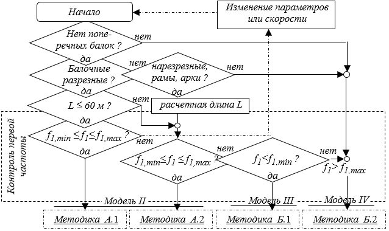
Значение коэффициента динамики μ2 может быть вычислено по формуле (Ж.3) только в том случае, если первая частота находится ниже верхнего предела f 1, max .
Результаты динамического расчета
- взаимодействие между изгибными и крутильными формами;
- близость соседних частот и форм соответствующих колебаний;
- влияние отдельных элементов пролетных строений (поперечные балки и т. д.);
- скорости, на которых происходят резонансные явления и связанные с ними формы;
- поведение конструкции при расчетной максимальной скорости;
- зависимость характера динамического поведения от параметров поезда.
Варьируя параметрами сооружения (длина пролета, жесткость, масса, схема работы), следует добиваться снижения влияния резонансных явлений, а также более высокой достоверности результатов и меньшей их зависимости от вариации физико-механических и геометрических параметров сооружения.
Примечание - Реальное динамическое поведение конструкции всегда будет отличаться от теоретического. Это связано с несовершенством методики, условностями расчетной модели конструкции и поезда, а также неточностями значений различных характеристик модели. Все это может привести к тому, что влияние резонансных явлений в реальной конструкции может оказаться выше полученного в результате расчета. При назначении параметров сооружения следует добиваться, чтобы влияние возможных неточностей параметров, имеющих относительно низкую достоверность (например, весов и жесткостей элементов конструкции), оказывало меньшее влияние на результаты (изменив, например, схему работы или длину пролета).
- вертикальные ускорения на уровне верхнего строения пути (предельные значения ускорений приведены в 6.4.15);
- амплитуды колебаний (по всем рассматриваемым поездам), необходимые для вычисления коэффициента динамики (см. 6.3.17).
Кроме того, при выполнении расчетов по методике Б с использованием моделей III и IV приложения А определяются максимальные вертикальные и горизонтальные ускорения на уровне вагонов (предельные значения ускорений приведены в 6.4.16).
Учет динамического взаимодействия поезда и пролетного строения
Учет дефектов рельсового пути и колес поезда
В случае динамического анализа по методике А.1 (см. таблицу 6.4) на этот коэффициент следует умножать результаты статического нагружения пролетного строения высокоскоростными поездами (совместно с μ1 - см. 6.3.17); в случае использования методик А.2, а также методики Б.1 и модели III (приложение А) - пиковые значения результатов динамического расчета.
При использовании методики Б.2 и модели IV (приложение А) динамические эффекты учитывают в пиковых значениях факторов, и умножать результаты на μ2 не следует.
При выполнении динамических расчетов по методике Б.2 при моделировании несовершенств пути следует руководствоваться приложением Т.
Значение коэффициента динамики μ2 следует вычислять согласно приложению Ж.
Продольный профиль пути
Продольный профиль пути следует моделировать при расчетах по методикам Б.1 и Б.2 (см. таблицу 6.5). Профиль должен соответствовать проектному и учитывать строительный подъем, углы перелома и мероприятия по регулировке профиля пути. Кроме этого, необходимо учитывать: неровности пути в соответствии с 6.3.19, изменения профиля при температуре, осадки опор, устоев и участков насыпей подходов, а для железобетонных и сталежелезобетонных пролетных строений - также усадку 1) и ползучесть бетона.
Осадки оснований опор и ползучесть бетона пролетных строений следует учитывать только за время эксплуатации.
При выполнении требований по предельным изменениям профиля следует учитывать положения 6.4.22.
Таблица 6.5 Предельные изменения профиля, вызванные осадкой оснований опор и ползучестью бетона пролетных строений
| Предельные значения 1) | Предельные значения 1) | ||
|---|---|---|---|
| Тип значения | Тип значения | при пути на балласте | при безбалластном пути |
| Абсолютные осадки опор | Абсолютные осадки опор | 30 мм²) | 20 мм²) |
| Прогибы пролетных строений, вызванные ползучестью бетона | Прогибы пролетных строений, вызванные ползучестью бетона | 40 мм | 30 мм |
| Углы перелома профиля | вызванные разными осадками соседних опор и ползучестью бетона пролетных строений | 1,5‰ | 1,0‰ |
| Углы перелома профиля | вызванные разностью осадок устоя, переходного участка и примыкающей насыпи | 0,75‰ | 0,5‰ |
Ускорения при динамических расчетах
Ограничение вертикальных и горизонтальных ускорений в вагоне связано с обеспечением комфорта пассажиров (см. 6.4.16). Проверку предельных ускорений в вагоне поезда необходимо выполнять в том случае, если параметры пролетного строения не удовлетворяют условиям А.1, А.2 и Б.1 (см. таблицу 6.4) и, кроме этого, не выполнены критерии предельных вертикальных прогибов. При расчетах по методике Б.2 проверка ускорений в вагоне обязательна.
Контроль обезгруживания колес
Данное требование следует рассматривать как требование безопасности железнодорожного движения.
6.4Расчеты по предельным состояниям второй группы
Требования таблицы 6.6 по предельным углам перелома пути в профиле и плане, взаимному смещению торцов пролетных строений, смещению верха опор и дополнительным напряжениям в рельсах являются критериями безопасности движения и обеспечивают стабильность работы конструкций верхнего строения пути (рельсов, скреплений и др.).
Таблица 6.6 Условия надежности по предельным состояниям второй группы. Учитываемые нагрузки и воздействия, число загружаемых путей и коэффициенты динамики
| нагрузки | Вертикальная подвижная нагрузка | Вертикальная подвижная нагрузка | Вертикальная подвижная нагрузка | Горизон- тальные компоненты | Горизон- тальные компоненты | Горизон- тальные компоненты | Прочие нагрузки и | Прочие нагрузки и | Прочие нагрузки и | ||
|---|---|---|---|---|---|---|---|---|---|---|---|
| Условия надежности по | ВСП | ВСП | Поезда СК | подвижной нагрузки | подвижной нагрузки | подвижной нагрузки | воздействия | воздействия | воздействия | ||
| предельным состояниям второй группы | Постоянные | Число путей 8) | Коэффициент динамики 1) | Число путей | Коэффициент динамики | Центробежная сила | Поперечные удары | Торможение | Ветер | Лед | Температура |
| Критерии комфортного проезда пассажиров | Критерии комфортного проезда пассажиров | Критерии комфортного проезда пассажиров | Критерии комфортного проезда пассажиров | Критерии комфортного проезда пассажиров | Критерии комфортного проезда пассажиров | Критерии комфортного проезда пассажиров | Критерии комфортного проезда пассажиров | Критерии комфортного проезда пассажиров | Критерии комфортного проезда пассажиров | Критерии комфортного проезда пассажиров | Критерии комфортного проезда пассажиров |
| Вертикальные и горизонтальные прогибы, скручивание пути | - | - | - | 1 | 1+μ | - | - | - | - | - | - |
| Ускорения в вагоне 2) | Да 4) | 1 | 1,0 | - | - | - | - | - | - | - | |
| Критерии безопасности движения | Критерии безопасности движения | Критерии безопасности движения | Критерии безопасности движения | Критерии безопасности движения | Критерии безопасности движения | Критерии безопасности движения | Критерии безопасности движения | Критерии безопасности движения | Критерии безопасности движения | Критерии безопасности движения | Критерии безопасности движения |
| Углы перелома профиля, взаимное смещение консолей пролетных строений от поворота - 6.4.7 | - | 2 | 1+1/2μ 1 5) | 1 | 1+2/3μ | - | - | - | - | - | - |
| Взаимное линейное смещение пролетных строений, а также пролетных строений и пути - 6.4.8 | - | 2 | 1,0 | 1 | 1,0 | - Да | - Да | - Да | - | - | - |
| Дополнительные напряжения в рельсах - 6.4.14 | - | 2 | 1+1/2μ 1 6) | 1 | 1+2/3μ 1 6) | - Да | - Да | - Да | - | - | Да |
| Смещение верха опор и углы перелома пути в плане | - | 1 | 1+μ 1 +μ 2 | 1 | 1+μ | Да | Да | - | Да | Да | Да |
| Осадки основания, ползучесть и усадка бетона пролетных строений 3) | Да | - | - | - | - | - | - | - | - | - | - |
| Ускорения на уровне верхнего строения пути | Да 4) | 1 | - | - | - | - | - | - | - | - | |
| Обезгруживание колес | Да 4) | 1 | 1 - μ 2 7) | - | - | - | - | - | - | - | |
| Критерии эксплуатационной пригодности | Критерии эксплуатационной пригодности | Критерии эксплуатационной пригодности | Критерии эксплуатационной пригодности | Критерии эксплуатационной пригодности | Критерии эксплуатационной пригодности | Критерии эксплуатационной пригодности | Критерии эксплуатационной пригодности | Критерии эксплуатационной пригодности | Критерии эксплуатационной пригодности | Критерии эксплуатационной пригодности | Критерии эксплуатационной пригодности |
| Образование и раскрытие трещин в железобетоне | Да | 2 | 1+1/2μ 1 | 1 | 1,0 | - | - | Да | - | - | - |
| 1) Приведены коэффициенты динамики, учитываемые при расчетах по методике А.1, при других методиках следует руководствоваться указаниями 6.3.18 и 6.3.19. 2) Выполнять по методике Б.1 в случае, если не выполнены критерии предельных вертикальных прогибов, а также при расчетах по методике Б.2. 3) Осадки основания, ползучесть и усадка бетона вычисляются без учета временных нагрузок. 4) Учитываются в расчетной модели через массы элементов конструкции. 5) Приведены коэффициенты динамики, учитываемые при расчетах разрезных балок. 6) Для усилий от торможения - 1 + μ = 1,0. 7) Приведено для методик А и Б.1; при методике Б.2 - μ 2 учитывается в результатах. 8) | 1) Приведены коэффициенты динамики, учитываемые при расчетах по методике А.1, при других методиках следует руководствоваться указаниями 6.3.18 и 6.3.19. 2) Выполнять по методике Б.1 в случае, если не выполнены критерии предельных вертикальных прогибов, а также при расчетах по методике Б.2. 3) Осадки основания, ползучесть и усадка бетона вычисляются без учета временных нагрузок. 4) Учитываются в расчетной модели через массы элементов конструкции. 5) Приведены коэффициенты динамики, учитываемые при расчетах разрезных балок. 6) Для усилий от торможения - 1 + μ = 1,0. 7) Приведено для методик А и Б.1; при методике Б.2 - μ 2 учитывается в результатах. 8) | 1) Приведены коэффициенты динамики, учитываемые при расчетах по методике А.1, при других методиках следует руководствоваться указаниями 6.3.18 и 6.3.19. 2) Выполнять по методике Б.1 в случае, если не выполнены критерии предельных вертикальных прогибов, а также при расчетах по методике Б.2. 3) Осадки основания, ползучесть и усадка бетона вычисляются без учета временных нагрузок. 4) Учитываются в расчетной модели через массы элементов конструкции. 5) Приведены коэффициенты динамики, учитываемые при расчетах разрезных балок. 6) Для усилий от торможения - 1 + μ = 1,0. 7) Приведено для методик А и Б.1; при методике Б.2 - μ 2 учитывается в результатах. 8) | 1) Приведены коэффициенты динамики, учитываемые при расчетах по методике А.1, при других методиках следует руководствоваться указаниями 6.3.18 и 6.3.19. 2) Выполнять по методике Б.1 в случае, если не выполнены критерии предельных вертикальных прогибов, а также при расчетах по методике Б.2. 3) Осадки основания, ползучесть и усадка бетона вычисляются без учета временных нагрузок. 4) Учитываются в расчетной модели через массы элементов конструкции. 5) Приведены коэффициенты динамики, учитываемые при расчетах разрезных балок. 6) Для усилий от торможения - 1 + μ = 1,0. 7) Приведено для методик А и Б.1; при методике Б.2 - μ 2 учитывается в результатах. 8) | 1) Приведены коэффициенты динамики, учитываемые при расчетах по методике А.1, при других методиках следует руководствоваться указаниями 6.3.18 и 6.3.19. 2) Выполнять по методике Б.1 в случае, если не выполнены критерии предельных вертикальных прогибов, а также при расчетах по методике Б.2. 3) Осадки основания, ползучесть и усадка бетона вычисляются без учета временных нагрузок. 4) Учитываются в расчетной модели через массы элементов конструкции. 5) Приведены коэффициенты динамики, учитываемые при расчетах разрезных балок. 6) Для усилий от торможения - 1 + μ = 1,0. 7) Приведено для методик А и Б.1; при методике Б.2 - μ 2 учитывается в результатах. 8) | 1) Приведены коэффициенты динамики, учитываемые при расчетах по методике А.1, при других методиках следует руководствоваться указаниями 6.3.18 и 6.3.19. 2) Выполнять по методике Б.1 в случае, если не выполнены критерии предельных вертикальных прогибов, а также при расчетах по методике Б.2. 3) Осадки основания, ползучесть и усадка бетона вычисляются без учета временных нагрузок. 4) Учитываются в расчетной модели через массы элементов конструкции. 5) Приведены коэффициенты динамики, учитываемые при расчетах разрезных балок. 6) Для усилий от торможения - 1 + μ = 1,0. 7) Приведено для методик А и Б.1; при методике Б.2 - μ 2 учитывается в результатах. 8) | 1) Приведены коэффициенты динамики, учитываемые при расчетах по методике А.1, при других методиках следует руководствоваться указаниями 6.3.18 и 6.3.19. 2) Выполнять по методике Б.1 в случае, если не выполнены критерии предельных вертикальных прогибов, а также при расчетах по методике Б.2. 3) Осадки основания, ползучесть и усадка бетона вычисляются без учета временных нагрузок. 4) Учитываются в расчетной модели через массы элементов конструкции. 5) Приведены коэффициенты динамики, учитываемые при расчетах разрезных балок. 6) Для усилий от торможения - 1 + μ = 1,0. 7) Приведено для методик А и Б.1; при методике Б.2 - μ 2 учитывается в результатах. 8) | 1) Приведены коэффициенты динамики, учитываемые при расчетах по методике А.1, при других методиках следует руководствоваться указаниями 6.3.18 и 6.3.19. 2) Выполнять по методике Б.1 в случае, если не выполнены критерии предельных вертикальных прогибов, а также при расчетах по методике Б.2. 3) Осадки основания, ползучесть и усадка бетона вычисляются без учета временных нагрузок. 4) Учитываются в расчетной модели через массы элементов конструкции. 5) Приведены коэффициенты динамики, учитываемые при расчетах разрезных балок. 6) Для усилий от торможения - 1 + μ = 1,0. 7) Приведено для методик А и Б.1; при методике Б.2 - μ 2 учитывается в результатах. 8) | 1) Приведены коэффициенты динамики, учитываемые при расчетах по методике А.1, при других методиках следует руководствоваться указаниями 6.3.18 и 6.3.19. 2) Выполнять по методике Б.1 в случае, если не выполнены критерии предельных вертикальных прогибов, а также при расчетах по методике Б.2. 3) Осадки основания, ползучесть и усадка бетона вычисляются без учета временных нагрузок. 4) Учитываются в расчетной модели через массы элементов конструкции. 5) Приведены коэффициенты динамики, учитываемые при расчетах разрезных балок. 6) Для усилий от торможения - 1 + μ = 1,0. 7) Приведено для методик А и Б.1; при методике Б.2 - μ 2 учитывается в результатах. 8) | 1) Приведены коэффициенты динамики, учитываемые при расчетах по методике А.1, при других методиках следует руководствоваться указаниями 6.3.18 и 6.3.19. 2) Выполнять по методике Б.1 в случае, если не выполнены критерии предельных вертикальных прогибов, а также при расчетах по методике Б.2. 3) Осадки основания, ползучесть и усадка бетона вычисляются без учета временных нагрузок. 4) Учитываются в расчетной модели через массы элементов конструкции. 5) Приведены коэффициенты динамики, учитываемые при расчетах разрезных балок. 6) Для усилий от торможения - 1 + μ = 1,0. 7) Приведено для методик А и Б.1; при методике Б.2 - μ 2 учитывается в результатах. 8) | 1) Приведены коэффициенты динамики, учитываемые при расчетах по методике А.1, при других методиках следует руководствоваться указаниями 6.3.18 и 6.3.19. 2) Выполнять по методике Б.1 в случае, если не выполнены критерии предельных вертикальных прогибов, а также при расчетах по методике Б.2. 3) Осадки основания, ползучесть и усадка бетона вычисляются без учета временных нагрузок. 4) Учитываются в расчетной модели через массы элементов конструкции. 5) Приведены коэффициенты динамики, учитываемые при расчетах разрезных балок. 6) Для усилий от торможения - 1 + μ = 1,0. 7) Приведено для методик А и Б.1; при методике Б.2 - μ 2 учитывается в результатах. 8) | 1) Приведены коэффициенты динамики, учитываемые при расчетах по методике А.1, при других методиках следует руководствоваться указаниями 6.3.18 и 6.3.19. 2) Выполнять по методике Б.1 в случае, если не выполнены критерии предельных вертикальных прогибов, а также при расчетах по методике Б.2. 3) Осадки основания, ползучесть и усадка бетона вычисляются без учета временных нагрузок. 4) Учитываются в расчетной модели через массы элементов конструкции. 5) Приведены коэффициенты динамики, учитываемые при расчетах разрезных балок. 6) Для усилий от торможения - 1 + μ = 1,0. 7) Приведено для методик А и Б.1; при методике Б.2 - μ 2 учитывается в результатах. 8) |
Прогибы, смещения и углы поворота
Таблица 6.7 Предельные значения упругих прогибов, смещений и углов поворота
| Предельные значения | Предельные значения | |
|---|---|---|
| Критерии условий надежности От высоко- скоростных | Критерии условий надежности От высоко- скоростных | От поездов обслуживания С8 |
| Критерии комфортного проезда пассажиров | Критерии комфортного проезда пассажиров | Критерии комфортного проезда пассажиров |
| 1 | Предельный вертикальный прогиб 1) | δ ≤ L /800 6) |
| 2 | Горизонтальный прогиб пролетных строений 2) | - |
| 3 | Скручивание пути на пролетном строении (изменение Θ ≤ 1 мм на 3 м пути | Скручивание пути на пролетном строении (изменение Θ ≤ 1 мм на 3 м пути |
| Критерии безопасности движения | Критерии безопасности движения | Критерии безопасности движения |
| 4 | Углы перелома профиля, взаимное смещение Согласно 6.4.7 | Углы перелома профиля, взаимное смещение Согласно 6.4.7 |
| 5 | Взаимное линейное смещение пролетных строений, Согласно 6.4.8 | Взаимное линейное смещение пролетных строений, Согласно 6.4.8 |
| 6 | Смещения верха опор 4) L , y , x 005 0 5) | Смещения верха опор 4) L , y , x 005 0 5) |
| 7 | Переломы оси пути в плане 4) Θ ≤ 1,0% | Переломы оси пути в плане 4) Θ ≤ 1,0% |
Предельные значения прогибов и углов поворота приведены на рисунке 6.2 и в таблицах 6.8-6.13.
Требования пунктов 1-3 таблицы 6.7 должны выполняться при учете вертикальных и горизонтальных компонент нагрузок от поездов класса С8 (эталонная нагрузка), а также от прочих нагрузок и воздействий. Нагрузки и коэффициенты следует учитывать согласно 6.4.2.
Для пролетных строений, удовлетворяющих условиям А.1 и А.2 (см. таблицу 6.4), критерии комфортности обеспечиваются косвенно при выполнении требований по вертикальным прогибам, углам перелома и скручиванию, а также диапазону собственных частот (6.3.13). Для других пролетных строений необходимо выполнять динамические
1 ) Требования по предельным углам перелома пути в профиле наряду с другими требованиями (смещения в плане, взаимное смещение торцов пролетных строений, а также пролетных строений и пути, смещения верха опор и дополнительные напряжения в рельсах) являются критериями безопасности движения и обеспечивают надежность работы конструкций верхнего строения пути (рельсов, скреплений и др.) и одновременно являются критериями комфортного проезда пассажиров. расчеты по моделям III и IV приложения А и проводить проверки предельных ускорений в вагоне (см. 6.4.16).
Предельные прогибы определяются от вертикальной эталонной нагрузки. В качестве эталонной нагрузки принимают эквивалентную железнодорожную нагрузку С8 на одном пути с учетом коэффициента динамики (таблица Ж.4 приложения Ж).
Таблица 6.8 Предельные вертикальные прогибы
| Проектная скорость на участке, км/ч* | Проектная скорость на участке, км/ч* | Проектная скорость на участке, км/ч* | Проектная скорость на участке, км/ч* | Проектная скорость на участке, км/ч* | Проектная скорость на участке, км/ч* | Проектная скорость на участке, км/ч* | Проектная скорость на участке, км/ч* | Проектная скорость на участке, км/ч* | Проектная скорость на участке, км/ч* | Проектная скорость на участке, км/ч* | Проектная скорость на участке, км/ч* | Проектная скорость на участке, км/ч* | Проектная скорость на участке, км/ч* |
|---|---|---|---|---|---|---|---|---|---|---|---|---|---|
| ≤ 80 | ≤ 80 | 120 | 120 | 160 | 160 | 200 | 200 | 250 | 250 | 300 | 300 | 350 | 350 |
| L | L/ δ | L | L/ δ | L | L/ δ | L | L/ δ | L | L/ δ | L | L/ δ | L | L/ δ |
| 0 280 | 800 800 | 0 10 22,5 50 | 1200 1200 1300 800 | 0 12,5 30 71 | 1350 1350 1700 1000 | 0 15 38 89 | 1500 1500 2150 1250 | 0 20 47 112 | 1800 1800 2675 1550 | 0 25 56 135 | 2100 2100 3200 1850 | 0 27,5 65 158 | 2250 2250 3725 2150 |
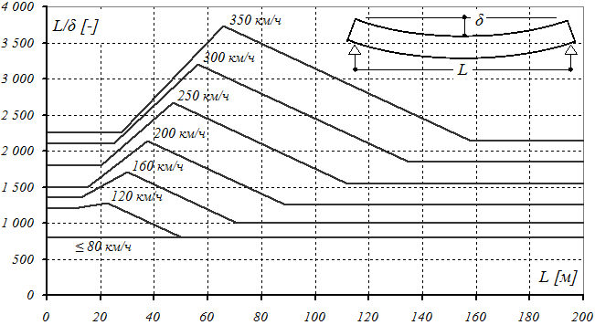
- L - расчетная длина пролетного строения; для неразрезных, рамных и арочных пролетных строений определяется в соответствии с указаниями В.5 приложения В
Рисунок 6.2 - Предельные вертикальные прогибы
Предельные прогибы (см. таблицу 6.8 и рисунок 6.2) приведены для разрезных двухпутных пролетных строений и для тех случаев, если сооружение содержит три и более одинаковых расположенных друг за другом пролетных строений.
Для сооружений с другими статическими схемами работы, удовлетворяющих условиям А.1 и А.2 (см. таблицу 6.4), отношение длины пролета к предельному прогибу ( L /δ) следует умножать на поправочные коэффициенты, приведенные в таблице 6.9.
Скручивание пролетного строения определяется от вертикальной железнодорожной эталонной нагрузки С8 и контролируется скручиванием одного из путей как изменение перепада отметок ниток рельсов.
Перепад отметок двух рельсов одного пути не должен превышать 1 мм на 3 м пути.
Таблица 6.9 Поправочные коэффициенты предельного прогиба для сооружений разных схем
| Особенности конструкции мостового сооружения | Коэффи- циент |
|---|---|
| Однопутное пролетное строение | 1,10 |
| Однопролетный мост | 0,85 |
| Мост из двух разрезных пролетных строений | 0,90 |
| Неразрезные пролетные строения, а также сооружения рамных или распорных схем | 0,90 |
Коэффициенты, приведенные в таблице 6.9, могут быть применены одновременно. При этом отношение L/ δ с учетом поправочных коэффициентов не должно быть менее 800.
При типовом проектировании пролетных строений, в тех случаях, когда неизвестно будущее положение пролетного строения в составе мостового сооружения, следует использовать предельные углы поворота консоли δΘ, приведенные в таблице 6.10.
При индивидуальном проектировании в зависимости от расположения перелома профиля следует использовать предельные взаимные смещения (см. рисунок 6.3) примыкающих элементов конструкций по таблице 6.11.
Рисунок 6.3 - Смещение консоли пролетного строения и ограничение углов перелома профиля
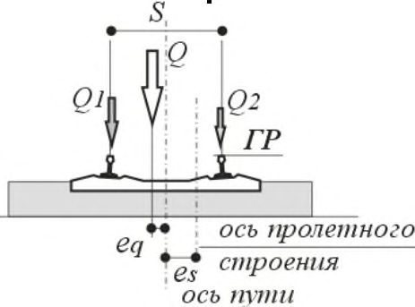
Таблица 6.10 Предельный угол поворота консоли δΘ (Θ0, Θ1, Θ2) 1) , ‰
| Консоль B , м | Высота H , м | Высота H , м | Высота H , м |
|---|---|---|---|
| Консоль B , м | ≤ 2,0 | 3,0 | ≥ 4,0 |
| Путь на балласте | Путь на балласте | Путь на балласте | Путь на балласте |
| ≤ 0,5 | 2,00 | 1,25 | 1,00 |
| ≥ 0,8 | 1,25 | 1,25 | 1,00 |
| Безбалластный путь | Безбалластный путь | Безбалластный путь | Безбалластный путь |
| ≤ 0,5 | 1,50 | 1,00 | 0,75 |
| ≥ 0,8 | 1,00 | 1,00 | 0,75 |
| 1) Промежуточные значения - по интерполяции. | 1) Промежуточные значения - по интерполяции. | 1) Промежуточные значения - по интерполяции. | 1) Промежуточные значения - по интерполяции. |
Таблица 6.11 Предельные взаимные смещения консолей пролетных строений
| Направления смещений и случаи | Обозначение 1) | Путь | Путь |
|---|---|---|---|
| расположения перелома профиля | на балласте | без балласта | |
| Вертикальные смещения консолей или консоли и устоя | | δ H Θ1 - δ H Θ2 | | ≤ 2,0 мм | ≤ 1,5 мм |
| Горизонтальное взаимное смещение на уровне верха плиты Δ' - Δ: - между смежными пролетными строениями - между пролетным строением и | | δ B Θ1 - δ B Θ2 | | ≤ 8,0 мм | ≤ 6,0 мм |
| устоем | | δ B Θ0 | | (≤ 10,0 мм) 2) | (≤ 8,0 мм) 2) |
| Угол перелома профиля между двумя смежными пролетными строениями или пролетным строением и шкафной стенкой устоя | Θ 1 + Θ 2 | ≤ 2,0‰ | ≤ 1,5‰ |
1) δ H Θ1 -δ H Θ2 - взаимные вертикальные смещения консолей соседних пролетных строений, а δ B Θ1 δ B Θ2, δ B Θ0 - взаимные горизонтальные смещения консолей соседних пролетных строений от поворота опорных сечений. Данные смещения вычислены, как максимальные при различных положениях подвижной нагрузки.
- 2) Значения в скобках приведены для расчетов, в которых взаимодействие пути и элементов сооружения не учитывается.
Примечания
- 1 Приведенные предельные прогибы и углы -упругие. Они являются дополнительными к соответствующим параметрам продольного профиля пути на стадии эксплуатации.
- 2 При расчетах по методикам Б.1 и Б.2 следует моделировать продольный профиль пути в соответствии с 6.3.20.
Ограничения по взаимным горизонтальным смещениям могут не выполняться в случаях, когда устройство компенсации удлинения рельсов (уравнительный прибор) установлено на конце одного из смежных пролетных строений, а в случае устройства пути на балласте последний конструктивно разорван между смежными пролетными строениями (или пролетным строением и устоем).
Требования по предельным взаимным линейным смещениям должны быть выполнены от торможения (тяги) высокоскоростных поездов (с двух путей) и поездов класса С8 (с одного пути) в соответствии с 6.6.2.17-6.6.2.24 c коэффициентами сочетаний по 6.6.5 (для второго предельного состояния, как для критерия безопасности движения).
Повороты опорного сечения и соответствующие вертикальные и горизонтальные смещения консоли пролетного строения, взаимные линейные смещения и дополнительные напряжения в рельсах должны быть вычислены как максимальные при расчетах совместной работы конструкции пути и несущих элементов моста по 6.6.3.25-6.6.3.29 при различных положениях временной нагрузки на мосту.
Чрезмерные взаимные смещения пути и пролетного строения могут привести к разуплотнению балласта и изменению параметров взаимодействия пути и сооружения.
Предельные смещения также косвенно ограничивают дополнительные продольные напряжения в рельсах.
Следует контролировать расчетом следующие взаимные смещения от сил торможения (тяги) (рисунок 6.4).
Рисунок 6.4 - Взаимные смещения пути и пролетного строения от торможения (тяги)
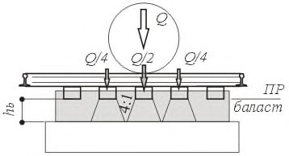
Рисунок 6.5 - Взаимные смещения пролетных строений от торможения (тяги) и температуры
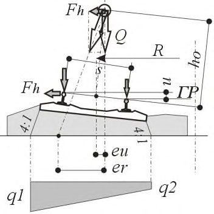
Таблица 6.12 Предельные взаимные линейные смещения от торможения (тяги)
| Тип пути | Наличие уравнительных приборов с обоих концов пролетного строения | Наличие уравнительных приборов с обоих концов пролетного строения |
|---|---|---|
| отсутствуют | установлены | |
| Смещение рельсов относительно пролетных строений δ R τ 1) (см. рисунок 6.4) | Смещение рельсов относительно пролетных строений δ R τ 1) (см. рисунок 6.4) | Смещение рельсов относительно пролетных строений δ R τ 1) (см. рисунок 6.4) |
| Любой тип пути | ≤ 4,0 мм | Не ограничены |
| Взаимное смещение пролетных строений δ L = Δ' L - Δ L (см. рисунок 6.5) | Взаимное смещение пролетных строений δ L = Δ' L - Δ L (см. рисунок 6.5) | Взаимное смещение пролетных строений δ L = Δ' L - Δ L (см. рисунок 6.5) |
| Путь на балласте | ≤ 5,0 мм | ≤ 30,0 мм²) |
| Безбалластный путь | ≤ 5,0 мм | Не ограничены |
Взаимодействие пути и сооружения
Эти смещения и усилия должны учитываться при обоснованиях надежности опорных частей, опор и фундаментов.
Дополнительные напряжения в рельсах не должны превышать предельных значений, приведенных в таблице 6.13.
Таблица 6.13 Предельные дополнительные напряжения в рельсах
| Дополнительные напряжения | При устройстве пути на балласте, МПа | При безбалластном пути, МПа |
|---|---|---|
| Сжатие | 72 | 92 |
| Растяжение | 92 | 92 |
Примечание - Предельные напряжения приведены для рельсов Р65 и при радиусах пути более 1500 м. В других случаях эти напряжения должны быть обоснованы соответствующим расчетом.
Контроль ускорений при динамических расчетах
- при устройстве пути на балласте - 0,35 g м/с 2 ;
- при жестком основании пути (плиты) - 0,50 g м/с 2 .
- 1,3 м/с 2 - если в расчете учитываются неровности пути и дефекты колес;
- 1,0 м/с 2 - если неровности пути и дефекты колес в расчете не учитываются.
Горизонтальные ускорения не должны превышать 1,0 м/с 2 .
При расчетах по методикам А.1 и А.2 выполнение проверок предельных ускорений в вагоне не требуется, комфортность обеспечивается выполнением условия предельных прогибов, указанных в 6.4.4-6.4.5, и разрешенного диапазона частот (приложение В).
При расчетах по методикам Б.1 и Б.2 (см. 6.3.10) пиковые значения ускорений в вагоне являются результатом динамического расчета по моделям III и IV (приложение А). Динамические расчеты следует проводить в диапазоне скоростей от 120 км/ч до проектной максимальной скорости на участке (6.3.5). Горизонтальные ускорения на уровне расположения пассажиров в вагоне необходимо контролировать расчетом в случаях косого в плане расположения поперечных балок (диафрагм) или опорных частей.
Допускается проверять выполнение критерия комфортного проезда пассажиров иными методами, согласующимися с действующими нормативными документами, при этом расчет должен выполняться по методике Б при параметрах поезда, заданных в соответствии с приложением У.
Обезгруживание колес
В случае использования методик Б.1 и Б.2 необходимо выполнять прямые проверки предельного обезгруживания колес высокоскоростных поездов, контролируя соблюдение следующих условий:
где Pmin , i,j - минимальное давление i -го колеса j -го поезда с учетом динамики, центробежной силы, а также эксцентриситетов eq и es (см. 6.6.2.6);
Pstat,i , j - статическое давление i -го колеса j -го поезда;
Yi,j - поперечная сила, передаваемая i -м колесом j -го поезда;
Pi,j - текущее давление i -го колеса j -го поезда;
Y 0 ,k,j - поперечная сила, передаваемая k -й колесной парой j -го поезда, кН;
P 0 ,k,j - статическая осевая нагрузка от k -й колесной пары j -го поезда, кН.
При расчетах по методике Б.1 минимальное давление Pmin , i , j в (6.4) следует определять с учетом коэффициента динамики (1 - μ2).
Расчеты трещиностойкости бетона
- нормальных сжимающих напряжений для исключения возможности продольного трещинообразования;
- главных напряжений в тонкостенных элементах между поперечным армированием;
- образования и раскрытия трещин (если допускается для данного элемента) в зонах растягивающих напряжений для исключения возможности коррозии арматуры и снижения сроков службы.
Предельные эксцентриситеты и давление на грунт
Осадки основания, ползучесть и усадка бетона
При проектировании следует применять такие инженерные решения по конструкциям и по производству работ, которые позволяют минимизировать возможные необратимые процессы осадок и кренов оснований и ползучести бетона, как во время строительства, так и продолжающиеся после пуска сооружения в эксплуатацию.
Необходимо минимизировать также неравномерность осадок, как по ширине фундамента (крены), так и соседних опор.
Необходимо учитывать, что полная конечная осадка включает две составляющие: начальную (мгновенную) и замедленную (запаздывающую) (см. 10.10-10.12).
Эти требования могут не соблюдаться, если проектом предусмотрены конструкции или мероприятия по регулировке профиля в требуемых для компенсации осадок диапазонах (например, корректировкой толщины балласта).
Для неразрезных, рамных и арочных конструкций больших пролетов, когда выполнение требований таблицы 6.5 приводит к нерациональным проектным решениям, допускается превышать предельные значения, указанные в таблице 6.5, но не более чем в два раза. В этом случае обязательно выполнение динамических расчетов по методике Б.2 с контролем ускорений в вагоне и обезгруживания колес.
6.5Расчеты по предельным состояниям первой группы
6.5.1 Общие положения
6.5.1.1 Расчеты по предельным состояниям первой группы производят по:
- устойчивости против опрокидывания;
- прочности и устойчивости элементов конструкции;
- выносливости элементов.
Расчеты производятся на следующие сочетания нагрузок:
- основные;
- дополнительные;
- особые;
- строительные.
6.5.1.2 Состав расчетов по первой группе предельных состояний и учитываемые при этом коэффициенты приведены в таблице 6.14.
Таблица 6.14 Расчеты по предельным состояниям первой группы. Коэффициенты
| Сочетания нагрузок | Прочность, устойчивость формы элементов и положения | Выносливость элементов |
|---|---|---|
| γ n = 1,1 1) γ f - таблицы 6.9 , 6.10 1 + μ 1 + μ 2 ≥ 1,20 2) - ВСП 1 + μ ≥ 1,15 - СК | γ n = 1,0 γ f = 1,0 1 + 1/2 μ 1 + μ 2 ≥ 1,125 2) - ВСП | Основные |
| γ f - таблицы 6.9-6.11 1 + μ 1 + μ 2 ≥ 1,20 2) - | Расчеты не производятся | Дополнительные ВСП |
| γ f = 1,0 - постоянные γ f - воздействия - таблица 6.12 1 + μ 1 + μ 2 = 1,0 - ВСП 1 + μ = 1,0 - СК | Расчеты не производятся | Особые |
| Строительные γ n = 1,0 γ - таблица | Расчеты не производятся | 6.13 |
- при расчетах на основные сочетания нагрузок:
- при проверках прочности и устойчивости - γ n = 1,1,
- при проверках устойчивости положения - γ n по 6.5.2;
- в остальных случаях - γ n = 1,0.
- 2) Для «разгружающей» динамики (см. Ж.3 приложения Ж) - ≤ -1,20 или ≤ -1,15 соответственно.
6.5.1.3 При расчетах по первой группе предельных состояний в случаях, перечисленных в таблице 6.14, коэффициенты надежности по нагрузкам γ f и коэффициенты динамики следует принимать согласно таблицам 6.15-6.19.
СП .1325800.2019
Таблица 6.15 Постоянные нагрузки. Коэффициенты надежности по нагрузке
| Нагрузки и воздействия | Коэффициент надежности по нагрузке γ f |
|---|---|
| Все, не указанные в настоящей таблице | 1,1 (0,9) |
| Вес мостового полотна с ездой на балласте | 1,3 (0,9) |
| Вес мостового полотна под путем на железобетонных плитах | 1,2 (0,9) |
| Предварительное напряжение или регулирование усилий при контроле по деформациям | 1,2 (0,8) |
| Осадки грунта | 1,5 (0,5) |
| Давление грунта | 6.6.1.13-6.6.1.14 1) |
Таблица 6.16 -
Временные подвижные нагрузки. Коэффициенты надежности по нагрузке и коэффициенты динамики
| Нагрузки при расчетах | Коэффициент надежности по нагрузке γ f | Коэффициент динамики |
|---|---|---|
| Вертикальные временные нагрузки СК: | ||
| - элементов мостов | 1,30 - при λ 1) = 0 м 1,15 - при λ 1) = 50 м 1,10 - при λ 1) ≥ 150 м | По приложениюЖ |
| - элементов труб | 1,30 | По приложениюЖ |
| Вертикальные временные нагрузки ВСП 2) : | ||
| - элементов мостов | 1,20 | По приложениюЖ и 6.5.4.5 |
| - элементов труб | 1,40 4) | 1,00 4) |
| Горизонтальные компоненты временных нагрузок | СК 3) : | |
| - элементов мостов | 1,20 - при λ 1) = 0 м 1,10 - при λ 1) ≥ 50 м | 1,00 |
| - элементов труб | 1,20 | 1,00 |
| Горизонтальные компоненты временных нагрузок от | ВСП 3) : | |
| - элементов мостов | 1,20 | 1,00 |
| - элементов труб | 1,40 | 1,00 |
| Вертикальное и горизонтальное давление грунта со стороны насыпи для ВСП и СК | 1,20 | 1,00 |
| Нагрузка на служебных проходах | 1,10 | 1,00 |
Таблица 6.17 Прочие нагрузки и воздействия. Коэффициенты надежности
| Нагрузки и воздействия | Коэффициент надежности по нагрузке γ f |
|---|---|
| Ветровые нагрузки: | |
| - на стадии эксплуатации | 1,6 |
| - на стадии строительства | 1,0 |
| Температурные и климатические воздействия | 1,2 |
| Ледовая нагрузка | 1,2 |
| Аэродинамические воздействия от проходящих поездов | 1,2 |
Таблица 6.18 Особые нагрузки. Коэффициенты надежности по нагрузке
| Нагрузки и воздействия | Коэффициент надежности по нагрузке γ f |
|---|---|
| Сейсмические воздействия | 1,0 |
| Сход поезда с рельсов | 1,0 1) |
| Столкновение судна с опорой или пролетным строением | 1,2 |
| Наезд транспорта с пересекаемой автомобильной дороги | 1,0 1) |
| 1) Коэффициент учтен в нагрузке. | 1) Коэффициент учтен в нагрузке. |
Таблица 6.19 Строительные нагрузки. Коэффициенты надежности по нагрузке
| Нагрузки и воздействия | Коэффициент надежности по нагрузке γ f | |
|---|---|---|
| Собственный вес вспомогательных обустройств | 1,1 (0,9) | |
| Вес складируемых материалов и воздействие искусственного регулирования во вспомогательных сооружениях | 1,3 (0,8) | |
| Вес работающих людей, инструмента, мелкого оборудования | 1,3 (0,7) | |
| Вес кранов, копров и транспортных средств | 1,1 (1,0) | |
| Усилия от гидравлических домкратов и электрических лебедок при подъеме и передвижке | 1,3 (1,0) | |
| Усилия от трения при перемещении пролетных строений и других грузов: | Усилия от трения при перемещении пролетных строений и других грузов: | Усилия от трения при перемещении пролетных строений и других грузов: |
| - на катках | 1,3 (1,0) | |
| - на салазках | 1,1 (1,0) | |
| - на тележках | 1,2 (1,0) |
6.5.1.4 В каждом из рассматриваемых сочетаний коэффициент надежности γ f постоянных нагрузок и воздействий, указанных в таблицах 6.9 и 6.13 и имеющих одну природу (вес, натяжение и др.), следует принимать одинаковыми (> 1,0 или < 1,0), за исключением расчетов по устойчивости положения, в которых γ f принимают в соответствии с 6.5.2.7 и 6.5.2.8.
6.5.2 Расчеты устойчивости положения
Общие указания
- 6.5.2.1 Целью расчета по устойчивости положения является недопущение опрокидывания и (или) сдвига элементов конструкции или конструкции совместно с основанием. Принимаемая в расчете схема (при достижении предельного состояния) должна быть статически и кинематически возможна.
6.5.2.2 Расчет устойчивости совместно с основанием в общем случае следует выполнять методами теории предельного равновесия, основанными на поиске наиболее опасных поверхностей скольжения. Возможные поверхности скольжения, отделяющие сдвигаемый массив грунта от неподвижного, могут быть приняты круглоцилиндрическими, ломаными, в виде логарифмической спирали или другой формы.
- 6.5.2.3 Для каждой возможной поверхности скольжения вычисляют предельную нагрузку. При этом используют соотношения между вертикальными, горизонтальными и моментными компонентами нагрузки, которые ожидаются в момент потери устойчивости и описывают нагрузку одним параметром. Этот параметр определяется из условия равновесия сил (в проекции на заданную ось) или моментов (относительно заданной оси). В качестве предельной нагрузки принимают минимальное значение.
- 6.5.2.4 В число рассматриваемых при определении равновесия сил включают постоянные вертикальные, горизонтальные и моментные нагрузки от веса элементов сооружения и грунта, фильтрационные силы, силы трения и сцепления по выбранной поверхности скольжения, нагрузки от временных воздействий, активное и (или) пассивное давление грунта на сдвигаемую часть грунтового массива вне поверхности скольжения.
- 6.5.2.5 Действующие и предельные нагрузки вычисляются по первому предельному состоянию, при этом коэффициенты надежности по нагрузке γ f следует принимать:
- а) действующие (опрокидывающие, сдвигающие) нагрузки:
- для постоянных и временных нагрузок - γ f > 1 (γ m < 1).
- б) удерживающие (предельные) нагрузки:
- для постоянных нагрузок - γ f < 1 (γ m > 1);
- для вертикальной подвижной нагрузки (от порожнего состава) - γ f = 1.
Примечание - При вычислении действующих и удерживающих сил трения, сцепления или нагрузок от веса грунта коэффициенты γ m к нормативным значениям угла внутреннего трения, сцепления и плотности грунта следует назначать > 1 или < 1 в зависимости от принадлежности фактора к действующим или удерживающим нагрузкам, но одинаковыми для одного и того же слоя грунта.
При затруднениях по отнесению указанных выше сил к сдвигающим или удерживающим нагрузкам следует проводить два расчета и считать расчетным худший случай.
- 6.5.2.6 В соответствующих случаях, руководствуясь указаниями СП 35.13330.2011 (пункт 11.6), необходимо учитывать уменьшение веса конструкции вследствие взвешивающего действия воды.
Устойчивость против опрокидывания
6.5.2.7 Устойчивость положения против опрокидывания конструкций, опирающихся на отдельные опоры (например, при уравновешенном монтаже или надвижке пролетного строения), а также фундаментов на грунтовых основаниях следует рассчитывать по формуле
где Мu - момент опрокидывающих сил относительно оси возможного поворота (опрокидывания) конструкции;
Мz - момент удерживающих сил относительно той же оси; m - коэффициент условий работы, принимаемый по таблице 6.20; γ n - коэффициент надежности по ответственности (назначению) по таблице 6.20.
Таблица 6.20
| Расчетный случай | Расчетный случай | Постоянная эксплуатация | Стадия строительства |
|---|---|---|---|
| Опирание на отдельные | опоры | m = 1,0 γ n = 1,1 | m = 0,95 γ n = 1,0 |
| На скальном | m = 0,9 γ n = 1,1 | m = 0,9 γ n = 1,0 | |
| основании | |||
| На нескальном | m = 0,8 | m = 0,8 | |
| основании | γ n = 1,1 | γ n = 1,0 |
Коэффициенты надежности по нагрузке при вычислении опрокидывающих Mu и удерживающих Mz моментов следует принимать по таблицам 6.16-6.18 и 6.20.
Устойчивость против сдвига
- 6.5.2.8 Устойчивость положения конструкций против сдвига (скольжения) следует рассчитывать по формуле
где Qr - сдвигающая сила, равная сумме проекций сдвигающих сил на направление возможного сдвига;
Qz - удерживающая сила, равная сумме проекций удерживающих сил на направление возможного сдвига; m - коэффициент условий работы, принимаемый равным 0,9; γ n - коэффициент надежности по назначению согласно таблице 6.20.
Коэффициенты надежности по нагрузке при вычислении сдвигающих Qr и удерживающих Qz сил следует принимать по таблицам 6.15-6.17 и 6.19.
Примечания
- 1 При расчете по плоскому сдвигу в качестве удерживающей горизонтальной силы, создаваемой грунтом, следует принимать силу, значение которой не превышает активного давления грунта.
- 2 Силы трения в основании определяют по коэффициентам трения, указанным в СП 35.13330.2011 (раздел 11). Коэффициент трения между блоками кладки следует принимать равным 0,55.
СП .1325800.2019
6.5.3 Расчеты прочности и устойчивости
- 6.5.3.1 Расчеты по устойчивости положения, а также по прочности и устойчивости элементов отражают случаи экстремальных нагрузок, возможных на стадии эксплуатации сооружения, вероятности появления которых отражаются коэффициентами надежности по нагрузкам γ f > 1,0 с учетом ответственности сооружения γ n.
6.5.3.2 При расчетах прочности и устойчивости следует учитывать динамический характер нагрузок от поездов в полном объеме.
В случаях выполнения расчетов по сочетаниям с ВСП по упрощенной методике А динамический характер воздействий учитывается коэффициентами динамики (1 + μ1 + μ2) к статическим составляющим нагрузок (см. приложение Ж); при расчетах по методике Б прямыми динамическими расчетами, как экстремальные (пиковые) значения с учетом коэффициента динамики (1 + μ2).
При выполнении расчетов на нагрузки поездов обычных скоростей движения (СК) динамические воздействия поездов учитываются коэффициентом динамики (1 + μ) по Ж.10 (приложение Ж).
6.5.4 Расчеты выносливости
- 6.5.4.1 Расчеты выносливости (усталости, износа) отражают вероятность отказа сооружения по признаку снижения физико-механических свойств материала, а также появления дефектов в соединениях (стыках, сварных швах).
6.5.4.2 Вероятность отказов по признаку выносливости оценивают на интервале срока службы сооружения (100 лет).
- 6.5.4.3 Величина снижения прочностных характеристик материалов и стыков зависит от следующих факторов:
- уровня напряженного состояния (близость к предельным значениям или к пластической зоне и параметры асимметрии циклов приложения нагрузок (амплитуды и скорости возрастания нагрузок));
- деградации свойств материалов или изменения геометрии сечений, связанные с «возрастом» элементов (деградация бетона, коррозия стали и др.).
При отсутствии данных по конкретному набору поездов, эксплуатируемых на участке магистрали, характеристик этих поездов и интенсивности их обращения, а также данных по зависимостям снижения свойств материалов и расстройству стыков от динамических воздействий, характерных для поездов ВСП, следует учитывать снижение прочностных характеристик материалов по методикам разделов 7 и 8, а также СП 35.13330.2011 (раздел 9):
- для арматуры и бетона - коэффициентами mas 1, map 1 и mb 1 (см. СП 35.13330.2011 (пункты 7.39, 7.26)) и учетом n 1 согласно СП 35.13330.2011 (пункт 7.48);
- для стали - согласно положениям разделов 8, 9 и приложения Н.
- 6.5.4.4 Расчеты выносливости выполняются только от регулярно проходящих по сооружению ВСП. Влияние нагрузки СК (поезда обслуживания) на выносливость элементов конструкции не учитывается.
- 6.5.4.5 В отличие от расчетов прочности, где расчет производится на случаи экстремальных нагрузок (один раз на срок службы), при расчетах выносливости принимаются во внимание средние, значимые для выносливости, интенсивности воздействий от обращающейся нагрузки.
При отсутствии данных эксплуатации на линии конкретного набора поездов, их характеристик, а также интенсивности их обращения по участкам магистрали следует учитывать средний характер нагрузок при расчетах по выносливости следующим образом:
- учитывать нагрузки только с одного пути;
- рассматривать нормативные значения интенсивностей нагрузок от ВСП, принимая коэффициент надежности по ответственности γ n = 1,0 и коэффициент надежности по нагрузкам γ f = 1,0;
- учитывать средний характер динамических воздействий от ВСП снижением:
- при расчетах по методике А.1 (см. 6.3.10 и Ж.4 приложения Ж) - коэффициента динамики 1 + 1/2 μ1 + μ2;
- при расчетах по методикам А.2 и Б (см. 6.3.10) - пиковых откликов силовых факторов в элементах сооружения (см. Ж.5 и Ж.6 приложения Ж).
При вычислении интенсивностей вертикальных воздействий, а также при определении асимметрии циклов следует учитывать максимальные и минимальные значения соответствующего фактора, учитывая в том числе «разгружающую» динамику в соответствии с Ж.3 (приложение Ж).
- 6.5.4.6 При расчетах по методикам А.2 и Б (см. 6.3.10) динамические расчеты следует проводить в диапазоне скоростей от 120 км/ч до проектной максимальной скорости на участке (6.3.5).
- 6.5.4.7 Расчету на выносливость подлежат несущие элементы пролетных строений (включая плиты проезда), опоры и опорные части.
На выносливость не рассчитывают:
- фундаменты всех видов;
- трубы 1) ;
- бетон растянутой зоны;
- арматуру, работающую только на сжатие.
6.6Нагрузки и воздействия
6.6.1 Постоянные нагрузки и воздействия
- 6.6.1.1 Нормативную вертикальную нагрузку от собственного веса конструкций, а также постоянных смотровых приспособлений, опор и проводов линий электрификации и связи, трубопроводов и т. д. следует определять по проектным объемам.
- 6.6.1.2 Для балочных пролетных строений нагрузку от собственного веса допускается принимать равномерно распределенной по длине пролета, если величина ее на отдельных участках отклоняется от среднего значения не более чем на 10 %.
- 6.6.1.3 Вес сварных швов, а также выступающих частей высокопрочных болтов с гайками и двумя шайбами допускается принимать в процентах к общему весу металла по таблице 6.21.
Таблица 6.21 Учет веса сварных швов и метизов
| Металлическая конструкция | Сварные швы ,% | Выступающие части высокопрочных болтов , гайки и две шайбы ,% |
|---|---|---|
| Болтосварная | 1,0 | 4,0 |
| Сварная | 2,0 | - |
6.6.1.4 Нормативное воздействие предварительного напряжения (в том числе регулирования усилий) в конструкции следует устанавливать по предусмотренному
1 При толщине засыпки над звеньями труб более 2,5 м (1,5 м) (см. 5.2.5).
(контролируемому) усилию с учетом нормативных величин потерь, соответствующих рассматриваемой стадии работы.
В железобетонных и сталежелезобетонных конструкциях кроме потерь, связанных с технологией выполнения работ по напряжению и регулированию усилий, следует учитывать также потери, вызываемые усадкой и ползучестью бетона.
- 6.6.1.5 Нормативное давление грунта от веса насыпи на опоры мостов и звенья труб следует определять по формулам, кПа:
- а) вертикальное давление:
- для опор мостов и подпорных стен
- б) горизонтальное (боковое) давление
где h - высота засыпки, м, определяемая для устоев мостов по СП 35.13330.2011 (приложение Е), для звеньев труб по СП 35.13330.2011 (приложение Ж); ρ n - нормативный удельный вес грунта, кН/м³;
С ν - коэффициент вертикального давления, определяемый по СП 35.13330.2011 (приложение Ж); cn - нормативное значение сцепления; τ n - коэффициент нормативного бокового давления грунта засыпки береговых опор мостов, определяемый по формуле
где φ n - нормативный угол внутреннего трения грунта, градусы.
Примечание - Формулы (6.11) и (6.12) не применимы при расчетах:
- опор мостов, а также звеньев труб, смещение которых в сторону от насыпи на величину более 1/1000 H невозможно кинематически или приводит к нарушению работоспособности опоры (жесткие рамы, распорные системы, основания с большой горизонтальной жесткостью и др.);
- устоев мостов с «положительным» наклоном задней грани (все углы призмы обрушения < 90°);
- оголовков и крыльев труб, а также элементов устоев и опор, расположенных на склонах насыпей;
- насыпей из армированного грунта.
- 6.6.1.6 При определении давления от укрепленных участков насыпи (см. 5.2.5 и 5.7.2) следует рассматривать два случая:
- случай максимального воздействия грунта - давление определяется по 6.6.1.5; характеристики грунта принимают соответствующими засыпке, используемой для укрепленного участка (например, щебень); влияние связующих растворов или других способов укрепления не учитывают;
- случай отсутствия воздействий со стороны насыпи.
Допускается проводить специальные расчеты, учитывающие характеристики грунтов укрепленной зоны, а также производство работ по ее устройству, обосновывающие предельно возможный диапазон давлений с обеспеченностью, соответствующей требованиям подраздела 6.1.
- 6.6.1.7 Значения ρ n и φ n следует, как правило, принимать на основании лабораторных исследований образцов грунтов, предназначенных для засыпки опор мостов, подпорных стен и труб (при доверительной вероятности нормативных значений 0,90).
- для звеньев труб
При типовом проектировании и только для грунта песчаной насыпи при определении нормативного давления грунта допускается принимать: а) удельный нормативный вес грунта засыпки ρ n = 17,7 кН/м³; б) нормативный угол внутреннего трения φ n = 35° (для устоев при засыпке песчаным дренирующим грунтом); в) нормативное значение сцепления грунта cn = 0.
Для предварительных расчетов допускается определять нормативные значения характеристик грунтов по СП 22.13330.2016 (см. таблицы А.1-А.8 приложения А).
6.6.1.8 Методика определения равнодействующей нормативного и расчетного горизонтального (бокового) давления на опоры мостов от собственного веса грунта приведена в СП 35.13330.2011 (приложение Е).
При определении давления грунтов в случаях, не попадающих под ограничения применимости формул (6.9)-(6.12), следует пользоваться указаниями СП 22.13330.2016 (раздел 9).
6.6.1.9 Нормативное гидростатическое давление (взвешивающее действие воды) следует определять в соответствии с указаниями раздела 10.
6.6.1.10 Нормативное воздействие усадки и ползучести бетона следует принимать в виде относительных деформаций и учитывать при определении перемещений и усилий в конструкциях.
Ползучесть бетона определяется только от действия постоянных нагрузок.
Значения нормативных деформаций усадки и ползучести для рассматриваемой стадии работы следует определять по значениям предельных относительных деформаций усадки бетона ε n и удельных деформаций ползучести бетона сn в соответствии с указаниями разделов 7 и 9.
6.6.1.11 Нормативное воздействие от осадки грунта в основании опор мостов следует принимать по результатам расчета на смещения от осадок фундаментов.
6.6.1.12 Коэффициенты надежности по нагрузке γ f для указанных в 6.6.1.1-6.6.1.4, 6.6.1.9-6.6.1.11 постоянных нагрузок и воздействий следует принимать по таблице 6.15, расчетные давления грунта - по 6.6.1.13 и 6.6.1.14. При этом на всех загружаемых нагрузкой участках линий влияния (в одном расчетном случае) значения γ f для каждой из нагрузок следует принимать одинаковыми во всех случаях, за исключением расчетов по устойчивости положения, в которых γ f для разных загружаемых участков принимается в соответствии с указаниями 6.5.2.5, и расчетов на разницу осадок грунта в основании соседних опор моста.
6.6.1.13 При расчетах по первой группе предельных состояний расчетные нагрузки от вертикального и горизонтального давления грунтов на опоры мостов и трубы следует определять при расчетных значениях характеристик грунтов.
Давление грунтов следует принимать по формулам (6.9)-(6.12), подставляя в них расчетные характеристики грунтов. При этом расчетные значения характеристик грунтов принимают при доверительной вероятности 0,98. Расчетные характеристики грунтов следует определять по формуле
где Xn - нормативное значение данной характеристики;
g - коэффициент надежности по грунту.
Примечание - Расчетные значения характеристик грунтов, соответствующие различным значениям доверительной вероятности (для расчетов по первой и второй группам предельных состояний), должны приводиться в отчетах по инженерно-геологическим изысканиям.
- 6.6.1.14 Для предварительных расчетов и при определении нормативных значений характеристик грунтов по СП 22.13330.2016 (приложение А) следует принимать коэффициенты надежности по грунту по таблице 6.22.
Таблица 6.22 Коэффициенты надежности по грунту
| Характеристика грунта | Коэффициенты надежности по грунту γ g |
|---|---|
| Объемный вес грунта (плотность) | 1,1 (0,9) |
| Угол внутреннего трения | 1,2 (0,8) |
| Сцепление | 1,5 (0,5) |
При типовом проектировании допускается принимать расчетные характеристики грунтов песчаной насыпи равными:
- a) расчетный удельный вес грунта засыпки ρI = 19,7 кН/м³ (максимальный); 2. б) расчетные минимальные углы внутреннего трения φI = 29° (для устоев при засыпке песчаным дренирующим грунтом); 3. в) расчетное значение сцепления грунта насыпи c I = 0. 4. 6.6.1.15 При вычислении масс элементов конструкции следуют указаниям 6.3.8. 5. 6.6.1.16 В расчетах на сочетания с особыми воздействиями (сейсмические воздействия) и аварийными нагрузками (сход поезда и наезд транспорта снизу, навал судов) коэффициенты надежности к постоянным нагрузкам следует принимать равными 1,0.
6.6.2 Временные подвижные нагрузки
Вертикальные нагрузки от подвижного состава
- 6.6.2.1 При проектировании искусственных сооружений на ВСМ следует учитывать возможность появления на них двух типов временных нагрузок, соответствующих двум видам поездов:
- нагрузки от высокоскоростных поездов, имеющих скорости движения ≤ 350 км/ч;
- нагрузки от поездов со скоростями движения ≤ 200 км/ч, все многообразие воздействий от которых описывается эквивалентными нагрузками СК класса 8 и набором соответствующих коэффициентов.
Примечание - Пропуск нагрузки ВТ по искусственным сооружениям не допускается.
- 6.6.2.2 Расчеты, связанные с воздействиями высокоскоростных поездов, следует выполнять на возможное воздействие любого поезда из указанных в приложении Г:
- 1) 10 поездов А1-А10;
- 2) 11 поездов Б1-Б11.
Поезда, указанные в приложении Г, и эквивалентные нагрузки от этих поездов, приведенные в приложении Д, следует принимать в том случае, если в техническом задании на проектирование не указаны параметры поездов. В противном случае в расчетах следует использовать воздействия от поездов, приведенных в техническом задании.
Параметры этих поездов могут быть или заданы явно (нагрузки на оси и цепочки расстояний по осям поездов), или приведены в виде эквивалентных нагрузок.
В зависимости от типа применяемой методики (типа конструктивных решений) для выполнения расчетных обоснований требуются различные характеристики этих поездов.
При расчетах по методике А необходимы лишь наборы осевых нагрузок и расстояния по осям этих поездов (аналогично поездам, указанным в приложении Г).
При расчетах по методике Б параметры поездов должны содержать данные, полнота которых определяется приложением У.
Кроме того, независимо от типа расчета, в задании на проектирование должен быть указан перечень учитываемых поездов из списка А1-А10 приложения Д.
6.6.2.3 При определении факторов напряженно-деформированного состояния элементов расчетных моделей и определении статического воздействия от наборов поездов ВСП возможно загружение линий влияния этих факторов огибающими эквивалентными нагрузками, приведенными в приложении Д.
6.6.2.4 Загружение линий влияния или элементов расчетной модели эквивалентными нагрузками от ВСП, приведенными в приложении Д, возможно только для треугольных линий влияния. В других случаях следует загружать линии влияния группами сосредоточенных сил, соответствующих расчетным поездам, указанным в 6.6.2.2, проводя поиск наиболее опасного их положения на линии влияния.
При загружении линий влияния эквивалентными нагрузками следует принимать длину поезда ВСП, не превышающую 300 м.
При расчете массивных устоев мостов с разрезными балочными пролетными строениями загружение пролета, призмы обрушения и устоя следует проводить в соответствии с указаниями СП 35.13330.2011 (пункт К.6, рисунок К.4 и таблица К.2 приложения К), принимая эквивалентные нагрузки от высокоскоростных поездов по приложению Д.
6.6.2.5 Нормативную временную вертикальную нагрузку СК следует принимать согласно приложению Е, принимая класс нагрузки СК равным 8 и длину поезда не более 300 м. При определении эквивалентных нагрузок для сложных линий влияния следует использовать методику СП 35.13330.2011 (приложение К).
С точки зрения динамических расчетов нагрузка от поездов обслуживания является тестовой (эталонной). Проверку прогибов, углов перелома и углов скручивания пути выполняют при действии этой нагрузки.
При расчетах взаимодействия пути и сооружения нагрузку на служебных проходах не учитывают.
Примечание - На ВСМ не следует учитывать перспективу увеличения нагрузок и появление тяжелых транспортеров или нагрузок новых схем, движущихся на обычных скоростях (до 200 км/ч). Во всех расчетах на нагрузку СК следует учитывать понижающий коэффициент ε ≤ 1 (приведен в приложении Е).
6.6.2.6 При расчетах основных конструкций мостов, а также элементов проезжей части и плит следует учитывать эксцентриситеты eq и es приложения распределенной или осевой нагрузки поперек пути (см. рисунок 6.6).
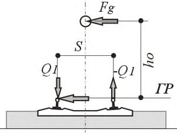
- s - расстояние по головкам рельсов - 1,6 м;
- eq - эксцентриситет нагрузки относительно оси пути;
- es - эксцентриситет пути относительно пролетного строения;
- Q - распределенная или сосредоточенная нагрузка;
- Q 1 - максимальное давление на нитку рельсов;
- Q 2 - минимальное давление на нитку рельсов.
Рисунок 6.6 - Эксцентриситеты приложения нагрузки поперек оси пути
Эксцентриситет нагрузки относительно оси пути eq , вызванный возможным смещением груза, следует принимать равным:
Эксцентриситет es возможного смещения оси пути относительно проектной оси на пролетном строении на прямолинейных и криволинейных участках пути в плане назначается при проектировании из конструктивных соображений (радиуса кривой, ширины балластного корыта), но не менее 5 см.
Эти эксцентриситеты необходимо учитывать совместно с центробежными силами и поперечными ударами подвижного состава.
6.6.2.7 При расчетах местных воздействий от осей железнодорожной нагрузки следует считать, что давление от оси распределяется на три шпалы при устройстве пути на балласте (см. рисунок 6.7) или на три рельсовые подкладки - при безбалластном основании пути. При этом на шпалу под осью (или подкладку) приходится 1/2 часть давления, а на две соседние - по 1/4 части. При устройстве пути на балласте следует полагать, что распределение давления под шпалой происходит под углом 4:1.
Рисунок 6.7 - Распределение давления от одиночной оси вдоль пути
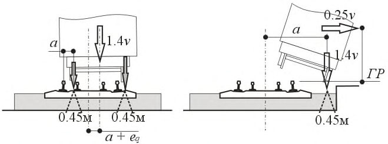
6.6.2.8 Во всех расчетах элементов конструкций, воспринимающих временную нагрузку с нескольких путей, нагрузку от подвижного состава следует принимать в соответствии с указаниями 6.6.5.1.
Давление грунта со стороны насыпи от подвижного состава
6.6.2.9 Нормативное горизонтальное (боковое) давление грунта на устои мостов от подвижного состава, находящегося на призме обрушения, следует принимать по СП 35.13330.2011 (приложение М). Нагрузку от подвижного состава ВСП на призме обрушения допускается определять по приложению Д, выбирая один расчетный поезд, дающий максимальное значение нагрузки. Нагрузку от поездов СК следует принимать по приложению Е.
Примечания
- 1 Горизонтальное (боковое) давление грунта от подвижного состава, находящегося на призме обрушения, не учитывается совместно с сейсмическим воздействием на устои.
- 2 При определении давления грунта со стороны насыпи подходов следует учитывать характеристики уплотненных грунтов переходной зоны, а также производство работ по ее устройству (см. 6.6.1.6).
- 6.6.2.10 Нормативное давление грунта от подвижного состава на опоры мостов и на звенья труб (на соответствующую проекцию внешнего контура трубы) следует определять с учетом распределения давления нагрузки в грунте по формулам:
- а) вертикальное давление
- б) горизонтальное давление
- где v - интенсивность временной вертикальной нагрузки от подвижного состава, принимаемая согласно 6.6.2.5, для длины загружения λ = d + h и положения вершины линии влияния α = 0,5, но не более 19,6К кН/м пути;
- d - диаметр (ширина) звена (секции) по внешнему контуру, м;
- h - расстояние от подошвы рельса до верха звена при определении вертикального давления или до рассматриваемого горизонта при определении горизонтального (бокового) давления, м;
- τ n - коэффициент бокового давления, определяемый по формуле (6.12) и в соответствии с указаниями 6.6.1.6-6.6.1.9 и примечанием к 6.6.1.5.
Примечание - Формулы (6.15) и (6.16) применимы при толщине засыпки:
- более 2,5 м (1,5 м) (см. 5.2.5) - от поездов С8 согласно 6.6.2.5;
- при меньшей толщине - давление определяется по результатам динамических расчетов.
Поперечная нагрузка от центробежной силы
6.6.2.11 Интенсивность нормативной горизонтальной поперечной нагрузки от центробежной силы для мостов, расположенных на кривых, следует принимать с каждого пути в виде равномерно распределенной нагрузки интенсивностью vh , а при расчетах местных воздействий от осей железнодорожной нагрузки - силы Fh . Значения vh и Fh необходимо принимать:
- а) для нагрузок от ВСП:
где v - нагрузка от подвижного состава, кН/м, принимаемая по приложениям Е или Д;
Q - нагрузка на колесо или ось, кН;
Ah - безразмерный коэффициент поперечного ускорения, принимаемый:
где V 1 - проектная максимальная скорость на участке, м/с;
R - радиус кривой, м; б) для нагрузок от СК:
- по формулам (6.17), (6.18), принимая скорость движения V = 200 км/ч.
Во всех сочетаниях с центробежной нагрузкой следует учитывать эксцентриситеты eq и es , указанные в 6.6.2.6, а также эксцентриситеты eu и er , указанные в 6.6.2.14.
При расчетах элементов пролетных строений, воспринимающих, в том числе, местную нагрузку от отдельных осей поезда, следует рассматривать две ситуации: движения поезда на максимальной проектной скорости и остановки состава на кривой (в том числе на всех путях). В ситуации остановки поезда необходимо учитывать эксцентриситеты eu , eq и es (см. рисунки 6.6 и 6.8). Ситуация остановки рассматривается при расчетах по первой и второй группам предельных состояний (исключая расчеты на выносливость), при этом коэффициент динамики не учитывают.
При типовом проектировании элементов искусственных сооружений на криволинейных участках пути для всех типов поездов допускается принимать значение коэффициента поперечного ускорения Ah = 0,15. Возвышение наружного рельса допускается принимать u = 0,15 м (как при движении поезда на максимальной скорости, так и при его остановке).
Примечания
1 При проектировании трасс ВСМ назначение скоростей движения на участках и радиусов кривых следует проводить в соответствии с требованиями комфортности пассажиров и надежности крепления грузов, при величинах непогашенного ускорения:
2 Минимальная скорость движения поездов определяется ограничением по минимальному отрицательному непогашенному ускорению ah ,min = - 0,3 м/с 2 при возвышении наружной нитки рельса, ограниченном условием примечания 1 и максимальным значением u = 0,15 м. При остановке поезда это условие не выполняется. Случай остановки рассматривается как необходимое условие выполнения требований надежности (исключая расчеты на выносливость) при внештатной ситуации.
6.6.2.12 При расчетах по первой и второй группам предельных состояний нагрузку со второго пути следует принимать с коэффициентом s 1 в соответствии с 6.6.5.1.
6.6.2.13 Высоту приложения нагрузки vh , м, от головки рельса следует принимать:
1,8 - для нагрузок ВСП;
2,2 - для нагрузок СК.
- 6.6.2.14 Давления на плиту балластного корыта следует определять в соответствии со схемой, приведенной на рисунке 6.8.
Рисунок 6.8 - Схема приложения сил при учете центробежной силы
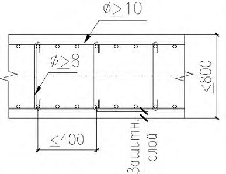
При определении давления необходимо также учитывать эксцентриситеты eq и es , указанные в 6.6.2.6.
Поперечная нагрузка от ударов колес
- 6.6.2.15 Нормативную горизонтальную поперечную нагрузку от ударов подвижного состава независимо от числа путей на мосту и типа нагрузки (ВСП или СК) следует принимать в виде равномерно распределенной нагрузки vg :
При расчетах по предельным состояниям первой группы следует учитывать коэффициент надежности по нагрузке (см. таблицу 6.16).
6.6.2.16 Высоту приложения нагрузки vg
- 1,8 м - для нагрузок ВСП;
2,2 м - для нагрузок СК. s
- расстояние по головкам рельсов - 1,6 м; h o
- высота центра тяжести состава;
Q
- распределенная или сосредоточенная нагрузка;
Fg
- сила, вызванная горизонтальными ударами подвижного состава (распределенная или сосредоточенная);
- Q 1 , Q 1 - дополнительная сила, увеличивающая или уменьшающая давление колеса на рельс (распределенная или сосредоточенная).
Рисунок 6.9 - Схема приложения сил при учете поперечных ударов
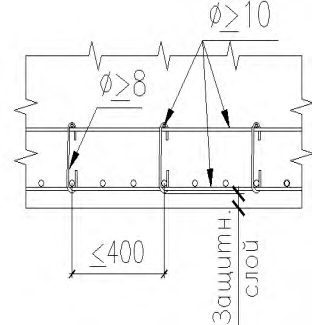
Продольная нагрузка от торможения или силы тяги
6.6.2.17 Интенсивность нормативной горизонтальной продольной нагрузки от торможения (тяги) подвижного состава следует принимать в долях от веса вертикальной подвижной нагрузки, равной для нагрузок от поездов:
- а) высокоскоростных - 25 %;
- б) класса СК - 10 %.
При загружении линий влияния эквивалентными нагрузками СК и ВСП длину участка торможения следует принимать ≤ 300 м. от головки рельса следует принимать равной:
- 6.6.2.18 Высоту приложения горизонтальных продольных нагрузок при расчетах элементов опор, опорных частей, опор и фундаментов следует принимать равной:
- 1,8 м - для нагрузок ВСП;
- 2,2 м - для нагрузок СК.
При расчетах совместной работы пути и элементов сооружения следует считать, что тормозная сила приложена на уровне головки рельса.
- 6.6.2.19 Продольную горизонтальную нагрузку от торможения (тяги) для нагрузки от высокоскоростных поездов следует принимать:
- при расположении на сооружении двух и более путей - в виде торможения с одного пути и силы тяги с одного из соседних путей с учетом коэффициентов s 1 (см. 6.6.5.1);
- при одном пути - торможение (тяга) с этого пути.
Продольную горизонтальную нагрузку от торможения (тяги) для нагрузки СК следует принимать с одного пути независимо от числа путей на мосту.
- 6.6.2.20 При определении усилий в элементах моста от торможения (тяги) следует принимать, что продольные усилия от этих воздействий полностью передаются на неподвижные опорные части.
Горизонтальное усилие на опору с неподвижной опорной части может быть принято равным продольной нагрузке от торможения (тяги) с пролетного строения за вычетом реакций трения подвижных опорных частей этого пролетного строения, вычисленных при минимальных коэффициентах трения μ min (см. 6.6.3.8) 1) , но не менее доли, приходящейся на опору при распределении полного продольного усилия между всеми промежуточными опорами пропорционально их жесткости.
- 6.6.2.21 Продольную нагрузку от торможения (тяги) следует учитывать от подвижного состава, находящегося на пролетных строениях, а также на устоях и подходах за пределами сооружения.
- 6.6.2.22 В каждом расчетном случае вертикальную нагрузку и торможение (тягу) следует рассматривать одновременно и при одном и том же положении поезда на сооружении.
- 6.6.2.23 При определении продольной горизонтальной нагрузки от торможения (тяги) в случаях применения гибких (из отдельных стоек) стальных и железобетонных опор интенсивность временной подвижной вертикальной нагрузки v допускается принимать равной 78,5 кН/пм.
- 6.6.2.24 При расчете устоев продольная нагрузка от торможения подвижного состава, находящегося на призме обрушения, не учитывается 1) .
Нагрузки на служебных проходах
- 6.6.2.25 Нормативную временную вертикальную нагрузку на служебных проходах пролетных строений в сочетании с другими нагрузками следует принимать равной 2 кН/м² .
При расчетах конструкций проходов и при отсутствии других нагрузок нормативную нагрузку на проходах следует принимать равной:
- при езде на балласте - 10 кН/м² ;
- при безбалластном мостовом полотне - 4 кН/м² .
\_\_\_\_\_\_\_\_\_\_
1) За исключением расчетов взаимодействия конструкций пути и элементов сооружения (см. 6.6.3.29).
6.6.3 Прочие нагрузки и воздействия
Температурные и климатические воздействия
6.6.3.1 Нормативное температурное климатическое воздействие следует учитывать:
- при расчете перемещений в мостах всех систем;
- при определении усилий во внешне статически неопределимых системах;
- при расчете элементов сталежелезобетонных пролетных строений;
- при учете реактивных усилий трения в опорных частях;
- при расчетах взаимодействия конструкций пути и элементов сооружений;
- при моделировании профиля пути в динамических расчетах по методикам Б.1 и Б.2.
Температурные и климатические воздействия следует принимать в соответствии с СП 131.13330 с учетом требований настоящего свода правил.
- 6.6.3.2 Среднюю по сечению нормативную температуру элементов или их частей допускается принимать равной:
- для бетонных и железобетонных элементов в холодное время года, а также для металлических конструкций в любое время года - нормативной температуре воздуха;
- для бетонных и железобетонных элементов в теплое время года - нормативной температуре воздуха за вычетом величины, численно равной 0,2δ, но не более 10 °С, где δ - толщина элемента или его части, см.
Температуру элементов со сложным поперечным сечением следует определять как средневзвешенную по температуре отдельных элементов (стенок, полок и др.).
- 6.6.3.3 Нормативную температуру воздуха в холодное время года tn Х следует принимать: при обосновании проектных решений - равной минус 40 °С, в остальных случаях - равной температуре наружного воздуха наиболее холодной пятидневки по СП 131.13330.2018 (таблица 3.1):
- для железобетонных конструкций, включая плиты БМП, - с обеспеченностью 0,92;
- для стальных конструкций - с обеспеченностью 0,98.
- 6.6.3.4 Нормативную температуру воздуха в теплое время года следует принимать:
- при обосновании проектных решений - равной 40 °С;
- в остальных случаях - по формуле
- где t VII - средняя температура самого жаркого месяца по СП 131.13330.2018 (таблица 5.1);
- Т - средняя суточная амплитуда температуры воздуха наиболее теплого месяца по СП 131.13330.2018 (таблица 4.1).
- 6.6.3.5 Температуры замыкания конструкций в холодное и теплое время года, если они в проекте не указаны, следует принимать равными нормативным температурам воздуха, соответственно увеличенным или уменьшенным на 15 °С.
- 6.6.3.6 При расчете перемещений коэффициент линейного расширения следует принимать для стальных и сталежелезобетонных конструкций равным 1,2·10 -5 °C -1 и для железобетонных конструкций - 1,0·10 -5 °C -1 .
Трение в опорных частях
6.6.3.7 Трение в опорных частях (или предельное сопротивление сдвигу) является одной из характеристик расчетной модели сооружения.
При расчетах взаимодействия пути и сооружения допускается не учитывать трение в подвижных опорных частях (при тангенциальных и плоских, каткового, секторного типа и др.).
При учете трения в подвижных опорных частях, возникающего при смещении, реактивное усилие следует учитывать как горизонтальную составляющую, рассматриваемую в сочетании с вертикальной нагрузкой на опорную часть. Реактивное усилие трения Sf вычисляется в долях вертикальной нагрузки и определяется по формуле
где μ - коэффициент трения в опорной части при перемещении;
Fv - вертикальная составляющая нагрузки на опорную часть в рассматриваемом сочетании и с соответствующими коэффициентами.
При расчетах по предельным состояниям первой и второй групп коэффициент трения следует принимать:
где μ n - нормативная величина коэффициента трения в опорных частях при их перемещении, принимаемая равной средней величине из возможных экстремальных значений; μ max , μ min - максимальный и минимальный коэффициенты трения по 6.6.3.8 1) .
Примечание - Коэффициент надежности к усилиям трения учитывается в соответствующих вертикальных нагрузках.
- 6.6.3.8 Величины максимальных μ max и минимальных μ min коэффициентов трения следует принимать соответственно равными:
- а) при катковых, секторных или валковых опорных частях - 0,040 и 0,010;
- б) при качающихся стойках или подвесках - 0,020 и 0 (условно);
- в) при тангенциальных и плоских металлических опорных частях - 0,40 и 0,10;
- г) при подвижных опорных частях с прокладками из фторопласта совместно с полированными листами из нержавеющей стали - по таблице 6.23 или по данным испытаний, или другим документам, регламентирующим применение соответствующих опорных частей на железных дорогах Российской Федерации.
Таблица 6.23 Коэффициент трения в подвижных опорных частях с прокладками из фторопласта и полированными листами из нержавеющей стали
| Среднее давление в опорных частях по фторопласту, МПа | Коэффициент трения при температуре наиболее холодной пятидневки по СП 131.13330 с обеспеченностью 0,92 | Коэффициент трения при температуре наиболее холодной пятидневки по СП 131.13330 с обеспеченностью 0,92 | Коэффициент трения при температуре наиболее холодной пятидневки по СП 131.13330 с обеспеченностью 0,92 | Коэффициент трения при температуре наиболее холодной пятидневки по СП 131.13330 с обеспеченностью 0,92 |
|---|---|---|---|---|
| минус 10 °С и выше | минус 10 °С и выше | минус 50 °С | минус 50 °С | |
| μ max | μ min | μ max | μ min | |
| 9,81 | 0,085 | 0,030 | 0,120 | 0,045 |
| 19,6 | 0,050 | 0,015 | 0,075 | 0,030 |
| 29,4 | 0,035 | 0,010 | 0,060 | 0,020 |
Примечания
1 Коэффициенты трения при промежуточных значениях отрицательных температур и средних давлениях определяются по интерполяции.
2 Для подвижных опорных частей с прокладками из полимеров совместно с полированными листами из нержавеющей стали (или с полированной твердохромированной поверхностью) коэффициенты трения следует принимать по данным предприятий - изготовителей опорных частей.
1) В зависимости от того, увеличивают или уменьшают силы трения общее воздействие на рассчитываемый элемент конструкции в рассматриваемом сочетании с учетом требований 6.6.3.13 и 6.6.3.14.
- 6.6.3.9 Опоры (включая фундаменты) и пролетные строения мостов следует проверять при реакциях трения, возникающих от температурных деформаций, при учете в вертикальной реакции опорной части Fv только от нормативных постоянных нагрузок.
Элементы верхнего строения пути, пролетные строения, опорные части и элементы их прикреплений, а также части опор, примыкающие к опорным частям, должны быть проверены при реакциях трения, возникающих от постоянных нагрузок, а также при проверках на основные и дополнительные сочетания нагрузок. При этом коэффициент динамики принимают равным 1,0.
- 6.6.3.10 Интенсивности сил трения, возникающих в подвижных опорных частях каткового, секторного и валкового типов при числе опорных частей в поперечном направлении более двух, следует умножать на коэффициент условия работы, равный 1,1.
- 6.6.3.11 Следует полагать, что реакции трения подвижной опорной части разрезного пролетного строения или группы подвижных опорных частей неразрезного или температурно-неразрезного пролетного строения передаются на неподвижную опорную часть этого пролетного строения (с обратным знаком).
В случае если на промежуточной опоре расположено два ряда подвижных опорных частей или подвижная и неподвижная опорные части смежных пролетных строений, следует рассматривать варианты сочетаний максимальных и минимальных коэффициентов трения в этих опорных частях.
В случае если справа или слева от рассматриваемой опоры силы трения суммируются с группы подвижных опорных частей (принадлежат одному неразрезному или температурно-неразрезному пролетному строению), разницу сил трения следует определять при максимальном и минимальном коэффициентах по формулам:
где μ max , μ min - максимальные и минимальные значения коэффициентов трения для типа опорных частей в группе; z - число опорных частей в группе (одного типа).
- 6.6.3.12 При расчетах взаимодействия конструкций пути и элементов сооружения в сочетании с торможением в соответствии с 6.6.3.29 коэффициент трения μ min следует принимать равным 0.
- 6.6.3.13 При установке на промежуточной опоре двух рядов подвижных опорных частей смежных пролетных строений, а также неподвижных опорных частей в неразрезном и температурно-неразрезном пролетном строении, продольную реакцию следует принимать не более разницы реакций трения при максимальных и минимальных коэффициентах трения в опорных частях.
- 6.6.3.14 При расчетах по первой группе предельных состояний в случае, если в сочетании присутствует высокоскоростная нагрузка и рассматриваются минимальные значения трения, коэффициент трения μ min следует принимать равным 0.
- 6.6.3.15 При использовании опорных частей, имеющих упругие элементы (резинометаллические и подобные), их работа должна моделироваться элементами конечной жесткости.
Ветровые нагрузки
6.6.3.16 Величину расчетного ветрового давления следует определять по СП 20.13330 и на основании статистической обработки скоростей ветра по данным метеонаблюдений с 10-минутным интервалом осреднения и вероятностью превышения один раз в 100 лет - для расчета конструкций на стадии эксплуатации и один раз в 5 лет - на стадии строительства.
В расчетах следует принимать наибольшую величину ветрового давления. На стадии разработки проектной документации величину ветрового давления допускается принимать по СП 20.13330 для соответствующего ветрового района.
6.6.3.17 Коэффициент надежности к ветровой нагрузке следует принимать равным:
- 1,6 - на стадии эксплуатации:
- 1,0 - на стадии строительства.
- 6.6.3.18 Увеличение давления (скорости) ветра по высоте следует принимать по СП 20.13330 для соответствующего типа местности.
- 6.6.3.19 Пульсационную составляющую ветрового давления следует определять по СП 20.13330.
- 6.6.3.20 Аэродинамические коэффициенты и площади ветровой поверхности допускается определять по СП 20.13330 и СП 35.13330.2011 (приложение Н).
- 6.6.3.21 При проектировании пролетных строений с ездой понизу (и посредине) со сквозной решеткой несущих конструкций следует учитывать взаимодействие аэродинамических эффектов, возникающих при движении поезда внутри конструкции, и природного ветра, проходящего через элементы конструкции. Кроме того, при обосновании безопасности движения (обезгруживание колес поезда) следует учитывать динамические эффекты взаимодействия масс поезда и пролетного строения (методика Б).
Нагрузки от давления льда
6.6.3.22 Нормативную нагрузку от давления льда на опоры мостов следует принимать по СП 35.13330.2011 (приложение П).
Аэродинамические воздействия от высокоскоростных поездов
6.6.3.23 Нагрузки от аэродинамических воздействий на конструкции, расположенные в непосредственной близости от пути, возникающие при проходе высокоскоростных поездов, следует определять по приложению М.
6.6.3.24 Дополнительные нагрузки на высокоскоростной состав от аэродинамических эффектов, возникающих при проходе поезда внутри или вблизи элементов конструкций моста (отраженная аэродинамика), принимают по результатам специальных исследований и расчетных обоснований.
Взаимодействие конструкций пути и элементов сооружения
6.6.3.25 В случае если бесстыковой рельсовый путь ограничивает свободу перемещений пролетных строений моста, то горизонтальные деформации пролетных строений и опор моста, а также рельсового пути, вызванные температурой, усадкой и ползучестью, вызывают дополнительные усилия в элементах сооружения.
6.6.3.26 Если рельсы неразрывны над промежуточной опорой или над устоем (между конструкцией моста и насыпью), то горизонтальные силы, вызванные торможением (тягой), воспринимаются (перераспределяются) между конструкциями пути, пролетными строениями, опорными частями и насыпью.
- 6.6.3.27 Возникающие от воздействий, указанных в 6.6.3.25 и 6.6.3.26, усилия и смещения следует учитывать:
- при обоснованиях надежности опорных частей по первой и второй группам предельных состояний;
- для контроля дополнительных напряжений в рельсах, а также линейных и угловых смещений концов пролетных строений по второй группе предельных состояний как условий безопасности движения.
- 6.6.3.28 Дополнительные напряжения в рельсах на мостовом сооружении (по отношению к напряжениям на земляном полотне), вызванные воздействиями, указанными в 6.6.3.25 и 6.6.3.26, должны быть вычислены по формуле (6.25) и не должны превышать значений таблицы 6.13:
где Δσ R - предельные дополнительные напряжения в рельсах по таблице 6.13, МПа;
Σσ R - дополнительные напряжения от температуры, торможения и изгиба пролетного строения, МПа; σ TR - напряжения от температуры, МПа; σ FR - напряжения от торможения, МПа; σΘ R - напряжения от изгиба пролетного строения (от вертикальной нагрузки), МПа; σ TRn - условные напряжения без учета «эффектов моста», соответствуют напряжениям в рельсах на земляном полотне, МПа и вычисляются по формуле
здесь α R - коэффициент линейного расширения рельсовой стали, °С -1 ;
ER - модуль упругости материала рельса, МПа;
Δ TR - изменение температуры рельса относительно температуры укладки, °С; η T , η F , ηΘ - коэффициенты сочетаний (таблица 6.28); s 1 - коэффициент, учитывающий появление поездов на соседних путях (таблица 6.25);
1 + μ - коэффициент динамики (таблица 6.6).
Дополнительные напряжения в рельсах от торможения σ FR и от изгиба σΘ R должны быть вычислены как максимальные при различных положениях временной нагрузки высокоскоростных поездов и поездов класса СК на мосту.
Напряжения в рельсах должны быть определены по всей длине сооружения и за его пределами - на подходах.
- 6.6.3.29 Расчетную модель для учета усилий и деформаций при взаимодействии конструкций пути и элементов моста следует принимать по приложениям Н и П.
- 6.6.3.30 При выполнении расчетов на температурные воздействия по модели приложения Н необходимо рассматривать два расчетных случая (таблица 6.24):
- нагрев рельсов и пролетных строений в теплое время года при минимальной допустимой температуре закрепления пути в холодное время года;
- охлаждение рельсов и пролетных строений в холодное время года при максимальной допустимой температуре закрепления пути в теплое время года.
Таблица 6.24 Учитываемые в расчете изменения температуры
| Время | При известном районе проектирования | При известном районе проектирования | При обосновании проектных решений | При обосновании проектных решений |
|---|---|---|---|---|
| года | Пролетные строения Δ T P | Рельсы Δ T R | Пролетные строения Δ T P | Рельсы Δ T R |
| Холодное время года | t n Х - t o T | t n Х - t o T - t R- | -65 °С | -70 °С |
| Теплое время года | t n T - t o X | t n T - t o X + t R+ | 65 °С | 80 °С |
Примечание - В настоящей таблице использованы следующие условные обозначения: t n T - нормативная температура воздуха в теплое время года (см. 6.6.3.4); tR+ - нагрев рельсов, вызванный солнечной радиацией и движением поездов; tR -
- охлаждение рельсов при резком понижении температуры; t n Х
- нормативная температура воздуха в холодное время года (см. 6.6.3.3); t o X , t o T - температура укладки пути в холодное и теплое время года.
Дополнительный разогрев рельсов tR+ допускается принимать равным 15 °С.
При резком понижении температуры рельсы могут охлаждаться быстрее пролетного строения. Возможное дополнительное охлаждение рельсов tR - допускается принимать равным минус 5 °С.
Примечание - Если в расчетной модели учитывается температура балласта или плит пути, то влияние солнечной радиации следует учитывать в виде дополнительного нагрева освещенной солнцем поверхности балласта или плиты на 10 °С.
Температуру закрепления рельсовых плетей в проекте следует принимать такой, чтобы обеспечивались устойчивость пути и целостность рельсовых плетей во всем диапазоне изменений расчетных температур при действии вертикальных и горизонтальных компонент временных нагрузок.
В случаях, если температуры укладки пути не могут быть указаны в проекте (например, при обосновании проектных решений), в расчет следует принимать температуры:
- при расчетах на максимальные температуры, считая, что укладка проводилась в холодное время года, to X = tn Х + 15 °С;
- при расчетах на минимальные температуры, считая, что укладка проводилась в теплое время года, to T = tn T - 15 °С.
6.6.4 Особые нагрузки
- 6.6.4.1 Несущие конструкции моста следует рассчитывать на особые сочетания нагрузок:
- сочетания с сейсмическим воздействием;
- случай возможного схода с рельсов подвижного состава;
- случай наезда транспорта снизу на опору или пролетное строение;
- случай столкновения судна с опорой или пролетным строением.
6.6.4.2 Для особых сочетаний нагрузок следует выполнять расчеты только по предельным состояниям первой группы. Коэффициент надежности по ответственности следует принимать равным 1,0.
Сейсмические нагрузки
6.6.4.3 Сейсмические нагрузки следует принимать в соответствии с требованиями СП 14.13330 с учетом требований настоящего свода правил.
6.6.4.4 Коэффициенты надежности по ответственности к сейсмическим нагрузкам не применяют.
6.6.4.5 Исходную сейсмичность района строительства для всех искусственных сооружений рекомендуется принимать на основе карты В комплекта ОСР-2015 (приложение А СП 14.13330.2018), соответствующей повторяемости землетрясения один раз в 1000 лет. Сейсмичность строительной площадки должна быть определена в результате уточнения исходной сейсмичности района строительства и сейсмического микрорайонирования.
6.6.4.6 Расчеты искусственных сооружений на сейсмическое воздействие следует проводить в соответствии с СП 14.13330. При этом коэффициент K 1 принимается равным:
0,37 - при расчетах по первой группе предельных состояний всех элементов сооружений, кроме опорных частей и антисейсмических устройств;
1,0 - при всех расчетах опорных частей и антисейсмических устройств и при определении деформаций и перемещений.
6.6.4.7 При расчете мостов на сейсмическое воздействие следует учитывать присоединенную массу воды, возможность общего и местного размывов грунта, а также возможность разжижения верхних слоев грунта.
Присоединенную массу воды допускается определять в соответствии с указаниями СП 14.13330.
Присоединенную массу грунта в разжиженном состоянии определяют аналогично с заменой плотности воды на плотность грунта.
6.6.4.8 Жесткостные характеристики свайных фундаментов следует принимать в соответствии с СП 24.13330.
6.6.4.9 При расчете мостов на стадии рабочей документации следует использовать метод прямого интегрирования уравнений движения при наличии нелинейных антисейсмических устройств, а также в иных случаях, когда требуется применение нелинейных расчетных моделей.
При наличии нелинейных антисейсмических устройств рекомендуется выполнять дополнительный расчет на сейсмическое воздействие, соответствующее повторяемости землетрясения 1 раз в 100 лет, при этом коэффициент K 1 принимают равным 1,0.
6.6.4.10 При расчетах, включающих проверку устойчивости, и при расчетах методом прямого интегрирования уравнений движения коэффициент K 1 не используется. При проверке прочности сечений допускается умножать на K 1 усилия и напряжения, полученные в результате этих расчетов.
Аварийные нагрузки. Сход поезда с рельсов
6.6.4.11 Сход с рельсов железнодорожного транспорта на мосту должен рассматриваться как аварийная расчетная ситуация.
Рисунок 6.10 -Аварийные расчетные ситуации
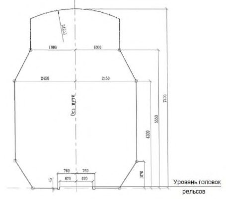
Должны быть рассмотрены две расчетные ситуации, показанные на рисунке 6.10:
- расчетная ситуация I (рисунок 6.10, а ) - сход с рельсов, при котором сошедший с рельсов поезд остается в пределах рельсовых путей и удерживается соседними рельсами (контррельсами или контруголками);
- расчетная ситуация II (рисунок 6.10, а ) - сход с рельсов, при котором поезд балансирует на краю проезжей части, при этом внешний ряд колес располагается в непосредственной близости от борта балластного корыта или другого элемента конструкции, удерживающего поезд на мосту.
Расчетные ситуации I и II следует рассматривать по отдельности.
- 6.6.4.12 Для расчетной ситуации I (см. рисунок 6.10, а ) следует избегать разрушения основных несущих элементов конструкции, однако может быть допущено локальное повреждение элементов верхнего строения пути и балластной призмы или плит мостового полотна. Колесная пара при этом смещается на расстояние а , а равнодействующую вертикальной нагрузки следует принимать в виде нагрузки 1,4×εСК, смещенной на расстояние ( a + eq ), указанное на рисунке, где эксцентриситет eq = 9 см учитывает возможное смещение груза (1/18 ширины колеи). Длина загружения в этом случае не ограничивается.
- 6.6.4.13 В расчетной ситуации II (см. рисунок 6.10, б ) пролетное строение не должно опрокинуться или разрушиться, а поезд должен остаться на мосту. Для определения общей устойчивости и прочности элементов проезжей части пролетное строение загружается равномерно распределенной вертикальной нагрузкой 1,4×εСК, приложенной по линии одного ряда колес. Для расчета элементов, удерживающих поезд на пролетном строении (контруголки, бортовой элемент проезжей части, ограждающие проезжую часть мостового полотна или иные конструкции), принимается горизонтальная равномерно распределенная нагрузка интенсивностью 0,25×εСК, равнодействующая которой находится на уровне центра тяжести состава (2,2 м от головки рельса). В расчетной ситуации II максимальную общую длину нагрузки следует принимать равной:
- для проверки прочности основных и удерживающих элементов -длине загружаемого участка линии влияния для проверяемого элемента, но не более 20 м;
- для проверки устойчивости конструкции (опрокидывание) -полной длине пролетного строения.
Элементы (кроме предназначенных для удерживания поезда), замена которых возможна в ходе ремонта, на нагрузку от схода подвижного состава допускается не рассчитывать, если их выход из строя не приведет к прогрессирующему разрушению конструкции.
- 6.6.4.14 В расчетных ситуациях I и II нагрузкой εСК загружается один путь; горизонтальные компоненты временной нагрузки (центробежная сила, поперечные удары, торможение) не учитываются.
Коэффициенты динамики нагрузки εСК, а также коэффициенты надежности нагрузки εСК и постоянных нагрузок принимают равными 1,0.
Аварийные нагрузки. Наезд транспорта снизу
6.6.4.15 В случае если сооружение пересекает автомобильную дорогу, следует учитывать силы, которые могут возникнуть при столкновении транспортных средств, находящихся под сооружением, с опорами или пролетными строениями моста.
В случае, когда существует вероятность наезда транспортных средств на опору или удара снизу по пролетному строению (при расположении опоры моста в разделительной полосе пересекаемой автомобильной дороги или на расстоянии менее 5 м от края проезжей части и в случае отсутствия жестких ограждений), необходимо проводить расчеты, исключающие потерю работоспособности опоры и (или) падения пролетного строения моста после удара транспортных средств.
Нагрузку от наезда транспортных средств на опору следует принимать в виде одной из горизонтальных сил интенсивностью:
- вдоль движения транспортных средств под мостом - 1000 кН (100 тс);
- поперек движения - 500 кН (50 тс).
Высоту приложения силы (от верха покрытия проезжей части) следует принимать равной 1,25 м.
В случае применения мероприятий, снижающих интенсивность воздействия наезда (гибкие ограждения, островок безопасности и т. д.), возможно снижение интенсивностей нагрузок при соответствующем обосновании.
Для снижения вероятности повреждения пролетных строений путепроводов от возможного удара негабаритных транспортных средств снизу следует предусматривать установки габаритных ворот. Кроме того, необходимо учитывать возможность удара негабаритных транспортных средств снизу на пролетное строение. Величину нагрузки в этом случае следует назначать по результатам соответствующего обоснования.
Аварийные нагрузки. Столкновение судна с опорой или пролетным строением
6.6.4.16 Нормативную нагрузку от навала судов на опоры мостов следует принимать в соответствии с указаниями СП 35.13330.2011 (пункт 6.26 и таблица 6.11).
6.6.4.17 В сложных случаях допускается определять нагрузку от навала судов на опоры моста как максимальное значение реакции опоры, передаваемой на судно. Величину этой реакции, как правило, следует определять из решения задачи динамического взаимодействия судна и опоры. При определении реакции следует учитывать:
- уровни воды и условия течения;
- тип и водоизмещение судна, а также его характеристики;
- косину пересечения судового хода мостовым переходом;
- тип конструкции опор и характеристику их энергопоглощения.
Параметры судна (тоннаж, осадка, скорость движения в направлении вдоль и поперек оси моста) принимают по данным пользователей водного пути.
6.6.4.18 Столкновение судна с пролетным строением следует рассматривать как случай приложения статической горизонтальной нагрузки к середине нижнего пояса пролетного строения. Величину нагрузки на пролетное строение следует принимать равной 50 % максимальной продольной нагрузки на одну из опор соответствующего пролета. Нагрузки на опоры принимают по СП 35.13330.2011 (таблица 6.11) для случая навала судна поперек оси моста с верховой стороны.
6.6.4.19 Если разница отметок низа пролетного строения и расчетного судоходного уровня превышает высоту расчетного судоходного габарита на 10 % и более, то случай столкновения судна с пролетным строением не рассматривается.
6.6.5 Сочетания нагрузок
6.6.5.1 Коэффициенты сочетаний, учитывающие снижение интенсивности нагрузки при одновременном загружении двух путей железной дороги нагрузками от ВСП и нагрузками СК, приведены в таблице 6.25.
Таблица 6.25 Коэффициенты s 1
| Число путей | Нагрузка от ВСП | Нагрузка от ВСП | Нагрузка от ВСП | Нагрузка СК | Нагрузка СК | Нагрузка СК | Нагрузка СК | Нагрузка СК | Нагрузка СК | Нагрузка СК | Нагрузка СК | Нагрузка СК | Нагрузка СК | Нагрузка СК | Нагрузка СК | Нагрузка СК | Нагрузка СК |
|---|---|---|---|---|---|---|---|---|---|---|---|---|---|---|---|---|---|
| Число путей | Один из путей | Второй путь | Проходы 1) 2 кН/м² | Один из путей | Второй путь | ||||||||||||
| Первая группа предельных состояний. Прочность. Устойчивость | Первая группа предельных состояний. Прочность. Устойчивость | Первая группа предельных состояний. Прочность. Устойчивость | Первая группа предельных состояний. Прочность. Устойчивость | Первая группа предельных состояний. Прочность. Устойчивость | Первая группа предельных состояний. Прочность. Устойчивость | Первая группа предельных состояний. Прочность. Устойчивость | Первая группа предельных состояний. Прочность. Устойчивость | Первая группа предельных состояний. Прочность. Устойчивость | Первая группа предельных состояний. Прочность. Устойчивость | Первая группа предельных состояний. Прочность. Устойчивость | Первая группа предельных состояний. Прочность. Устойчивость | Первая группа предельных состояний. Прочность. Устойчивость | Первая группа предельных состояний. Прочность. Устойчивость | Первая группа предельных состояний. Прочность. Устойчивость | Первая группа предельных состояний. Прочность. Устойчивость | Первая группа предельных состояний. Прочность. Устойчивость | Первая группа предельных состояний. Прочность. Устойчивость |
| 2 | 1,0 | 0,7 2), 3) | 1,0 | ||||||||||||||
| 2 | 0,7 2), 3) | 1,0 | 1,0 | ||||||||||||||
| 1 | 1,0 - 1,0 - 1,0 1,0 | 1,0 - 1,0 - 1,0 1,0 | 1,0 - 1,0 - 1,0 1,0 | 1,0 - 1,0 - 1,0 1,0 | 1,0 - 1,0 - 1,0 1,0 | 1,0 - 1,0 - 1,0 1,0 | 1,0 - 1,0 - 1,0 1,0 | 1,0 - 1,0 - 1,0 1,0 | 1,0 - 1,0 - 1,0 1,0 | 1,0 - 1,0 - 1,0 1,0 | 1,0 - 1,0 - 1,0 1,0 | 1,0 - 1,0 - 1,0 1,0 | 1,0 - 1,0 - 1,0 1,0 | 1,0 - 1,0 - 1,0 1,0 | 1,0 - 1,0 - 1,0 1,0 | 1,0 - 1,0 - 1,0 1,0 | 1,0 - 1,0 - 1,0 1,0 |
| 1 | 1,0 | - | - | ||||||||||||||
| 1 | - | 1,0 | - | ||||||||||||||
| Вторая группа предельных состояний | Вторая группа предельных состояний | Вторая группа предельных состояний | Вторая группа предельных состояний | Вторая группа предельных состояний | Вторая группа предельных состояний | Вторая группа предельных состояний | Вторая группа предельных состояний | Вторая группа предельных состояний | Вторая группа предельных состояний | Вторая группа предельных состояний | Вторая группа предельных состояний | Вторая группа предельных состояний | Вторая группа предельных состояний | Вторая группа предельных состояний | Вторая группа предельных состояний | Вторая группа предельных состояний | Вторая группа предельных состояний |
| 1 | 1,0 | 0,7 2), 3) | - | ||||||||||||||
| 1 | 0,7 2), 3) | 1,0 | - | ||||||||||||||
| 1,0 - - | 1,0 - - | 1,0 - - | 1,0 - - | 1,0 - - | 1,0 - - | 1,0 - - | 1,0 - - | 1,0 - - | 1,0 - - | 1,0 - - | 1,0 - - | 1,0 - - | 1,0 - - | 1,0 - - | 1,0 - - | 1,0 - - | |
| - 1,0 - | - 1,0 - | - 1,0 - | - 1,0 - | - 1,0 - | - 1,0 - | - 1,0 - | - 1,0 - | - 1,0 - | - 1,0 - | - 1,0 - | - 1,0 - | - 1,0 - | - 1,0 - | - 1,0 - | - 1,0 - | - 1,0 - |
- 6.6.5.2 Коэффициенты сочетаний η компонент временных нагрузок при расчетах по первой и второй группам предельных состояний и случаям расчета даны в таблицах 6.266.29.
Кроме указанных сочетаний для поиска экстремальных значений контролируемых факторов необходимо рассматривать следующие ситуации 1) :
- положительные или отрицательные температуры;
- различные положения поездов на сооружении;
- различные направления торможения;
- расположение поездов на одном или двух путях.
1 )1) В некоторых случаях необходимо выполнять расчеты, используя разные модели с различной детализацией, для поиска самых опасных ситуаций.
Таблица 6.26 Коэффициенты ƞ. Первая группа предельных состояний. Прочность. Устойчивость
| Нагрузка от ВСП | Нагрузка от ВСП | Нагрузка от ВСП | Нагрузка от ВСП | Нагрузка СК | Нагрузка СК | Нагрузка СК | Нагрузка СК | Природные воздействия | Природные воздействия | Природные воздействия | Природные воздействия | Особые и техногенные | Особые и техногенные | Особые и техногенные | Особые и техногенные |
|---|---|---|---|---|---|---|---|---|---|---|---|---|---|---|---|
| Вертикальная | Центробежная сила | Поперечные удары | Торможение | Вертикальная | Центробежная сила | Поперечные удары | Торможение | Ветер | Лед | Температура | Морозное пучение | Сейсмика | Навал судов и наезд снизу | Сход поезда с рельсов | Образование карстового провала |
| 7 и 8 1) | 9 | 10 | 11 | 7 и 8 | 9 | 10 | 11 | 12 | 13 | 15 | 16 | 18 | 14 | - | - |
| Основные сочетания | Основные сочетания | Основные сочетания | Основные сочетания | Основные сочетания | Основные сочетания | Основные сочетания | Основные сочетания | Основные сочетания | Основные сочетания | Основные сочетания | Основные сочетания | ||||
| ВСП, два пути 4) γ n = 1,1 γ f > 1,0 1 + μ + μ > 1,0 2) | ВСП, два пути 4) γ n = 1,1 γ f > 1,0 1 + μ + μ > 1,0 2) | ВСП, два пути 4) γ n = 1,1 γ f > 1,0 1 + μ + μ > 1,0 2) | ВСП, два пути 4) γ n = 1,1 γ f > 1,0 1 + μ + μ > 1,0 2) | С8, один путь γ n = 1,1 γ f > 1,0 1+ μ > 1,0 2) | С8, один путь γ n = 1,1 γ f > 1,0 1+ μ > 1,0 2) | С8, один путь γ n = 1,1 γ f > 1,0 1+ μ > 1,0 2) | С8, один путь γ n = 1,1 γ f > 1,0 1+ μ > 1,0 2) | Не учитываются | Не учитываются | Не учитываются | Не учитываются | Не учитываются | Не учитываются | Не учитываются | Не учитываются |
| 1 1,0 | 2 1,0 | - | - | - | - | - | - | - | - | - | - | - | - | - | - |
| 1,0 | - | 1,0 | - | - | - | - | - | - | - | - | - | - | - | - | - |
| - | - | - | - | 1,0 | 1,0 | - | - | - | - | - | - | - | - | - | - |
| - | - | - | - | 1,0 | - | 1,0 | - | - | - | - | - | - | - | - | - |
| Дополнительные сочетания | Дополнительные сочетания | Дополнительные сочетания | Дополнительные сочетания | Дополнительные сочетания | Дополнительные сочетания | Дополнительные сочетания | Дополнительные сочетания | Дополнительные сочетания | Дополнительные сочетания | Дополнительные сочетания | Дополнительные сочетания | Дополнительные сочетания | Дополнительные сочетания | Дополнительные сочетания | Дополнительные сочетания |
| ВСП, два пути γ n = 1,0 γ f > 1,0 1+μ + μ - табл. 6.10 2), 3) | ВСП, два пути γ n = 1,0 γ f > 1,0 1+μ + μ - табл. 6.10 2), 3) | ВСП, два пути γ n = 1,0 γ f > 1,0 1+μ + μ - табл. 6.10 2), 3) | ВСП, два пути γ n = 1,0 γ f > 1,0 1+μ + μ - табл. 6.10 2), 3) | С8, один путь γ n = 1,0 γ f > 1,0 | С8, один путь γ n = 1,0 γ f > 1,0 | С8, один путь γ n = 1,0 γ f > 1,0 | С8, один путь γ n = 1,0 γ f > 1,0 | γ n = 1,0 γ f > 1,0 или γ f < 1,0 | γ n = 1,0 γ f > 1,0 или γ f < 1,0 | γ n = 1,0 γ f > 1,0 или γ f < 1,0 | γ n = 1,0 γ f > 1,0 или γ f < 1,0 | Не учитываются | Не учитываются | Не учитываются | Не учитываются |
| 0,8 | - | 0,7 | - | - | - | - | - | - | 0,7 | 0,7 | - | - | - | - | - |
| 0,8 | 0,8 | - | - | - | - | - | - | 0,5 | 0,7 | 0,7 | - | - | - | - | - |
| 0,7 | - | 0,8 | - | - | - | - | - | - | 0,7 | 0,7 | - | - | - | - | - |
| 0,8 | 0,8 | - | 0,8 | - | - | - | - | 0,5 | - | 0,7 | - | - | - | - | - |
| 0,7 | 0,7 | - | - | - | - | - | - | 0,5 | 0,8 | 0,7 | - | - | - | - | - |
| 0,7 | - | 0,7 | - | - | - | - | - | - | 0,8 | 0,7 | - | - | - | - | - |
| 0,7 | 0,7 | - | 0,7 | - | - | - | - | 0,5 | - | 0,8 | - | - | - | - | - |
| 0,7 | 0,7 | - | - | - | - | - | - | 0,5 | 0,7 | 0,8 | - | - | - | - | - |
| 0,7 | - | 0,7 | - | - | - | - | - | - | 0,7 | 0,8 | - | - | - | - | - |
| - | - | - | - | 0,8 | - | 0,7 | - | - | 0,7 | 0,7 | - | - | - | - | - |
| - | - | - | - | 0,8 | 0,8 | - | - | 0,5 | 0,7 | 0,7 | - | - | - | - | - |
| - | - | - | - | 0,7 | - | 0,8 | - | - | 0,7 | 0,7 | - | - | - | - | - |
| - | - | - - | - - | 0,8 0,7 | 0,8 | - | 0,8 - | 0,5 | - | 0,7 | - | - | - | - - | - - |
| - | - - | - | - | 0,7 | 0,7 | - | - | 0,5 | 0,8 | 0,7 0,7 | - | - - | - | - | |
| - | - | - | 0,7 | - | 0,8 | - - | - | - | - | ||||||
| - | - | - | 0,7 | 0,7 | 0,5 | - | 0,8 | - | |||||||
| - | 0,7 | - | 0,7 | - | - | ||||||||||
| - | - | - | 0,7 | - | - | 0,5 | 0,7 | 0,8 | - | - | - | - | - | ||
| - | - | - | - | 0,7 | - | 0,7 | - | - | 0,7 | 0,8 | - | - | - | - | - |
| - - | - - | - - | - - | - - | - - | - - | - - | 1,0 0,8 | - 0,7 | - 0,7 | - - | - - | - - | - - | - - |
| - | - | - | - | - | - | - | - | 0,8 | - | 0,7 | 0,7 | - | - | - | - |
| - | - | - | - | - | - | - | - | - | 1,0 | - | - | - | - | - | - |
| - - | - - | - - | - - | - - | - | - | - - | 0,5 - | 0,8 | 0,7 | - - | - - | - | - - | - - |
| - | - | - 0,7 | 1,0 0,8 | - | - | - | |||||||||
| - | - | - | - | - | - | - | - | 0,7 | - | - | - | ||||
| - | - | - | - | - | - | - | 0,7 | - | 0,8 | 0,7 | - | - | - | - | |
| - | - | - - | - | - | - | - | - | - | - | - | 1,0 | - | - | - | - |
СП .1325800.2019
Окончание таблицы 6.26
| Нагрузка от ВСП | Нагрузка от ВСП | Нагрузка от ВСП | Нагрузка от ВСП | Нагрузка СК | Нагрузка СК | Нагрузка СК | Нагрузка СК | Природные воздействия | Природные воздействия | Природные воздействия | Природные воздействия | Особые и техногенные | Особые и техногенные | Особые и техногенные | Особые и техногенные |
|---|---|---|---|---|---|---|---|---|---|---|---|---|---|---|---|
| Вертикальная | Центробежная сила | Поперечные удары | Торможение | Вертикальная | Центробежная сила | Поперечные удары | Торможение | Ветер | Лед | Температура | Морозное пучение | Сейсмика | Навал судов и наезд снизу | Сход поезда с рельсов | Образование карстового провала |
| 7 и 8 1 | 9 | 10 | 11 | 7 и 8 | 9 | 10 | 11 | 12 | 13 | 15 | 16 | 18 | 14 | - | - |
| Особые сочетания | Особые сочетания | Особые сочетания | Особые сочетания | Особые сочетания | Особые сочетания | Особые сочетания | Особые сочетания | ||||||||
| ВСП, один путь γ n = 1,0 γ f = 1,0 1 + μ 1 + μ 2 = 1,0 | ВСП, один путь γ n = 1,0 γ f = 1,0 1 + μ 1 + μ 2 = 1,0 | ВСП, один путь γ n = 1,0 γ f = 1,0 1 + μ 1 + μ 2 = 1,0 | ВСП, один путь γ n = 1,0 γ f = 1,0 1 + μ 1 + μ 2 = 1,0 | С8, один путь γ n = 1,0 γ f = 1,0 1 + μ = 1,0 | С8, один путь γ n = 1,0 γ f = 1,0 1 + μ = 1,0 | С8, один путь γ n = 1,0 γ f = 1,0 1 + μ = 1,0 | С8, один путь γ n = 1,0 γ f = 1,0 1 + μ = 1,0 | Не учитываются | Не учитываются | Не учитываются | Не учитываются | γ n = 1,0 γ f = 1,0 | γ n = 1,0 γ f = 1,0 | γ n = 1,0 γ f = 1,0 | γ n = 1,0 γ f = 1,0 |
| - | - | - | - | - | - | - | - | - | - | - | - | 1,0 | - | - | - |
| 0,8 | 0,7 | - | 0,7 | - | - | - | - | - | - | - | - | 0,8 | - | - | - |
| - | - | - | - | 0,7 | 0,7 | - | 0,7 | - | - | - | - | 0,8 | - | - | - |
| - | - | - | - | - | - | - | - | - | - | - | - | - | 1,0 | - | - |
| 0,7 | 0,7 | - | - | - | - | - | - | - | - | - | - | - | 0,8 | - | - |
| 0,7 | - | 0,7 | - | - | - | - | - | - | - | - | - | - | 0,8 | - | - |
| 0,8 | - | 0,7 | - | - | - | - | - | - | - | - | - | - | 0,7 | - | - |
| 0,7 | - | 0,8 | - | - | - | - | - | - | - | - | - | - | 0,7 | - | - |
| - | - | - | - | - | - | - | - | - | - | - | - | - | - | 1,0 | - |
| - | - | - | - | - | - | - | - | - | - | - | - | - | - | - | 1,0 |
| 0,8 | 0,7 | - | 0,7 | - | - | - | - | - | - | - | - | - | - | - | 0,8 |
| - | - | - | - | 0,7 | 0,7 | - | 0,7 | - | - | - | - | - | - | - | 0,8 |
Таблица 6.27 Коэффициенты ƞ . Первая группа предельных состояний. Выносливость
| Нагрузка от ВСП | Нагрузка от ВСП | Нагрузка от ВСП | Нагрузка от ВСП | Природные воздействия | Природные воздействия | Природные воздействия | Природные воздействия | |||||||
|---|---|---|---|---|---|---|---|---|---|---|---|---|---|---|
| Вертикальная | Центробежная сила | Поперечные удары | Торможение | Вертикальная | Центробежная сила | Поперечные удары | Торможение | Ветер | Лед | Температура | Морозное пучение | Сейсмика | Навал судов и наезд снизу | Сход поезда с рельсов |
| 7 и 8 1) | 9 | 10 | 11 | 7 и 8 | 9 | 10 | 11 | 12 | 13 | 15 | 16 | 18 | 14 | - |
| Основные сочетания | Основные сочетания | Основные сочетания | Основные сочетания | Основные сочетания | Основные сочетания | Основные сочетания | Основные сочетания | Основные сочетания | Основные сочетания | Основные сочетания | Основные сочетания | Основные сочетания | Основные сочетания | Основные сочетания |
| ВСП, один путь γ n = 1,0 γ f = 1,0 | ВСП, один путь γ n = 1,0 γ f = 1,0 | ВСП, один путь γ n = 1,0 γ f = 1,0 | ВСП, один путь γ n = 1,0 γ f = 1,0 | Не учитываются | Не учитываются | Не учитываются | Не учитываются | Не учитываются | Не учитываются | Не учитываются | Не учитываются | Не учитываются | Не учитываются | Не учитываются |
| 1,0 | 1,0 | - | - | - | - | - | - | - | - | - | - | - | - | - |
1) В данной строке указаны номера нагрузок по таблице 6.1 СП 35.13330.2011.
2) Коэффициенты динамики учитываются только для вертикальных нагрузок по приложению Ж; для горизонтальных нагрузок, а также для горизонтального и вертикального давлений грунта от временной нагрузки - 1 + μ1 + μ2 = 1,0 и 1 + μ = 1,0 (см. таблицу 6.10).
Таблица 6.28 Коэффициенты ƞ . Вторая группа предельных состояний
| Нагрузка от ВСП | Нагрузка от ВСП | Нагрузка от ВСП | Нагрузка от ВСП | Нагрузка СК | Нагрузка СК | Нагрузка СК | Нагрузка СК | Природные воздействия | Природные воздействия | Природные воздействия | Природные воздействия | Особые и техногенные | Особые и техногенные | Особые и техногенные |
|---|---|---|---|---|---|---|---|---|---|---|---|---|---|---|
| Вертикальная | Центробежная сила | Поперечные удары | Торможение | Вертикальная | Центробежная сила | Поперечные удары | Торможение | Ветер | Лед | Температура | Морозное пучение | Сейсмика | Навал судов и наезд снизу | Сход поезда с рельсов |
| 7 и 8 1) | 9 | 10 | 11 | 7 и 8 | 9 | 10 | 11 | 12 | 13 | 15 | 16 | 18 | 14 | - |
| ВСП - таблица 6.6 γ n = 1,0 | ВСП - таблица 6.6 γ n = 1,0 | ВСП - таблица 6.6 γ n = 1,0 | ВСП - таблица 6.6 γ n = 1,0 | С8, один путь γ n = 1,0 | С8, один путь γ n = 1,0 | С8, один путь γ n = 1,0 | С8, один путь γ n = 1,0 | γ n = 1,0 | γ n = 1,0 | γ n = 1,0 | γ n = 1,0 | Не учитываются | Не учитываются | Не учитываются |
| γ f = 1,0 1 + μ - таблица 6.6 2) | γ f = 1,0 1 + μ - таблица 6.6 2) | γ f = 1,0 1 + μ - таблица 6.6 2) | γ f = 1,0 1 + μ - таблица 6.6 2) | γ f = 1,0 | γ f = 1,0 | γ f = 1,0 | γ f = 1,0 | |||||||
| 1 + μ - таблица 6.6 Прогибы (вертикальные и горизонтальные), | 1 + μ - таблица 6.6 Прогибы (вертикальные и горизонтальные), | 1 + μ - таблица 6.6 Прогибы (вертикальные и горизонтальные), | 1 + μ - таблица 6.6 Прогибы (вертикальные и горизонтальные), | 1 + μ - таблица 6.6 Прогибы (вертикальные и горизонтальные), | 1 + μ - таблица 6.6 Прогибы (вертикальные и горизонтальные), | 1 + μ - таблица 6.6 Прогибы (вертикальные и горизонтальные), | 1 + μ - таблица 6.6 Прогибы (вертикальные и горизонтальные), | скручивание пути, ускорения на уровне пути | скручивание пути, ускорения на уровне пути | скручивание пути, ускорения на уровне пути | скручивание пути, ускорения на уровне пути | скручивание пути, ускорения на уровне пути | скручивание пути, ускорения на уровне пути | скручивание пути, ускорения на уровне пути |
| 1,0 | 1,0 | - | - | - | - | - | - | - | - | - | - | - | - | - |
| - | - | - | - | 1,0 | 1,0 | - | - | - | - | - | - | - | - | - |
| Переломы профиля и смещения консолей пролетных строений от вертикальных нагрузок (связанные с поворотом) | Переломы профиля и смещения консолей пролетных строений от вертикальных нагрузок (связанные с поворотом) | Переломы профиля и смещения консолей пролетных строений от вертикальных нагрузок (связанные с поворотом) | Переломы профиля и смещения консолей пролетных строений от вертикальных нагрузок (связанные с поворотом) | Переломы профиля и смещения консолей пролетных строений от вертикальных нагрузок (связанные с поворотом) | Переломы профиля и смещения консолей пролетных строений от вертикальных нагрузок (связанные с поворотом) | Переломы профиля и смещения консолей пролетных строений от вертикальных нагрузок (связанные с поворотом) | Переломы профиля и смещения консолей пролетных строений от вертикальных нагрузок (связанные с поворотом) | Переломы профиля и смещения консолей пролетных строений от вертикальных нагрузок (связанные с поворотом) | Переломы профиля и смещения консолей пролетных строений от вертикальных нагрузок (связанные с поворотом) | Переломы профиля и смещения консолей пролетных строений от вертикальных нагрузок (связанные с поворотом) | Переломы профиля и смещения консолей пролетных строений от вертикальных нагрузок (связанные с поворотом) | Переломы профиля и смещения консолей пролетных строений от вертикальных нагрузок (связанные с поворотом) | Переломы профиля и смещения консолей пролетных строений от вертикальных нагрузок (связанные с поворотом) | Переломы профиля и смещения консолей пролетных строений от вертикальных нагрузок (связанные с поворотом) |
| 1,0 | - | - | - | - | - | - | - | - | - | - | - | - | - | - |
| - | - | - | - | 1,0 | - | - | - | - | - | - | - | - | - | - |
| Взаимные линейные смещения пролетных строений, а также пути и пролетных строений от торможения (на уровне нейтральной оси) 4) | Взаимные линейные смещения пролетных строений, а также пути и пролетных строений от торможения (на уровне нейтральной оси) 4) | Взаимные линейные смещения пролетных строений, а также пути и пролетных строений от торможения (на уровне нейтральной оси) 4) | Взаимные линейные смещения пролетных строений, а также пути и пролетных строений от торможения (на уровне нейтральной оси) 4) | Взаимные линейные смещения пролетных строений, а также пути и пролетных строений от торможения (на уровне нейтральной оси) 4) | Взаимные линейные смещения пролетных строений, а также пути и пролетных строений от торможения (на уровне нейтральной оси) 4) | Взаимные линейные смещения пролетных строений, а также пути и пролетных строений от торможения (на уровне нейтральной оси) 4) | Взаимные линейные смещения пролетных строений, а также пути и пролетных строений от торможения (на уровне нейтральной оси) 4) | Взаимные линейные смещения пролетных строений, а также пути и пролетных строений от торможения (на уровне нейтральной оси) 4) | Взаимные линейные смещения пролетных строений, а также пути и пролетных строений от торможения (на уровне нейтральной оси) 4) | Взаимные линейные смещения пролетных строений, а также пути и пролетных строений от торможения (на уровне нейтральной оси) 4) | Взаимные линейные смещения пролетных строений, а также пути и пролетных строений от торможения (на уровне нейтральной оси) 4) | Взаимные линейные смещения пролетных строений, а также пути и пролетных строений от торможения (на уровне нейтральной оси) 4) | Взаимные линейные смещения пролетных строений, а также пути и пролетных строений от торможения (на уровне нейтральной оси) 4) | Взаимные линейные смещения пролетных строений, а также пути и пролетных строений от торможения (на уровне нейтральной оси) 4) |
| - | - | - | 1,0 | - | - | - | - | - | - | - | - | - | - | - |
| Дополнительные напряжения в рельсах от вертикальных нагрузок, торможения и температуры | Дополнительные напряжения в рельсах от вертикальных нагрузок, торможения и температуры | Дополнительные напряжения в рельсах от вертикальных нагрузок, торможения и температуры | Дополнительные напряжения в рельсах от вертикальных нагрузок, торможения и температуры | Дополнительные напряжения в рельсах от вертикальных нагрузок, торможения и температуры | Дополнительные напряжения в рельсах от вертикальных нагрузок, торможения и температуры | Дополнительные напряжения в рельсах от вертикальных нагрузок, торможения и температуры | Дополнительные напряжения в рельсах от вертикальных нагрузок, торможения и температуры | Дополнительные напряжения в рельсах от вертикальных нагрузок, торможения и температуры | Дополнительные напряжения в рельсах от вертикальных нагрузок, торможения и температуры | Дополнительные напряжения в рельсах от вертикальных нагрузок, торможения и температуры | Дополнительные напряжения в рельсах от вертикальных нагрузок, торможения и температуры | Дополнительные напряжения в рельсах от вертикальных нагрузок, торможения и температуры | Дополнительные напряжения в рельсах от вертикальных нагрузок, торможения и температуры | Дополнительные напряжения в рельсах от вертикальных нагрузок, торможения и температуры |
| 0,8 | - | - | 0,8 | - | - | - | - | - | - | 0,7 | - | - | - | - |
| 0,7 | - | - | 0,7 | - | - | - | - | - | - | 0,8 | - | - | - | - |
| - | - | - | - | 0,8 | - | - | 0,8 | - | - | 0,7 | - | - | - | - |
| - | - | - | - | 0,7 | - | - | 0,7 | - | - | 0,8 | - | - | - | - |
| - | - | - | - | - | - | - | - | - | - | 1,0 | - | - | - | - |
| 1,0 | 1,0 | - | - | - | - | - | - | - | - | - | - | - | - | - |
| - | - | - | - | 1,0 | 1,0 | - | - | - | - | - | - | - | - | - |
| 0,8 | 0,8 | - | - | - | - | - | - | - | - | 0,7 | - | - | - | - |
| 0,7 | 0,7 | - | - | - | - | - | - | - | - | 0,7 | - | - | - | - |
| 0,7 | 0,7 - | - - | - - | - | - | - | - | - | - | - | - | - | ||
| - | - | 0,8 | - | - | ||||||||||
| - | 0,8 | 0,8 | - | - | 0,7 | - | - | - | ||||||
| - | - | - | - | 0,7 | 0,7 | - | - | - | - | 0,7 | - | - | - | - |
| - | - | - | - | - | - | - | - | - | - | 1,0 | - | - | - | - |
| Раскрытие трещин в железобетоне | Раскрытие трещин в железобетоне | Раскрытие трещин в железобетоне | Раскрытие трещин в железобетоне | Раскрытие трещин в железобетоне | Раскрытие трещин в железобетоне | Раскрытие трещин в железобетоне | Раскрытие трещин в железобетоне | Раскрытие трещин в железобетоне | Раскрытие трещин в железобетоне | Раскрытие трещин в железобетоне | Раскрытие трещин в железобетоне | Раскрытие трещин в железобетоне | Раскрытие трещин в железобетоне | Раскрытие трещин в железобетоне |
| 0,8 | - | 0,7 | - | - | - | - | - | - | - | 0,7 | - | - | - | - |
| 0,8 | 0,8 | - | - | - | - | - | - | - | - | 0,7 | - | - | - | - |
| 0,7 | - | 0,8 | - | - | - | - | - | - | - | 0,7 | - | - | - | - |
| 0,8 | 0,8 | - | 0,8 | - | - | - | - | - | - | 0,7 | - | - | - | - |
|---|---|---|---|---|---|---|---|---|---|---|---|---|---|---|
| 0,7 | 0,7 | - | - | - | - | - | - | - | - | 0,7 | - | - | - | - |
| 0,7 | - | 0,7 | - | - | - | - | - | - | - | 0,7 | - | - | - | - |
| 0,7 | 0,7 | - | 0,7 | - | - | - | - | - | - | 0,8 | - | - | - | - |
| 0,7 | 0,7 | - | - | - | - | - | - | - | - | 0,8 | - | - | - | - |
| 0,7 | - | 0,7 | - | - | - | - | - | - | - | 0,8 | - | - | - | - |
| - | - | - | - | 0,8 | - | 0,7 | - | - | - | 0,7 | - | - | - | - |
| - | - | - | - | 0,8 | 0,8 | - | - | - | - | 0,7 | - | - | - | - |
| - | - | - | - | 0,7 | - | 0,8 | - | - | - | 0,7 | - | - | - | - |
| - | - | - | - | 0,8 | 0,8 | - | 0,8 | - | - | 0,7 | - | - | - | - |
| - | - | - | - | 0,7 | 0,7 | - | - | - | - | 0,7 | - | - | - | - |
| - | - | - | - | 0,7 | - | 0,7 | - | - | - | 0,7 | - | - | - | - |
| - | - | - | - | 0,7 | 0,7 | - | 0,7 | - | - | 0,8 | - | - | - | - |
| - | - | - | - | 0,7 | 0,7 | - | - | - | - | 0,8 | - | - | - | - |
| - | - | - | - | 0,7 | - | 0,7 | - | - | - | 0,8 | - | - | - | - |
| - | - | - | - | - | - | - | - | - | - | 1,0 | - | - | - | - |
| Смещение верха опор и углы перелома пути в плане | Смещение верха опор и углы перелома пути в плане | Смещение верха опор и углы перелома пути в плане | Смещение верха опор и углы перелома пути в плане | Смещение верха опор и углы перелома пути в плане | Смещение верха опор и углы перелома пути в плане | Смещение верха опор и углы перелома пути в плане | Смещение верха опор и углы перелома пути в плане | Смещение верха опор и углы перелома пути в плане | Смещение верха опор и углы перелома пути в плане | Смещение верха опор и углы перелома пути в плане | Смещение верха опор и углы перелома пути в плане | Смещение верха опор и углы перелома пути в плане | Смещение верха опор и углы перелома пути в плане | Смещение верха опор и углы перелома пути в плане |
| 0,8 | - | 0,7 | - | - | - | - | - | - | 0,7 | 0,7 | - | - | - | - |
| 0,8 | 0,8 | - | - | - | - | - | - | 0,5 | 0,7 | 0,7 | - | - | - | - |
| 0,7 | - | 0,8 | - | - | - | - | - | - | 0,7 | 0,7 | - | - | - | - |
| 0,7 | 0,7 | - | - | - | - | - | - | 0,5 | 0,8 | 0,7 | - | - | - | - |
| 0,7 | - | 0,7 | - | - | - | - | - | - | 0,8 | 0,7 | - | - | - | - |
| 0,7 | 0,7 | - | - | - | - | - | - | 0,5 | 0,7 | 0,8 | - | - | - | - |
| 0,7 | - | 0,7 | - | - | - | - | - | - | 0,7 | 0,8 | - | - | - | - |
| - | - | - | - | 0,8 | - | 0,7 | - | - | 0,7 | 0,7 | - | - | - | - |
| - | - | - | - | 0,8 | 0,8 | - | - | 0,5 | 0,7 | 0,7 | - | - | - | - |
| - | - | - | - | 0,7 | - | 0,8 | - | - | 0,7 | 0,7 | - | - | - | - |
| - | - | - | - | 0,8 | 0,8 | - | 0,8 | 0,5 | - | 0,7 | - | - | - | - |
| - | - | - | - | 0,7 | 0,7 | - | - | 0,5 | 0,8 | 0,7 | - | - | - | - |
| - | - | - | - | 0,7 | - | 0,7 | - | - | 0,8 | 0,7 | - | - | - | - |
| - | - | - | - | 0,7 | 0,7 | - | 0,7 | 0,5 | - | 0,8 | - | - | - | - |
| - | - | - | - | 0,7 | 0,7 | - | - | 0,5 | 0,7 | 0,8 | - | - | - | - |
| - | - | - | - | 0,7 | - | 0,7 | - | - | 0,7 | 0,8 | - | - | - | - |
| - | - | - | - | - | - | - | - | 1,0 | - | - | - | - | - | - |
| - | - | - | - | - | - | - | - | 0,8 | 0,7 | 0,7 | - | - | - | - |
| - | - | - | - | - | - | - | - | - | 1,0 | - | - | - | - | - |
| - | - | - | - | - | - | - | - | 0,5 | 0,8 | 0,7 | - | - | - | - |
| - | - | - | - | - | - | - | - | - | - | 1,0 | - | - | - | - |
| - | - | - | - | - | - | - | - | 0,7 | 0,7 | 0,8 | - | - | - | - |
| - | - | - | - | - | - | - | - | 0,2 | - | 0,7 | 0,8 | - | - | - |
Таблица 6.29 Коэффициенты ƞ . Строительные сочетания
| Природные воздействия | Природные воздействия | Природные воздействия | Природные воздействия | Особые и техногенные | Особые и техногенные | Особые и техногенные | |
|---|---|---|---|---|---|---|---|
| Ветер | Лед | Температура | Морозное пучение | Сейсмика | Навал судов и наезд снизу | Сход поезда с рельсов | Строительные |
| 12 1) | 13 | 15 | 16 | 18 | 14 | - | 17 |
| Первая группа предельных состояний - прочность, устойчивость | Первая группа предельных состояний - прочность, устойчивость | Первая группа предельных состояний - прочность, устойчивость | Первая группа предельных состояний - прочность, устойчивость | Первая группа предельных состояний - прочность, устойчивость | Первая группа предельных состояний - прочность, устойчивость | Первая группа предельных состояний - прочность, устойчивость | Первая группа предельных состояний - прочность, устойчивость |
| γ n = 1,0 γ f > 1,0 или γ f < 1,0 | γ n = 1,0 γ f > 1,0 или γ f < 1,0 | γ n = 1,0 γ f > 1,0 или γ f < 1,0 | γ n = 1,0 γ f > 1,0 или γ f < 1,0 | Не учитываются | Не учитываются | Не учитываются | |
| - | - | - | - | - | - | - | 1,0 |
| 0,8 | 0,7 | 0,7 | - | - | - | - | 1,0 |
| 0,8 | - | 0,7 | 0,7 | - | - | - | 1,0 |
| 0,7 | 0,7 | 0,8 | - | - | - | - | 1,0 |
| 0,7 | - | 0,8 | 0,7 | - | - | - | 1,0 |
| 0,2 | - | 0,7 | 0,8 | - | - | - | 1,0 |
| Вторая группа предельных состояний | Вторая группа предельных состояний | Вторая группа предельных состояний | Вторая группа предельных состояний | Вторая группа предельных состояний | Вторая группа предельных состояний | Вторая группа предельных состояний | Вторая группа предельных состояний |
| Эксцентриситеты в бетонных элементах и основаниях фундаментов мелкого заложения, раскрытие трещин в железобетоне | Эксцентриситеты в бетонных элементах и основаниях фундаментов мелкого заложения, раскрытие трещин в железобетоне | Эксцентриситеты в бетонных элементах и основаниях фундаментов мелкого заложения, раскрытие трещин в железобетоне | Эксцентриситеты в бетонных элементах и основаниях фундаментов мелкого заложения, раскрытие трещин в железобетоне | Эксцентриситеты в бетонных элементах и основаниях фундаментов мелкого заложения, раскрытие трещин в железобетоне | Эксцентриситеты в бетонных элементах и основаниях фундаментов мелкого заложения, раскрытие трещин в железобетоне | Эксцентриситеты в бетонных элементах и основаниях фундаментов мелкого заложения, раскрытие трещин в железобетоне | Эксцентриситеты в бетонных элементах и основаниях фундаментов мелкого заложения, раскрытие трещин в железобетоне |
| - | - | 0,8 | - | - | - | - | 1,0 |
| - | - | 1,0 | - | - | - | - | - |
| Смещение верха опор и углы перелома пути в плане, прогибы и переломы | Смещение верха опор и углы перелома пути в плане, прогибы и переломы | Смещение верха опор и углы перелома пути в плане, прогибы и переломы | Смещение верха опор и углы перелома пути в плане, прогибы и переломы | Смещение верха опор и углы перелома пути в плане, прогибы и переломы | Смещение верха опор и углы перелома пути в плане, прогибы и переломы | Смещение верха опор и углы перелома пути в плане, прогибы и переломы | Смещение верха опор и углы перелома пути в плане, прогибы и переломы |
| - | - | 0,8 | - | - | - | - | 1,0 |
| 0,8 | 0,7 | 0,7 | - | - | - | - | 1,0 |
| - | - | 1,0 | - | - | - | - | - |
| - | 1,0 | - | - | - | - | - | - |
| 1,0 | - | - | - | - | - | - | - |
| 1) Вданной строке указаны номера нагрузок по таблице 6.1 СП 35.13330.2011. | 1) Вданной строке указаны номера нагрузок по таблице 6.1 СП 35.13330.2011. | 1) Вданной строке указаны номера нагрузок по таблице 6.1 СП 35.13330.2011. | 1) Вданной строке указаны номера нагрузок по таблице 6.1 СП 35.13330.2011. | 1) Вданной строке указаны номера нагрузок по таблице 6.1 СП 35.13330.2011. | 1) Вданной строке указаны номера нагрузок по таблице 6.1 СП 35.13330.2011. | 1) Вданной строке указаны номера нагрузок по таблице 6.1 СП 35.13330.2011. | 1) Вданной строке указаны номера нагрузок по таблице 6.1 СП 35.13330.2011. |
- 6.6.5.3 При аварийном сочетании прочие нагрузки и воздействия учитывать не следует.
6.6.5.4 Давление грунта от подвижного состава (горизонтальное и вертикальное) на опоры мостов и трубы следует считать нагрузкой, сопутствующей соответствующему варианту загружения временной вертикальной подвижной нагрузкой (СК или ВСП), и вводить в расчет с теми же коэффициентами сочетаний (см. таблицы 6.26-6.29), что и вызывающую это давление временную нагрузку.
7Бетонные и железобетонные конструкции
Для исключения предельных состояний второй группы производятся расчеты, указанные в таблице 7.1.
Таблица 7.1
| Расчет | Рабочая арматура | Стадии работы конструкции |
|---|---|---|
| По образованию продольных трещин | Ненапрягаемая Напрягаемая | Эксплуатация Все стадии (нормальная эксплуатация, возведение сооружения, предварительное напряжение, хранение, транспортирование) |
| По образованию трещин нормальных и наклонных к продольной оси элемента | Ненапрягаемая Напрягаемая | Все стадии |
| По раскрытию трещин нормальных и наклонных к продольной оси элемента | Ненапрягаемая и напрягаемая (кроме элементов с напрягаемой арматурой, проектируемых по категории требований по трещиностойкости 2а, [см. СП 35.13330.2011 (таблица 7.24)] | Все стадии |
| По закрытию (зажатию) трещин нормальных к продольной оси элемента | Напрягаемая | Хранение, транспортирование, эксплуатация |
| По ограничению касательных напряжений | Ненапрягаемая и напрягаемая | Все стадии |
В зависимости от вида конструкций, их армирования и условий работы применяемый бетон должен соответствовать требованиям, приведенным в таблице 7.2.
Для омоноличивания напрягаемой арматуры, располагаемой в открытых каналах, следует предусматривать бетон класса по прочности на сжатие не ниже В35.
Инъецирование арматурных каналов в предварительно напряженных конструкциях следует проводить раствором прочностью на 28-е сутки не ниже 30 МПа.
Для омоноличивания стыков сборных конструкций следует применять бетон класса по прочности на сжатие не ниже принятого для стыкуемых элементов.
Таблица 7.2
| Конструкции, армирование и условия работы | Бетон класса по прочности на сжатие, не ниже |
|---|---|
| 1 Бетонные опоры и бетон внутренней части опор с блоками облицовки | В20 |
| 2 Железобетонные с ненапрягаемой арматурой: | |
| а) кроме пролетных строений | В25 |
| б) пролетные строения | В30 |
| 3 Железобетонные предварительно напряженные: | |
| а) без анкеров: | |
| - при стержневой арматуре классов: | |
| А600 (A-IV) | В30 |
| А800 (A-V) | B35 |
| - при проволочной арматуре из одиночных канатов класса К7 | |
| б) с анкерами: | |
| - при проволочной арматуре из одиночных арматурных канатов класса К7 | В30 |
| - из пучков арматурных канатов класса К7 и при стальных канатах (со свивкой спиральной двойной и закрытых) | В35 |
| 4 Для опор мостов, а также для блоков облицовки опор на реках с ледоходом при мостов в районах со средней температурой наружного воздуха наиболее холодной пятидневки: | расположении |
| - минус 40 °С и выше | В35 |
| - ниже минус 40 °С | В45 |
| 5 Для опор мостов при их расположении в зонах действия приливов и отливов или попеременного замораживания и оттаивания при работе плотин | В45 |
| 6 Тампонажный бетон | В10 |
- В качестве неизвлекаемых металлических каналообразователей сборных и монолитных конструкций рекомендуется применение герметичных гофрированных труб, изготовляемых из стальной ленты толщиной не менее 0,25 мм в соответствии с техническими условиями. В тех же конструкциях на кривых малого (ниже рекомендуемого) радиуса, а также на участках в зоне опирания анкеров напрягаемой арматуры допускается применение каналообразователей из стальных труб. Применение оцинкованных каналообразователей, находящихся внутри бетона конструкции, запрещается.
Допускается применение неизвлекаемых полиэтиленовых каналообразователей.
Таблица 7.3
| Расположение конструкций и их частей | Расположение конструкций и их частей | Расположение конструкций и их частей | Расположение конструкций и их частей | Расположение конструкций и их частей | Расположение конструкций и их частей | |
|---|---|---|---|---|---|---|
| Климатические условия (характеризуемые среднемесячной температурой | В надводной, подземной и надземной незатопляемой зонах 1) | В зоне переменного уровня воды 2), 3) | В зоне переменного уровня воды 2), 3) | В зоне переменного уровня воды 2), 3) | В зоне переменного уровня воды 2), 3) | В зоне переменного уровня воды 2), 3) |
| Вид конструкций | Вид конструкций | Вид конструкций | Вид конструкций | Вид конструкций | Вид конструкций | |
| Бетон- | Железо- бетонные и тонко- | Бетонные массивные | Бетонные массивные | Блоки обли- | ||
| наиболее холодного месяца согласно СП 131.13330) и условия эксплуатации | Железобетон- ные и тонко- стенные бетон- ные (толщиной менее 0,5 м) | ные массив- ные | стенные бетонные | кладка тела опор (бетон наружной зоны) | кладка заполне- ния при блоках облицовки (бетон внутренней | цовки |
| Марка бетона по морозостойкости | Марка бетона по морозостойкости | Марка бетона по морозостойкости | Марка бетона по морозостойкости | Марка бетона по морозостойкости | Марка бетона по морозостойкости | |
| Умеренные (минус 10 °С и выше) | F200 | F100 | F200 | F100 | F100 | - |
| Суровые (от минус 10 °С до минус 20 °С включительно) | F200 | F100 | F300 | F200 | F100 | F300 |
| Особо суровые (ниже минус 20 °С) | F300 | F200 | F300 4) | F300 | F200 | F400 4) |
| Применение антигололедных солей | F300 с испытанием в солях (по ГОСТ 10060) | F300 с испытанием в солях (по ГОСТ 10060) | F300 с испытанием в солях (по ГОСТ 10060) | F300 с испытанием в солях (по ГОСТ 10060) | F300 с испытанием в солях (по ГОСТ 10060) | F300 с испытанием в солях (по ГОСТ 10060) |
1) К надземным незатопляемым зонам в опорах следует относить части, расположенные на 1 м выше поверхности грунта. Для бетона участков опор, расположенных ниже и достигающих половины глубины промерзания грунта, следует предусматривать требования, указанные для конструкций, находящихся в зоне переменного уровня воды.
- 2) За верхнюю границу зоны переменного уровня воды следует принимать условный уровень, который на 1 м выше наивысшего уровня ледостава, за нижнюю - уровень на 0,5 м ниже нижней поверхности слоя льда наинизшего ледостава.
- 3) Марка бетона по морозостойкости для конструкций, находящихся в зоне действия плотин, по отношению к марке, приведенной в настоящей таблице, повышается на 100 циклов.
- 4) Для опор мостов, а также для блоков облицовки опор больших мостов через реки с ледоходом при толщине льда свыше 1,5 м и расположении моста в районе с особо суровыми климатическими условиями марку бетона по морозостойкости принимают F500.
Примечания
- 1 К бетону частей подводных конструкций (на 0,5 м ниже поверхности слоя льда наинизшего ледостава) и подземных (ниже половины глубины промерзания) требования по морозостойкости не нормируются. В обсыпных устоях к подземным частям конструкции относятся части тела устоя, расположенные ниже половины глубины промерзания грунта конуса насыпи.
- 2 Бетон всех элементов водопропускных труб, укрепления русел рек и конусов насыпей, берегоукрепительных и регуляционных сооружений (бетон, находящийся в сезоннооттаивающем слое грунта), всех элементов мостового полотна, плит мостового полотна в пролетных строениях при безбалластной езде должен отвечать требованиям по морозостойкости, предъявляемым к бетону, находящемуся в зоне переменного уровня воды.
- 3 Железобетонные элементы промежуточных опор мостов на постоянных водотоках в районах с особо суровыми климатическими условиями должны иметь марку бетона по морозостойкости F400.
При этом шаг хомутов не должен превышать:
- в стенках толщиной до 50 см:
- на приопорных участках, в пределах 1/4 длины элемента (считая от осей опирания или сечений заделки) - 15 см;
- на среднем участке элемента, в пределах 1/2 длины элемента, при высоте сечения:
- менее 2 м - 20 см;
- 2 м и более - 1/10 высоты сечения;
- при толщине стенок более 50 см максимальный шаг хомутов допускается увеличивать на 5 см.
Допускается применение сдвоенных хомутов из арматуры одного класса и диаметра. Поперечная арматура, устанавливаемая по расчету, должна иметь надежную заделку по концам, которая обеспечивается заводкой или загибом за продольную арматуру, расположенную у граней железобетонного элемента.
Хомуты допускается заменять стяжками при условии установки объемлющих продольные стержни (по периметру сечения) хомутов по схемам, приведенным на рисунках 7.1 и 7.2.
Рисунок 7.1 - Схема хомутов для опор с размерами граней не более 80 см
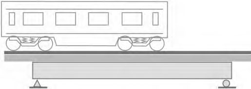
Рисунок 7.2 - Схема хомутов для опор с размерами граней более 80 см
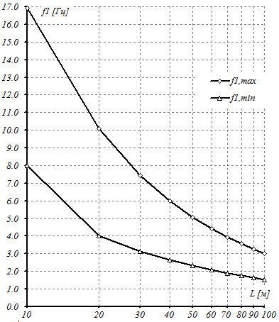
Для повышения устойчивости сжатых рабочих стержней опоры кроме цепочек хомутов следует предусматривать постановку монтажных связей, соединяющих продольные вертикальные стержни на поперечных гранях опоры. Связи должны состоять из трех стержней диаметром не менее 16 мм и устанавливаться в плане и по высоте не реже, чем через 1,6 м.
Допускается в качестве монтажных связей использовать сварную конструкцию из прокатного металла, устанавливаемых внутри каркаса рабочей арматуры с приваркой ее к связям жесткости.
СП .1325800.2019
Во избежание затруднений, возникающих при бетонировании из-за наличия стержней, пересекающих сечение, связи на каждом уровне допускается устанавливать и закреплять поочередно непосредственно перед укладкой каждого последующего слоя бетона.
8Стальные конструкции
8.1Общие положения
Таблица 8.1
| Расчетная минимальная температура | Тип исполнения |
|---|---|
| До минус 40 о С включительно | Обычное |
| От минус 40 о С до минус 50 о С включительно | Северное А |
8.1.3 При проектировании стальных конструкций мостов следует:
- выбирать оптимальные в технико-экономическом отношении схемы, системы и конструкции пролетных строений, сечения элементов, экономичные профили проката и эффективные марки стали;
- обеспечивать технологичность конструкций при заводском изготовлении и монтаже, в том числе возможность поточного изготовления, конвейерного или крупноблочного монтажа;
- предусматривать независимо от расчетной минимальной температуры и назначения моста применение сварных заводских элементов с фрикционными на высокопрочных болтах, сварными и комбинированными болтосварными монтажными соединениями;
- обеспечивать возможность осмотра, очистки, окраски и ремонта конструкций; исключать в них зоны, в которых возможно скопление воды и затруднено проветривание; предусматривать герметизацию замкнутых профилей, элементов и блоков;
- указывать в рабочих чертежах конструкций металлических (КМ) стальных конструкций марки сталей и материалы соединений, а также необходимые дополнительные требования к ним, предусмотренные стандартами и техническими условиями. Документация КМ должна содержать все данные для заказа металлопроката, метизов, деформационных швов, опорных частей, защитных и гидроизоляционных материалов;
- соблюдать нормы (включая требования к металлическим мостам как объектам инфраструктуры железнодорожного транспорта) по защите стальных конструкций от коррозии.
8.2Материалы и полуфабрикаты
В стальных конструкциях мостов обычного и северного А исполнений следует применять:
- а) для элементов из прокатного металла 1) - сталь в соответствии с таблицей 8.2; с учетом СП 35.13330;
- б) для опорных частей с шаровым сегментом сталь (балансирные плиты, сегмент) по ГОСТ Р 55374 с химическим составом для марки 345-14ХГНДЦ по СП 35.13330; по СП 35.13330 для стали С390 - 14ХГНДЦ; по ГОСТ 19281 - марки 09Г2С; 15ХСНД; 10ХСНД; по ГОСТ 5632 - марки 20Х13; 40Х13; 03Х18Н10Т; 05Х18Н10Т; 08Х18Н10; 08Х18Н10Т; 12Х18Н9; 12Х18Н9Т; 12Х18Н10Т; 12Х18Н12Т; 03Х21Н32М3Б; 03Х21Н32М3БУ, причем для всех марок сталей - с учетом типа исполнения по 8.1.2. При этом допускается применение низколегированных марок сталей (ГОСТ 5632);
- в) для шарниров-болтов, шарниров-осей, катков, валков - по перечислению д) пункта 8.4 СП 35.13330.2011, прокладных листов - по пункту 8.5 СП 35.13330.2011;
- г) высокопрочные болты, гайки и шайбы - по ГОСТ Р 53664;
- д) для сварки конструкций - сварочные материалы по СП 35.13330;
- е) для соединений элементов мостового полотна, перил и смотровых приспособлений - стальные болты, гайки и шайбы с учетом типа исполнения и указаний по классу прочности и маркам сталей по таблицам 8.9 и 8.10 СП 35.13330.2011 (болты и гайки в необходимых случаях - только из спокойной стали);
- ж) для крепления опорных частей к пролетным строениям и стальным опорам высокопрочные болты, гайки и шайбы по 8.2, перечисление г). Допускается использовать болты, гайки и шайбы с учетом типа исполнения и указаний по классу прочности и маркам сталей по таблице 8.10 СП 35.13330.2011;
- и) для крепления опорных частей к бетонным опорам и фундаментам - фундаментные (анкерные) болты с учетом типа исполнения и указаний по маркам сталей по таблице 8.11 СП 35.13330.2011.
Примечание - Для несущих элементов служебных проходов и смотровых приспособлений (консолей, балок и решетчатого настила тротуаров; стоек и поручней перил; балок лестниц, переходных площадок) допускается применение конструкций из стали марок: для обычного исполнения - Ст3сп5 (без сварных соединений - Ст3сп4; при толщине до 10 мм - из полуспойной стали тех же категорий) по ГОСТ 535 и ГОСТ 14637; для северного А и Б исполнений - 345-10Г2С1Д-3, 345-10Г2С1-3, 325-09Г2СД-3, 325-09Г2С3, 295-09Г2С-3, 295-09Г2Д-3, 295-09Г2-3 и 325-14Г2-3 по ГОСТ 19281, а также 325-09Г2СД по ГОСТ Р 55374. При этом применение круглых труб допускается без ограничений, а прямоугольных сварных - с соблюдением требований СП 35.13330 к радиусу гибки для конструкций, воспринимающих динамическую нагрузку. Механические свойства металла труб должны быть указаны в проекте и обеспечены предприятием изготовителем конструкций.
1) Толстолистовой, широкополосный универсальный, фасонный, сортовой прокат и трубы следует применять из стали с требованием свариваемости, за исключением проката для болтов, гаек и шайб, а также для элементов без сварных соединений.
СП .1325800.2019
Таблица 8.2
| Сталь несущих элементов сварных пролетных строений, опор и эксплуатационных обустройств при заводских и монтажных соединениях | Сталь несущих элементов сварных пролетных строений, опор и эксплуатационных обустройств при заводских и монтажных соединениях | Сталь несущих элементов сварных пролетных строений, опор и эксплуатационных обустройств при заводских и монтажных соединениях | Сталь несущих элементов сварных пролетных строений, опор и эксплуатационных обустройств при заводских и монтажных соединениях | Сталь несущих элементов сварных пролетных строений, опор и эксплуатационных обустройств при заводских и монтажных соединениях | Сталь несущих элементов сварных пролетных строений, опор и эксплуатационных обустройств при заводских и монтажных соединениях | Сталь несущих элементов сварных пролетных строений, опор и эксплуатационных обустройств при заводских и монтажных соединениях | Сталь несущих элементов сварных пролетных строений, опор и эксплуатационных обустройств при заводских и монтажных соединениях | Сталь несущих элементов сварных пролетных строений, опор и эксплуатационных обустройств при заводских и монтажных соединениях | Сталь несущих элементов сварных пролетных строений, опор и эксплуатационных обустройств при заводских и монтажных соединениях | |
|---|---|---|---|---|---|---|---|---|---|---|
| швов, включая стыковые, | швов, включая стыковые, | швов, включая стыковые, | швов, включая стыковые, | швов, включая стыковые, | исполнения применении в сварных элементов из листового проката | исполнения применении в сварных элементов из листового проката | исполнения применении в сварных элементов из листового проката | исполнения применении в сварных элементов из листового проката | ||
| Тол- щина про- ката, | Нормативный документ | Нормативный документ | Вид проката | Марка стали | Нормативный документ | Нормативный документ | Тол- щина про- ката, | |||
| Тол- щина про- ката, | Номер | Примечани е | Вид проката | Марка стали | Номер | Примечание | Тол- щина про- ката, | |||
| Обычное | мм 8-50 1) 8-50 1) 8-50 1) 8-50 1) | 15ХСНД-2 10ХСНД-2 345- 14ХГНДЦ-2 390- 14ХГНДЦ-2 | ГОСТ 55374 ГОСТ 55374 ГОСТ 55374 СП 35.13330 | Р Р Р Дополни- тельные требования по химичес- кому составу (СП 35.13330) | Листовой | 15ХСНД 15ХСНД-2 10ХСНД 10ХСНД-2 15ХСНДА-2 10ХСНДА-2 | ГОСТ Р 55374 ГОСТ Р 55374 ГОСТ Р 55374 ГОСТ Р 55374 СП 35.13330 СП 35.13330 ГОСТ Р 55374 СП 35.13330 ГОСТ Р 55374 Дополнительные | Дополнительные требования по химическому составу (СП 35.13330) | мм 8-15 16-50 1) 8-15 16-50 1) 8 - 50 1) 8 - 50 1) 8 - 50 1) 8 - 50 1) 4-50 1) | |
| Обычное | мм 8-50 1) 8-50 1) 8-50 1) 8-50 1) | 15ХСНД-2 10ХСНД-2 345- 14ХГНДЦ-2 390- 14ХГНДЦ-2 | ГОСТ 55374 ГОСТ 55374 ГОСТ 55374 СП 35.13330 | Р Р Р Дополни- тельные требования по химичес- кому составу (СП 35.13330) | Листовой | 345-14ХГНДЦ-2 390-14ХГНДЦ-2 09Г2СД-2 | ГОСТ Р 55374 ГОСТ Р 55374 | Дополнительные требования по химическому составу (СП 35.13330) | ||
| Обычное | мм 8-50 1) 8-50 1) 8-50 1) 8-50 1) | 15ХСНД-2 10ХСНД-2 345- 14ХГНДЦ-2 390- 14ХГНДЦ-2 | ГОСТ 55374 ГОСТ 55374 ГОСТ 55374 СП 35.13330 | Р Р Р Дополни- тельные требования по химичес- кому составу (СП 35.13330) | Листовой | 15ХСНД 10ХСНД 345-14ХГНДЦ 3) | требования по | |||
| Обычное | мм 8-50 1) 8-50 1) 8-50 1) 8-50 1) | 15ХСНД-2 10ХСНД-2 345- 14ХГНДЦ-2 390- 14ХГНДЦ-2 | ГОСТ 55374 ГОСТ 55374 ГОСТ 55374 СП 35.13330 | Р Р Р Дополни- тельные требования по химичес- кому составу (СП 35.13330) | Фасонный | ГОСТ Р 55374 | химическому | 8-20 | ||
| Обычное | мм 8-50 1) 8-50 1) 8-50 1) 8-50 1) | 15ХСНД-2 10ХСНД-2 345- 14ХГНДЦ-2 390- 14ХГНДЦ-2 | ГОСТ 55374 ГОСТ 55374 ГОСТ 55374 СП 35.13330 | Р Р Р Дополни- тельные требования по химичес- кому составу (СП 35.13330) | Листовой | ГОСТ Р 55374 | Дополнительные требования по химическому составу (СП 35.13330) | 8-32 | ||
| Обычное | мм 8-50 1) 8-50 1) 8-50 1) 8-50 1) | 15ХСНД-2 10ХСНД-2 345- 14ХГНДЦ-2 390- 14ХГНДЦ-2 | ГОСТ 55374 ГОСТ 55374 ГОСТ 55374 СП 35.13330 | Р Р Р Дополни- тельные требования по химичес- кому составу (СП 35.13330) | Листовой | 09Г2СД | составу | Дополнительные требования по химическому составу (СП 35.13330) | 4-20 | |
| Обычное | мм 8-50 1) 8-50 1) 8-50 1) 8-50 1) | 15ХСНД-2 10ХСНД-2 345- 14ХГНДЦ-2 390- 14ХГНДЦ-2 | ГОСТ 55374 ГОСТ 55374 ГОСТ 55374 СП 35.13330 | Р Р Р Дополни- тельные требования по химичес- кому составу (СП 35.13330) | Листовой | Дополнительные требования по химическому составу (СП 35.13330) | 8-15 | |||
| Северное А | 8-50 1) 8-50 1) 8-50 1) | 15ХСНД-3 10ХСНД-3 345- 14ХГНДЦ-3 | ГОСТ ГОСТ 55374 ГОСТ | Р Дополнител ьные требования по | Листовой | 15ХСНД-2 15ХСНДА-3 10ХСНДА-3 | ГОСТ Р 55374 СП 35.13330 СП 35.13330 | Дополнительные требования по химическому составу (СП 35.13330) | 8-50 1) 8-50 1) 8-50 1) 8-50 1) 8-50 1) 8-50 1) | |
| Северное А | 8-50 1) 8-50 1) 8-50 1) | 15ХСНД-3 10ХСНД-3 345- 14ХГНДЦ-3 | 55374 | Р | Листовой | 10ХСНД-2 | ГОСТ Р 55374 | Дополнительные требования по химическому составу (СП 35.13330) | ||
| Северное А | 8-50 1) 8-50 1) 8-50 1) | 15ХСНД-3 10ХСНД-3 345- 14ХГНДЦ-3 | 55374 | Р | Листовой | 345-14ХГНДЦ-2 390-14ХГНДЦ-2 | ГОСТ Р 55374 СП 35.13330 | Дополнительные требования по химическому составу (СП 35.13330) | ||
| Северное А | 8-50 1) 8-50 1) 8-50 1) | 15ХСНД-3 10ХСНД-3 345- 14ХГНДЦ-3 | 55374 | химическо | Листовой | ГОСТ Р 55374 | Дополнительные требования по химическому составу (СП 35.13330) | 4-50 1) | ||
| Северное А | 8-50 1) 8-50 1) 8-50 1) | 15ХСНД-3 10ХСНД-3 345- 14ХГНДЦ-3 | 55374 | му составу | Листовой | 09Г2СД-3 | Дополнительные требования по химическому составу (СП 35.13330) |
| 8-50 1) | 390- 14ХГНДЦ-3 | СП 35.13330 | (СП 35.13330) С полист- ным конт- ролем по пункту 6.4.1 ГОСТ Р 55374- 2012 2) С полист- ным конт- ролем по пункту 6.4.1 ГОСТ Р 55374- 2012 2) | Фасонный | 55374 55374 55374 55374 По пункту 5.5 (таблица 6) ГОСТ Р 55374- 2012 с проверкой ударной вязкости по KCU для 2-й категории То же Дополнительные требования по химическому составу (СП 35.13330) По пункту 5.5 (таблица 6) ГОСТ Р 55374- 2012 с проверкой ударной вязкости по KCU для 2-й категории По пункту 5.5 (таблица 6) ГОСТ Р 55374- 2012 с проверкой ударной вязкости по KCU для 2-й |
* В плите балластного корыта мостов с монтажными соединениями на высокопрочных болтах обычного и северного А исполнений допускается использовать листовой прокат толщиной не менее 12 мм из двухслойной коррозионно-стойкой стали с основным слоем из низколегированной стали и плакирующим слоем из коррозионно-стойкой стали по ГОСТ 10885.
- ** В конструкциях мостов северного исполнения А применять двутавры, тавры и швеллеры без термообработки (нормализации) не допускается. В стальных конструкциях мостов обычного и северного А исполнений допускается использовать сортовой прокат (кроме полосового) и трубы 1-й категории при условии выполнения дополнительных требований, указанных для фасонного проката.
- 1) Для сварных стыковых швов, выполняемых в вертикальном положении, толщину листового проката следует принимать в пределах 12 -32 мм. При этом листовой прокат следует принимать не ниже 2-й категории.
- 2 ) Требование полистного испытания следует предъявлять при расчетной минимальной температуре наружного воздуха ниже минус 45 С.
- 3) К фасонному прокату из стали марки 14ХГНДЦ следует относить уголки по ГОСТ 8509 и ГОСТ 8510.
8.3Расчетные характеристики материалов и соединений
Нормативные и расчетные сопротивления проката из сталей, приведенных в таблице 8.2, следует принимать по таблице 8.5 и СП 35.13330.
Расчетные сопротивления проката по ГОСТ 535, ГОСТ 14637 и ГОСТ 19281 следует принимать равными пределу текучести, указанному в этих стандартах, поделенному на коэффициент надежности по материалу m по таблице 8.4.
СП .1325800.2019
Способ обработки контактных поверхностей должен быть указан в чертежах КМ.
Таблица 8.3
| Напряженное состояние | Расчетные сопротивления проката |
|---|---|
| Растяжение, сжатие и изгиб: - по пределу текучести - по временному сопротивлению | R у = R yn / m R u = R un / m |
| Сдвиг (срез) | R s = 0,58 R yn / m |
| Смятие торцевой поверхности при наличии пригонки | R p = R un / m |
| Смятие местное в цилиндрических шарнирах (цапфах) при плотном касании | R lp =0,5 R un / m |
| Диаметральное сжатие катков при свободном касании в конструкциях с ограниченной подвижностью: - при R un 600 МПа - при R un 600 МПа | R cd = 0,025 R un / m R cd = 0,042 10 - 6 ( R un - 600) 2 +0,025 R un / m |
| Растяжение в направлении толщины проката t при t до 60 мм | R th = 0,5 R un / m |
| Примечание - m - коэффициент надежности по материалу, определяемый в соответствии с 8.3.2. | Примечание - m - коэффициент надежности по материалу, определяемый в соответствии с 8.3.2. |
Таблица 8.4
| Нормативный документ (марка стали или значение предела текучести) | Коэффициент надежности по материалу γ m |
|---|---|
| ГОСТ 535 и ГОСТ 14637 (Ст3сп, Ст3пс, Ст3кп); ГОСТ 19281 (до 380 МПа) | 1,05 |
| ГОСТ 19281 (св. 380 МПа) | 1,10 |
| ГОСТ Р 55374 (15ХСНД, 09Г2СД); ГОСТ Р 55374; СП 35.13330 (345-14ХГНДЦ); СП 35.13330 (15ХСНДА) | 1,165 |
| ГОСТ Р 55374 (10ХСНД); СП 35.13330 390-14ХГНДЦ; СП 35.13330 10ХСНДА | 1,125 |
Таблица 8.5
| Нормативное сопротивление 2) , МПа | Нормативное сопротивление 2) , МПа | Расчетное сопротивление 3) , МПа | Расчетное сопротивление 3) , МПа | ||||
|---|---|---|---|---|---|---|---|
| Марка стали | Нормативный документ | Прокат | Толщи- на прока- та 1) , мм | по преде- лу теку- чести | по времен- ному сопроти- влению | по пре- делу теку- чести | по времен- ному сопроти- влению |
| R yn | R un | R y | R u | ||||
| 15ХСНД | ГОСТ Р 55374 | Листовой | 8-50 | 345 | 490 | 295 | 415 |
| 15ХСНД | ГОСТ Р 55374 | Фасонный | 8-32 | 345 | 490 | 295 | 415 |
| 345-14ХГНДЦ | ГОСТ Р 55374; СП 35.13330 | Листовой | 8-50 | 345 | 490 | 295 | 415 |
| 345-14ХГНДЦ | ГОСТ Р 55374; СП 35.13330 | Фасонный | 8-20 | 345 | 490 | 295 | 415 |
| 15ХСНДА | СП 35.13330 | Листовой | 8-50 | 345 | 490 | 295 | 415 |
| 09Г2СД | ГОСТ Р 55374 | Листовой | 4-50 | 325 | 450 | 280 | 385 |
| 09Г2СД | ГОСТ Р 55374 | Фасонный | 4-20 | 325 | 450 | 280 | 385 |
| 10ХСНД | ГОСТ Р 55374 | Листовой | 8-50 | 390 | 530 | 350 | 470 |
| 10ХСНД | ГОСТ Р 55374 | Фасонный | 8-15 | 390 | 530 | 350 | 470 |
| 10ХСНДА 390-14ХГНДЦ | СП 35.13330 СП 35.13330 | Листовой | 8-50 | 390 | 530 | 350 | 470 470 |
| Листовой | 8-50 | 390 | 530 | 350 | |||
| 40X13 | ГОСТ 5632 | Круглый | До 250 | 1200 | 1540 | 1050 | 1365 |
- 3) Здесь указаны расчетные сопротивления растяжению, сжатию и изгибу Ry и Ru . Остальные расчетные сопротивления определяются по формулам таблицы 8.3.
Примечания
- 1 Значения расчетных сопротивлений получены делением нормативных сопротивлений на коэффициент надежности по материалу, определяемый по таблице 8.4, и округлением до 5 МПа.
- 2 Расчетные сопротивления двухслойной коррозионно-стойкой стали по ГОСТ 10885 следует принимать по основному слою.
Таблица 8.6
| Способ обработки контактных поверхностей во фрикционных соединениях | Коэффициент трения |
|---|---|
| 1 Пескоструйный или дробеструйный двух поверхностей кварцевым песком или дробью - без последующей консервации | 0,58 |
| 2 Кварцевым песком или дробью одной поверхности с консервацией полимерным клеем и посыпкой карборундовым порошком, стальными щетками без консервации - другой поверхности | 0,50 |
| 3 Газопламенный двух поверхностей без консервации | 0,42 |
| 4 Стальными щетками двух поверхностей без консервации | 0,35 |
| 5 Дробеметный двух поверхностей дробью без последующей консервации | 0,38 |
| 6 Дробеметный двух поверхностей дробью с последующим их газопламенным нагревом (до температуры 250 С - 300 С) на кольцевых зонах вблизи отверстий площадью не менее площади шайбы | 0,61 |
Таблица 8.7
| Значения коэффициента надежности bh при обработке контактных поверхностей* способом | Значения коэффициента надежности bh при обработке контактных поверхностей* способом | Значения коэффициента надежности bh при обработке контактных поверхностей* способом | Значения коэффициента надежности bh при обработке контактных поверхностей* способом | Значения коэффициента надежности bh при обработке контактных поверхностей* способом | Значения коэффициента надежности bh при обработке контактных поверхностей* способом | |
|---|---|---|---|---|---|---|
| Число высоко- прочных болтов в соеди- нении | Пескоструй- ным или дробеструй- ным | Дробеструй- ным с нанесением клеефрикци- онного покрытия | Газоплаз- менным | Стальными щетками | Дробе- метным | Дробеметным с газоплазменным нагревом поверхности металла в зоне отверстия до 250 С - 300 С |
| 2-4 5-19 20 | 1,568 1,362 1,184 | 1,250 1,157 1,068 | 1,956 1,576 1,291 | 2,514 1,848 1,411 | 1,441 1,321 1,208 | 1,396 1,290 1,189 |
8.4Учет условий работы и назначения конструкций
При расчете стальных конструкций и соединений мостов надлежит учитывать:
- коэффициент надежности по ответственности n , согласно 6.1.5-6.1.7;
- коэффициент надежности u = 1,3 для элементов конструкций, рассчитываемых по прочности с использованием расчетных сопротивлений Ru ;
- коэффициент условий работы m , по таблице 8.8 и СП 35.13330.2011 (раздел 8).
Таблица 8.8
| Область применения | Коэффициент условий работы т |
|---|---|
| 1 Элементы и их соединения в пролетных строениях и опорах мостов при расчете на стадии эксплуатации | 0,9 |
| 2 То же, при расчете на нагрузки, возникающие при изготовлении, транспортировании и монтаже | 1,0 |
| 3 Канаты гибких несущих элементов в вантовых мостах | 0,8 |
| 4 Канаты напрягаемых элементов предварительно напряженных конструкций | 0,9 |
| 5 Растянутые и сжатые элементы из одиночных профилей, прикрепленных одной полкой (или стенкой): - неравнополочный уголок, прикрепленный меньшей полкой - неравнополочный уголок, прикрепленный большей полкой - равнополочный уголок - прокатный или составной швеллер, прикрепленный стенкой, или тавр, прикрепленный полкой | 0,7 0,8 0,75 |
| 6 Элементы и их сварные соединения в пролетных строениях и опорах северного А исполнения | 0,9 |
| 0,9 |
| Область применения | Коэффициент условий работы т |
|---|---|
| 7 В случаях, не оговоренных в позициях 1-6 настоящей таблицы | 1,0 |
Примечание - Значение коэффициента условий работы по позициям 1 и 2 настоящей таблицы в соответствующих случаях применяют совместно с коэффициентами по позициям 3-6 настоящей таблицы. Коэффициент условий работы по позиции 6 в соответствующих случаях применяют совместно с коэффициентами по позициям 3-5 настоящей таблицы.
8.5Основные положения по расчету
8.6Основные положения по конструированию
- выполнять конструктивно-технологические требования в соответствии с СП 35.13330, СП 46.13330 и настоящим сводом правил;
- предусматривать монтажные элементы (или блоки) максимальной заводской готовности с минимальными объемами работ по сборке соединений на монтажной площадке с учетом грузоподъемности и габаритов транспортных средств и условий строительства;
- осуществлять, как правило, унификацию монтажных блоков и элементов, а также узлов и расположения болтовых отверстий;
- учитывать способы монтажа;
- учитывать допуски на заводское изготовление и монтаж;
- обеспечивать возможность изготовления, удобство сборки и выполнения монтажных соединений;
- предусматривать связи, обеспечивающие в процессе транспортирования, монтажа и эксплуатации устойчивость и пространственную неизменяемость конструкции в целом, ее частей и элементов;
- предусматривать преимущественное применение автоматической и механизированной сварки и фрикционных соединений на высокопрочных болтах;
- предусматривать устройство антикоррозионно-защитного гидроизоляционного слоя внутренних поверхностей балластного корыта со сроком службы не менее 30 лет;
- как правило, выполнять несущие элементы из минимального числа деталей, используя, в том числе, увеличение толщины элементов (для повышения долговечности за счет уменьшения числа сварных швов);
- исключать стесненное расположение привариваемых деталей, резкие изменения сечения элементов, образование конструктивных «надрезов» в виде обрывов фасонок и ребер жесткости или вырезов в них, примыкающих под углом к поверхности напряженных частей сечения (поясов и стенок балок, листов составных элементов и т. д.).
- оптимальный порядок сборки и сварки элементов;
- роспуск швов;
- предварительный выгиб;
- предварительный подогрев металла в зоне наложения сварных швов;
- нагрев отдельных зон после сварки;
- полное проплавление и выкружки на концах обрываемых деталей, подходящие по касательной к поверхности оставшейся части сечения;
- механическую обработку зон концентрации напряжений;
- обработку монтажных поперечных стыков с полным проплавлением с обеих сторон шва заподлицо с основным металлом;
- припуски (при необходимости).
В конструкциях северного исполнения следует исключать обрыв отдельных частей сечения по длине элемента в целом (или монтажного блока, если в стыках блоков применены фрикционные соединения).
«Открытые» пролетные строения и «открытая» проезжая часть допускаются при условии закрепления свободных поясов балок пролетных строений жесткими поперечными рамами, а балок проезжей части - поперечными связями.
Если пояса балок или ферм жестко связаны железобетонной или стальной плитой или иными конструктивными элементами, допускается не устраивать продольных связей в соответствующей плоскости, если они не требуются по условиям монтажа.
В арочных пролетных строениях следует устраивать продольные связи в плоскости одного из поясов арок и в плоскости проезжей части, если она не имеет плиты; при решетчатых арках следует предусматривать поперечные связи между ними, а также продольные связи по обоим поясам.
В пролетных строениях с проезжей частью, не включенной в совместную работу с главными фермами, следует устраивать тормозные связи.
Прикрепление балок проезжей части с помощью торцевых листов, приваренных к стенке и поясам балки, не допускается.
В проезжей части пролетных строений разрывы (отсутствие жесткого соединения) продольных балок у поперечных не допускаются.
9Сталежелезобетонные конструкции
10Опоры, основания и фундаменты
При моделировании свайных фундаментов следует руководствоваться указаниями СП 24.13330.2011 (приложение В), а на естественном основании - СП 22.13330.2016 (приложение Б), а также методиками, приведенными в приложениях П и Р.
При моделировании динамических характеристик оснований следует также руководствоваться основными положениями СП 26.13330.
Расчеты по предельным состояниям
- по первой группе - по несущей способности оснований, устойчивости фундаментов против опрокидывания и сдвига, прочности и устойчивости конструкций фундаментов 1) ;
- по второй группе - по деформациям оснований и фундаментов (осадкам, кренам, горизонтальным перемещениям, углам перелома пути в плане), положению равнодействующей для фундаментов мелкого заложения и трещиностойкости железобетонных конструкций фундаментов.
1) Проверки выносливости для массивных опор, а также оснований и фундаментов всех видов не выполняют.
При выполнении проверок надежности оснований опор и труб, а также массивных опор динамические воздействия не учитывают, коэффициенты 1 + μ1, 1 + μ2 и 1 + μ принимают равными 1,0.
При проектировании сквозных, тонкостенных и стоечных опор коэффициенты динамики являются результатами расчетов, выполняемых по методикам А.2, Б.1, Б.2 (см. 6.3.10).
где р - среднее давление подошвы фундамента на основание, кПа; pmax - максимальное давление подошвы фундамента на основание, кПа;
R - расчетное сопротивление основания из нескальных или скальных грунтов осевому сжатию, кПа, по СП 35.13330.2011 (приложение 2); γ n - коэффициент надежности по ответственности (назначению), принимаемый равным 1,4; m - коэффициент условий работы, принимаемый по таблице 10.1.
Проверки должны быть выполнены на основные, дополнительные, особые и строительные сочетания нагрузок.
Таблица 10.1 Значение коэффициента условий работы m при расчете несущей способности грунта под подошвой фундамента мелкого заложения
| Тип основания | Тип основания | |
|---|---|---|
| Сочетания нагрузок | Нескальное | Скальное |
| Основные | 1,0 | 1,2 |
| Дополнительные | 1,2 | 1,2 |
| Особые | 1,3 | 1,3 |
| Строительные | 1,2 | 1,2 |
В расчетах по несущей способности оснований фундаментов напряжения в грунте под подошвой pmax фундамента следует определять, как максимальные по сочетаниям в угловых точках плиты фундамента или основания условного фундамента (см. 10.5). В сочетаниях должно рассматриваться одновременное действие постоянных и временных нагрузок, вертикальных и горизонтальных, вдоль и поперек моста. Среднее давление p следует вычислять при тех же сочетаниях, как максимальное в точке центра тяжести сечения фундамента.
Таблица 10.2 Наибольший относительный эксцентриситет вертикальной равнодействующей для фундаментов мелкого заложения
| При действии нагрузок | При действии нагрузок | |
|---|---|---|
| Вид конструкции | только постоянных | постоянных и временных |
| Промежуточные опоры | e 0 / r ≤ 0,1 | e 0 / r ≤ 1,0 |
| Устои и трубы | e 0 / r ≤ 0,5 | e 0 / r ≤ 0,6 |
П р и м е ч е н и е - В настоящей таблице применены следующие обозначения: е 0 = M/N - эксцентриситет равнодействующих нагрузок 1) ; r = W/A - радиус ядра сечения подошвы фундамента;
M - момент действующих сил на уровне подошвы фундамента 1) ;
N - равнодействующая вертикальных сил;
- W - момент сопротивления подошвы фундамента для менее напряженного ребра;
- А - площадь подошвы фундамента.
- 1) Относительно главной центральной оси подошвы фундамента.
Примечание - При расчете осадок свайных фундаментов опор мостов по СП 24.13330 следует принимать, что:
- 1) положения 7.4 для большой группы свай (свайного поля) применяются к фундаментам при числе свай в ростверке более 4 (кроме однорядных);
- 2) дополнительные осадки sc и sp в формуле (7.41) СП 24.13330.2011 реализуются в процессе строительства и не должны учитываться в расчетах осадки на стадии эксплуатации. 3. 10.11 При расчете осадок устоев необходимо учитывать дополнительное вертикальное давление на основание от веса примыкающей части насыпи подходов, определяемое согласно СП 35.13330.2011 (приложение 5). При этом следует полагать, что начальная и часть замедленной составляющей осадки от веса насыпи реализуется до ввода в эксплуатацию (приложение Р). 4. 10.12 Следует учитывать взаимное влияние осадок примыкающей части насыпи и осадки устоев и возможное «негативное» трение в сваях. При этом длину участка свай, на которых может реализоваться «негативное» трение, следует определять при полных конечных осадках. 5. 10.13 В районах развития карстово-суффозионных процессов допускается применение висячих буронабивных свай большого диаметра с жесткой заделкой в ростверк. Свайный фундамент под опору моста следует проектировать с учетом того, что в пределах контура фундамента в плане возможно образование одного участка (зоны) полной потери несущей способности основания. Параметром такой зоны в случае фундаментов с однорядным расположением свай является расчетный пролет карстового провала ld , в остальных случаях - расчетная площадь карстового провала Sd . Расчетные параметры ld и Sd следует определять в соответствии с указаниями приложения С.
Следует полагать, что свая, попадающая в зону полной потери несущей способности основания, не участвует в работе свайного ростверка. При этом она воспринимает отрицательное трение оседающего вокруг нее грунта и (вместе с весом самой сваи) передает его через ростверк на остальные сваи в составе фундамента.
Сочетания нагрузок и воздействий, включающие воздействие от образования карстового провала, следует рассматривать как особые.
Конструирование
- в грунтах, не подверженных пучению в пределах суши, на любом уровне независимо от расчетной глубины промерзания при условии простирания толщи этих грунтов ниже глубины промерзания не менее 1 м и отсутствия при промерзании напорных грунтовых вод;
- в грунтах, подверженных пучению, вне пределов промерзания (ниже расчетной глубины промерзания не менее 0,25 м или выше дневной поверхности грунта на 0,5 м и более);
- в русле реки на любом уровне (в том числе выше дна русла) при отсутствии промерзания воды до дна, но не менее чем на δ + 0,25 м ниже уровня низкого ледостава, где δ - толщина льда, м;
- при наличии ледохода и карчехода с таким расчетом, чтобы сваи не могли подвергаться их воздействию.
11Строительство мостов и труб
- при проведении работ в габарите приближения строений и подвижного состава;
- когда опасные зоны по условиям производства работ, отраженным в проекте организации строительства (ПОС) и ППР, затрагивают габарит приближения строений и подвижного состава;
- на электрифицированных участках железной дороги при необходимости снятия напряжения с устройств контактной сети и воздушных линий по условиям производства работ.
Кроме того, в программе испытаний больших пролетов, в том числе, должна быть предусмотрена проверка спектра реальных значений собственных частот пространственных колебаний и обоснование мероприятий по обеспечению безопасности.
12Проектирование транспортных тоннелей
12.1Общие положения
- ниши и камеры в тоннеле не устраиваются;
- трубы с подводящим кабелем питания освещения и слаботочных устройств утапливаются в тело обделки, внутренних конструкций тоннеля или путевого бетонного основания при условии соблюдения мероприятий по их герметизации;
- шкафы, проемы и ниши во внутренних конструкциях должны быть закрытыми, например, дверцами жалюзийного типа.
За безопасный уровень максимального колебания давления принимают показатель не более 10 кПа.
В случае расположения вблизи входа в тоннель зданий и сооружений, а также при расположении тоннелей в особых экологических зонах при соответствующем обосновании допускается выполнять по длине раструбных участков проемы, связывающие внутритоннельное пространство с атмосферой, а вертикальные поверхности этих участков покрывать шумопоглощающими материалами.
На геотехническую экспертизу представляется следующая документация:
- результаты инженерно-геологических и геотехнических изысканий;
- результаты обследования технического состояния зданий и сооружений, расположенных в зоне влияния строительства;
- проектные решения несущих конструкций;
- результаты математического моделирования совместной работы подземного сооружения с вмещающим грунтовым массивом, включая расчеты влияния проектируемого подземного сооружения на окружающую застройку;
- проекты усиления оснований и фундаментов существующих зданий и других мероприятий по обеспечению их сохранности и безопасной эксплуатации с расчетным обоснованием принятых технических решений;
- результаты прогнозирования гидрогеологической ситуации;
- ПОС;
- проект геотехнического мониторинга (наблюдательной станции).
- расстояние между тоннелями на портальных участках не нормируется, но, как правило, не должно быть менее двух поперечных размеров обделки в осях;
- расположение тоннелей в плане должно удовлетворять требованиям, предъявляемым к открытым участкам трассы ВСМ. При расположении порталов в плане на расстоянии менее 25 м в осях необходимо предусматривать на порталах разделительную перегородку.
12.2Инженерно-геологические изыскания
12.3Объемно-планировочные решения
Тоннели длиной менее 1000 м, а также тоннели в стесненных природных или градостроительных условиях при соответствующем технико-экономическом обосновании допускается проектировать двухпутными.
При проектировании двухпутных тоннелей следует предусматривать:
- или конструктивные решения, обеспечивающие разделение путей в тоннеле;
- или организационно-технические решения, исключающие одновременное нахождение в одном сечении тоннеля двух поездов.
- эвакуации людей;
- организации работ при строительстве и ремонте;
- установки эксплуатационного оборудования;
- прокладки коммуникаций.
Сбойки между тоннелями и проемы в разделительной перегородке для двухпутных тоннелей устраивают с шагом не более 1000 м.
12.4Поперечное сечение, продольный профиль и план
На прямолинейных и криволинейных участках пути поперечное сечение тоннеля следует проектировать исходя из параметров габарита приближения строений С400Т (см. рисунок 12.1) с учетом его уширения. При кривых R > 4000 м уширение габарита допускается не предусматривать.
В зависимости от типа тоннеля (однопутный или двухпутный) и проектной скорости движения поездов внутреннее поперечное сечение, м² , должно быть не менее:
75 - для однопутных тоннелей;
110 - для двухпутных тоннелей.
Максимальный уклон определяется с учетом смягчения руководящего уклона. Коэффициент смягчения руководящего уклона следует принимать по расчету в зависимости от величины дополнительного сопротивления подвижного состава при прохождении тоннеля.
Рисунок 12.1 - Габарит приближения строений С400Т
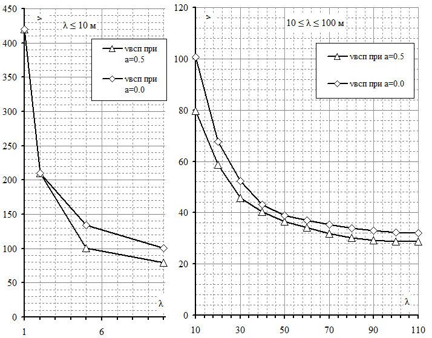
12.5Материалы
Требования, предъявляемые к материалам, должны соответствовать требованиям, изложенным в СП 122.13330.2012 (пункт 5.4.2).
12.6Конструктивные строительные требования
12.7Нагрузки и воздействия
12.8Расчет конструкций подземных сооружений
12.9Гидроизоляция обделок и защита от коррозии. Деформационные швы
12.10Притоннельные сооружения
Требования, предъявляемые к конструкциям притоннельных сооружений, должны соответствовать требованиям, изложенным в СП 122.13330.2012 (пункт 5.4.7).
12.11Эксплуатационные устройства
Требования, предъявляемые к эксплуатационным устройствам, должны соответствовать требованиям, изложенным в СП 122.13330.2012 (подраздел 7.2).
12.12Энергоснабжение, энергоустановки и электроосвещение
12.13Тоннельная вентиляция
Требования, предъявляемые к тоннельной вентиляции, должны соответствовать требованиям, изложенным в СП 122.13330 и настоящем своде правил.
12.14Водоснабжение и водоотведение
12.15Автоматика, телемеханика и связь
12.16Требования к сооружениям инженерной защиты
Требования, предъявляемые к сооружениям инженерной защиты, должны соответствовать требованиям, изложенным в СП 116.13330.
12.17Охрана окружающей среды при сооружении тоннелей
- результаты оценки воздействия на окружающую среду;
- перечень мероприятий по предотвращению и (или) снижению возможного негативного воздействия намечаемой хозяйственной деятельности на окружающую среду и рациональному использованию природных ресурсов на период строительства и эксплуатации тоннелей;
- карту-схему с указанием размещения трассы тоннелей на ВСМ и границ зон с особыми условиями использования территории, мест обитаний животных и растений, занесенных в Красную книгу Российской Федерации и красные книги субъектов Российской Федерации;
- карту-схему границ зон экологического риска и возможного загрязнения окружающей природной среды вследствие аварии на тоннелях.
12.18Мероприятия по предотвращению чрезвычайных ситуаций
13Строительство тоннелей
Строительство транспортных тоннелей ВСМ следует вести в соответствии с требованиями СП 122.13330.
Приложение А
Иерархия моделей взаимодействия моста с подвижным составом
Таблица А. 1
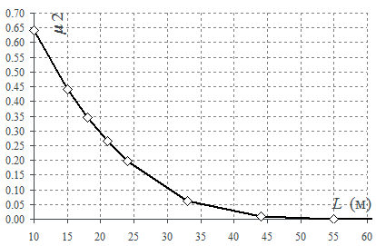
БПриложение Б. Определение частоты колебаний и резонансных скоростей для балочных разрезных пролетных строений
- Б.1 Для балочных разрезных пролетных строений резонансные скорости, м/с, могут быть определены следующим образом:
где f 1 - первая собственная частота колебаний ненагруженного пролетного строения, Гц;
Vi -i -я резонансная скорость, м/с; d - регулярный интервал между группами осей поезда, м; i = 1, 2, 3 или 4.
Примечание - Формула (Б.1) применима для скоростей 40 ≤ Vi ≤ Vmax , где Vmax - максимальная расчетная скорость, м/с (см. 6.3.5).
- Б.2 Для балочных разрезных пролетных строений допускается определять первую вертикальную частоту колебаний, Гц, по формуле
где δ p - упругий прогиб в середине пролета при действии постоянных нагрузок, м, определяемый по формуле
здесь p - интенсивность постоянной нагрузки, кН/пм;
EJ - жесткость сечения пролетного строения при изгибе, кН·м² ;
L - расчетная длина пролета, м.
ВПриложение В. Диапазоны первых частот вертикальных колебаний пролетных строений
- В.1 При проектировании пролетных строений следует вычислять частоту по первой форме вертикальных колебаний и предельные значения этой частоты:
- верхний предел f 1, max , Гц - ограничивает опасные частоты по признаку совпадения с частотами возбуждения, связанными с неровностями пути и несовершенствами колес подвижного состава:
- нижний предел f 1, min , Гц - ограничивает частоты по признаку резонанса от периодического возбуждения, связанного с наездом тележек поезда на пролетное строение:
где L - расчетная длина пролетного строения, м.
- В.2 Значение коэффициента динамики μ2 может быть вычислено по Ж.7 (приложение Ж), только если первая частота находится ниже верхнего предела f 1, max .
- В.3 Основные параметры балочных разрезных пролетных строений при проектировании по методике А следует назначать таким образом, чтобы значение частоты по первой форме вертикальных колебаний находилось в указанных пределах.
Для этих пролетных строений допускается определять первую частоту по формулам (Б.2) и (Б.3) приложения Б.
- В.4 При проектировании пролетных строений других конструктивных схем (неразрезных, рамных, арочных и т. д.) ограничение (В.2) может не выполняться.
- В.5 Расчетная длина пролетного строения L может быть вычислена двумя способами.
Способ 1:
- а) для балочных разрезных пролетных строений - как длина расчетного пролета;
- б) для неразрезных пролетных строений - как среднее арифметическое длин пролетов, умноженное на коэффициент, равный:
- 1,2 - для двухпролетных балок;
- 1,3 - для трехпролетных балок;
- 1,4 - для четырехпролетных балок;
- 1,5 - при числе пролетов 5 и более,
- но не более длины максимального пролета;
- в) для рамных пролетных строений - так же, как и для неразрезных балочных, при этом крайние стойки рамы (при их наличии) условно рассматриваются в качестве крайних пролетов балки;
- г) для арочных пролетных строений L принимается равной половине пролета арки.
Способ 2
Для пролетных строений любых конструктивных схем - как длина основного участка (с кривизной одного знака) первой вертикальной формы собственных колебаний на линии проезда поезда.
Если расчетные длины, определенные по способам 1 и 2, различаются более чем на 20 %, следует проводить проверки на длину, которая приводит к более пессимистическому результату. При различиях в длинах менее 20 % допускается принимать к расчету их среднее значение.
Таблица В.1 Ограничения частот колебаний по первой форме
| Расчетная длина L, м | Верхний предел f 1, max , Гц | Нижний предел f 1, min , Гц | График |
|---|---|---|---|
| 10 | 16,9 | 8,0 | 17,0 |
| 20 | 10,1 | 4,0 | f 1,max , Гц 16,0 |
| 30 | 7,4 | 3,1 | 15,0 |
| 40 | 6,0 | 2,7 | 14,0 |
| 50 | 5,1 | 2,3 | f 1,max 13,0 |
| 60 | 4,4 | 2,1 | f 12,0 |
| 70 | 3,9 | 1,9 | 1,min 11,0 |
| 80 | 3,6 | 1,8 | 10,0 |
| 90 | 3,3 | 1,6 | 9,0 |
| 110 | 2,8 | 1,5 | 8,0 |
| 120 | 2,6 | 1,4 | 7,0 |
| 130 | 2,5 | 1,3 | 6,0 |
| 140 | 2,4 | 1,3 | 5,0 |
| 150 | 2,2 | 1,2 | 4,0 |
| 160 | 2,1 | 1,2 | 3,0 |
| 170 | 2,0 | 1,1 | 2,0 |
| 180 | 1,9 | 1,1 | L, 1,0 |
| 190 | 1,9 | 1,1 | м 0,0 |
| 200 | 1,8 | 1,0 | 10 20 30 40 50 60 70 80 90 100 |
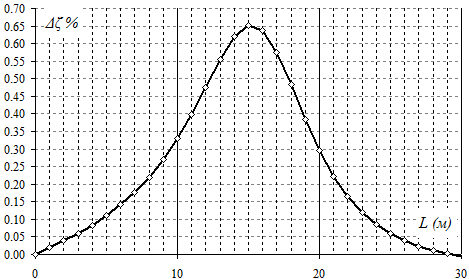
Таблица Г.1 Параметры вариантов поезда
| Варианты поезда | Промежуточные вагоны | Промежуточные вагоны | Промежуточные вагоны | Величина нагрузки на ось P , кН |
|---|---|---|---|---|
| Варианты поезда | Число вагонов 1) N , шт. | Длина вагона D , м | База тележки d , м | Величина нагрузки на ось P , кН |
| A1 | 18 | 18 | 2 | 170 |
| A2 | 17 | 19 | 3,5 | 200 |
| A3 | 16 | 20 | 2 | 180 |
| A4 | 15 | 21 | 3 | 190 |
| A5 | 14 | 22 | 2 | 170 |
| A6 | 13 | 23 | 2 | 180 |
| A7 | 13 | 24 | 2 | 190 |
| A8 | 12 | 25 | 2,5 | 190 |
| A9 | 11 | 26 | 2 | 210 |
| A10 | 11 | 27 | 2 | 210 |
Г.2 Поезда Б1-Б7
Рисунок Г.2
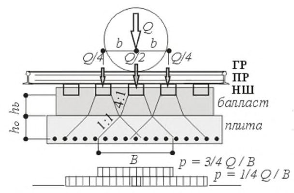
Таблица Г.2
| Б1 | Б1 | Б2 | Б2 | Б3 | Б3 | Б4 | Б4 | Б5 | Б5 | Б6 | Б6 | Б7 | Б7 |
|---|---|---|---|---|---|---|---|---|---|---|---|---|---|
| X i , м | P i , кН | X i , м | P i , кН | X i , м | P i , кН | X i , м | P i , кН | X i , м | P i , кН | X i , м | P i , кН | X i , м | P i , кН |
| 0 | 195 | 0 | 187 | 0 | 170 | 0 | 172,1 | 0 | 170 | 0 | 170 | 0 | 170 |
| 3 | 195 | 3 | 187 | 3 | 170 | 3 | 172,1 | 2,65 | 170 | 2,7 | 170 | 3 | 170 |
| 11,46 | 195 | 12 | 187 | 14 | 170 | 14 | 170,7 | 11 | 170 | 17 | 170 | 14 | 170 |
| 14,46 | 195 | 15 | 187 | 17 | 170 | 17 | 170,7 | 13,65 | 170 | 19,7 | 170 | 17 | 170 |
| 19,31 | 112 | 19,4 | 120 | 20,275 | 170 | 20,28 | 131,6 | 19,13 | 170 | 23,9 | 170 | 20,275 | 163 |
| 21,81 | 112 | 22,4 | 120 | 23,275 | 170 | 23,28 | 131,6 | 28,1 | 170 | 26,6 | 170 | 23,275 | 163 |
| 38,31 | 112 | 38,4 | 120 | 38,975 | 170 | 38,98 | 161,9 | 41,24 | 170 | 40,9 | 170 | 38,975 | 170 |
| 40,81 | 112 | 41,4 | 120 | 41,975 | 170 | 41,98 | 161,9 | 54,38 | 170 | 43,6 | 170 | 41,975 | 170 |
| 45,71 | 112 | 45,5 | 120 | 57,675 | 170 | 57,68 | 169,2 | 67,52 | 170 | 47,8 | 170 | 57,675 | 170 |
| 48,21 | 112 | 48,5 | 120 | 60,675 | 170 | 60,68 | 169,2 | 80,66 | 170 | 50,5 | 170 | 60,675 | 170 |
| 64,71 | 112 | 64,5 | 120 | 76,375 | 170 | 76,38 | 167,9 | 93,8 | 170 | 64,8 | 170 | 76,375 | 170 |
| 67,21 | 112 | 67,5 | 120 | 79,375 | 170 | 79,38 | 167,9 | 106,94 | 170 | 67,5 | 170 | 79,375 | 170 |
| 72,11 | 112 | 71,6 | 120 | 95,075 | 170 | 95,08 | 160,5 | 120,08 | 170 | 71,7 | 170 | 95,075 | 170 |
| 74,61 | 112 | 74,6 | 120 | 98,075 | 170 | 98,08 | 160,5 | 133,22 | 170 | 74,4 | 170 | 98,075 | 170 |
| 91,11 | 112 | 90,6 | 120 | 113,775 | 170 | 113,78 | 167,9 | 146,36 | 170 | 88,7 | 170 | 113,775 | 170 |
СП .1325800.2019
| Б1 | Б1 | Б2 | Б2 | Б3 | Б3 | Б4 | Б4 | Б5 | Б5 | Б6 | Б6 | Б7 | Б7 |
|---|---|---|---|---|---|---|---|---|---|---|---|---|---|
| X i , м | P i , кН | X i , м | P i , кН | X i , м | P i , кН | X i , м | P i , кН | X i , м | P i , кН | X i , м | P i , кН | X i , м | P i , кН |
| 93,61 | 112 | 93,6 | 120 | 116,775 | 170 | 116,78 | 167,9 | 155,33 | 170 | 91,4 | 170 | 116,775 | 170 |
| 98,51 | 112 | 97,7 | 120 | 132,475 | 170 | 132,48 | 169,2 | 160,8 | 170 | 95,6 | 170 | 132,475 | 170 |
| 101,01 | 112 | 100,7 | 120 | 135,475 | 170 | 135,48 | 169,2 | 163,45 | 170 | 98,3 | 170 | 135,475 | 170 |
| 117,51 | 112 | 116,7 | 120 | 151,175 | 170 | 151,18 | 161,9 | 171,8 | 170 | 112,6 | 170 | 151,175 | 170 |
| 120,01 | 112 | 119,7 | 120 | 154,175 | 170 | 154,18 | 161,9 | 174,45 | 170 | 115,3 | 170 | 154,175 | 170 |
| 124,91 | 112 | 123,8 | 120 | 169,875 | 170 | 169,88 | 131,6 | 183,49 | 170 | 119,5 | 170 | 169,875 | 163 |
| 127,41 | 112 | 126,8 | 120 | 172,875 | 170 | 172,88 | 131,6 | 186,14 | 170 | 122,2 | 170 | 172,875 | 163 |
| 143,91 | 112 | 142,8 | 120 | 188,575 | 170 | 176,16 | 170,7 | 194,49 | 170 | 136,5 | 170 | 176,15 | 170 |
| 146,41 | 112 | 145,8 | 120 | 191,575 | 170 | 179,16 | 170,7 | 197,14 | 170 | 139,2 | 170 | 179,15 | 170 |
| 151,31 | 112 | 149,9 | 120 | 195,095 | 170 | 190,16 | 172,1 | 202,62 | 170 | 143,4 | 170 | 190,15 | 170 |
| 153,81 | 112 | 152,9 | 120 | 198,095 | 170 | 193,16 | 172,1 | 211,59 | 170 | 146,1 | 170 | 193,15 | 170 |
| 170,31 | 112 | 168,9 | 120 | 213,795 | 170 | 200,15 | 172,1 | 224,73 | 170 | 160,4 | 170 | 200,19 | 170 |
| 172,81 | 112 | 171,9 | 120 | 216,795 | 170 | 203,15 | 172,1 | 237,87 | 170 | 163,1 | 170 | 203,19 | 170 |
| 177,71 | 112 | 176 | 120 | 232,495 | 170 | 214,15 | 170,7 | 251,01 | 170 | 167,3 | 170 | 214,19 | 170 |
| 180,21 | 112 | 179 | 120 | 235,495 | 170 | 217,15 | 170,7 | 264,15 | 170 | 170 | 170 | 217,19 | 170 |
| 196,71 | 112 | 195 | 120 | 251,195 | 170 | 220,43 | 131,6 | 277,29 | 170 | 184,3 | 170 | 220,465 | 163 |
| 199,21 | 112 | 198 | 120 | 254,195 | 170 | 223,43 | 131,6 | 290,43 | 170 | 187 | 170 | 223,465 | 163 |
| 204,11 | 112 | 202,1 | 120 | 269,895 | 170 | 239,13 | 161,9 | 303,57 | 170 | 191,2 | 170 | 239,165 | 170 |
| 206,61 | 112 | 205,1 | 120 | 272,895 | 170 | 242,13 | 161,9 | 316,71 | 170 | 193,9 | 170 | 242,165 | 170 |
| 223,11 | 112 | 221,1 | 120 | 288,595 | 170 | 257,83 | 169,2 | 329,85 | 170 | 208,2 | 170 | 257,865 | 170 |
| 225,61 | 112 | 224,1 | 120 | 291,595 | 170 | 260,83 | 169,2 | 338,82 | 170 | 210,9 | 170 | 260,865 | 170 |
| 230,51 | 112 | 228,2 | 120 | 307,295 | 170 | 276,53 | 167,9 | 344,29 | 170 | 215,1 | 170 | 276,565 | 170 |
| 233,01 | 112 | 231,2 | 120 | 310,295 | 170 | 279,53 | 167,9 | 346,94 | 170 | 217,8 | 170 | 279,565 | 170 |
| 249,51 | 112 | 247,2 | 120 | 325,995 | 170 | 295,23 | 160,5 | 355,29 | 170 | 232,1 | 170 | 295,265 | 170 |
| 252,01 | 112 | 250,2 | 120 | 328,995 | 170 | 298,23 | 160,5 | 357,94 | 170 | 234,8 | 170 | 298,265 | 170 |
| 256,91 | 112 | 254,3 | 120 | 344,695 | 170 | 313,93 | 167,9 | 239 | 170 | 313,965 | 170 | ||
| 259,41 | 112 | 257,3 | 120 | 347,695 | 170 | 316,93 | 167,9 | 241,7 | 170 | 316,965 | 170 | ||
| 275,91 | 112 | 273,3 | 120 | 363,395 | 170 | 332,63 | 169,2 | 256 | 170 | 332,665 | 170 | ||
| 278,41 | 112 | 276,3 | 120 | 366,395 | 170 | 335,63 | 169,2 | 258,7 | 170 | 335,665 | 170 | ||
| 283,31 | 112 | 280,7 | 187 | 369,67 | 170 | 351,33 | 161,9 | 351,365 | 170 | ||||
| 285,81 | 112 | 283,7 | 187 | 372,67 | 170 | 354,33 | 161,9 | 354,365 | 170 | ||||
| 302,31 | 112 | 292,7 | 187 | 383,67 | 170 | 370,03 | 131,6 | 370,065 | 163 | ||||
| 304,81 | 112 | 295,7 | 187 | 386,67 | 170 | 373,03 | 131,6 | 373,065 | 163 | ||||
| 309,71 | 112 | 376,31 | 170,7 | 376,34 | 170 | ||||||||
| 312,21 | 112 | 379,31 | 170,7 | 379,34 | 170 | ||||||||
| 331,21 | 112 | 393,31 | 172,1 | 393,34 | 170 | ||||||||
| 339,06 | 195 | ||||||||||||
| 347,52 | 195 | ||||||||||||
| 350,52 | 195 |
СП .1325800.2019
Г.3 Параметры поездов Б1-Б7
Таблица Г.3
| Параметры | Б1 | Б2 | Б3 | Б4 | Б5 | Б6 | Б7 |
|---|---|---|---|---|---|---|---|
| Вагонов, шт. | 12 | 10 | 18 | 16 | 22 | 9 | 16 |
| Локомотивов, шт. | 2 | 2 | 2 | 4 | 4 | 2 | 4 |
| Осей в вагоне, шт. | 4 | 4 | 2 | 2 | 1 | 4 | 2 |
| Длина вагона, м | 26,4 | 26,1 | 18,7 | 18,8 | 13 | 23,9 | 18,7 |
| Длина поезда, м | 350,52 | 295,7 | 386,67 | 373,03 | 357,94 | 258,7 | 393,34 |
| Вес поезда, кН | 6741 | 6296 | 8160 | 8429,2 | 6800 | 7480 | 8784 |
| Осевая нагрузка: - максимальная, кН | 195 | 187 | 170 | 172,1 | 170 | 170 | 170 |
| - средняя, кН/м | 19,23 | 21,29 | 21,10 | 22,60 | 19,00 | 28,91 | 22,33 |
Г.4 Поезда Б8-Б11
Рисунок Г.3
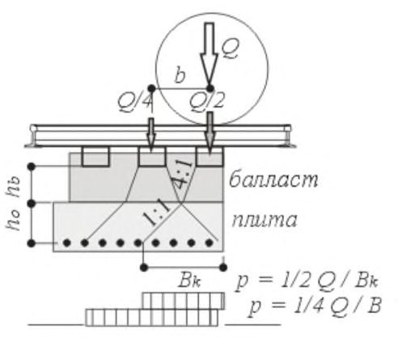
Таблица Г.4
| Б8 | Б8 | Б9 | Б9 | Б10 | Б10 | Б11 | Б11 |
|---|---|---|---|---|---|---|---|
| X i , м | P i , кН | X i , м | P i , кН | X i , м | P i , кН | X i , м | P i , кН |
| 0 | 167 | 0 | 167 | 0 | 167 | 0 | 167 |
| 2,6 | 167 | 2,6 | 167 | 2,6 | 167 | 2,6 | 167 |
| 17,37 | 167 | 17,37 | 167 | 17,37 | 167 | 17,37 | 167 |
| 19,97 | 167 | 19,97 | 167 | 19,97 | 167 | 19,97 | 167 |
| 24,73 | 167 | 24,73 | 167 | 24,73 | 167 | 24,73 | 167 |
| 27,33 | 167 | 27,33 | 167 | 27,33 | 167 | 27,33 | 167 |
| 42,1 | 167 | 42,1 | 167 | 42,1 | 167 | 42,1 | 167 |
| 44,7 | 167 | 44,7 | 167 | 44,7 | 167 | 44,7 | 167 |
| 49,46 | 144 | 49,46 | 167 | 49,46 | 144 | 49,46 | 167 |
| 52,06 | 144 | 52,06 | 167 | 52,06 | 144 | 52,06 | 167 |
| 66,83 | 144 | 66,83 | 167 | 66,83 | 144 | 66,83 | 167 |
| 69,43 | 144 | 69,43 | 167 | 69,43 | 144 | 69,43 | 167 |
| 74,19 | 167 | 74,19 | 167 | 74,19 | 167 | 74,19 | 167 |
| 76,79 | 167 | 76,79 | 167 | 76,79 | 167 | 76,79 | 167 |
| 91,56 | 167 | 91,56 | 167 | 91,56 | 167 | 91,56 | 167 |
| 94,16 | 167 | 94,16 | 167 | 94,16 | 167 | 94,16 | 167 |
| 98,92 | 157 | 98,92 | 157 | 98,92 | 157 | 98,92 | 157 |
| 101,52 | 157 | 101,52 | 157 | 101,52 | 157 | 101,52 | 157 |
| 116,29 | 157 | 116,29 | 157 | 116,29 | 157 | 116,29 | 157 |
| 118,89 | 157 | 118,89 | 157 | 118,89 | 157 | 118,89 | 157 |
| 123,65 | 157 | 123,65 | 157 | 123,65 | 157 | 123,65 | 157 |
| 126,25 | 157 | 126,25 | 157 | 126,25 | 157 | 126,25 | 157 |
| 141,02 | 157 | 141,02 | 157 | 141,02 | 157 | 141,02 | 157 |
| 143,62 | 157 | 143,62 | 157 | 143,62 | 157 | 143,62 | 157 |
| 148,38 | 167 | 148,38 | 167 | 148,38 | 167 | 148,38 | 167 |
| 150,98 | 167 | 150,98 | 167 | 150,98 | 167 | 150,98 | 167 |
| 165,75 | 167 | 165,75 | 167 | 165,75 | 167 | 165,75 | 167 |
| 168,35 | 167 | 168,35 | 167 | 168,35 | 167 | 168,35 | 167 |
| 173,11 | 144 | 173,11 | 167 | 173,11 | 144 | 173,11 | 167 |
| 175,71 | 144 | 175,71 | 167 | 175,71 | 144 | 175,71 | 167 |
СП .1325800.2019
| Б8 | Б8 | Б9 | Б9 | Б10 | Б10 | Б11 | Б11 |
|---|---|---|---|---|---|---|---|
| X i , м | P i , кН | X i , м | P i , кН | X i , м | P i , кН | X i , м | P i , кН |
| 190,48 | 144 | 190,48 | 167 | 190,48 | 144 | 190,48 | 167 |
| 193,08 | 144 | 193,08 | 167 | 193,08 | 144 | 193,08 | 167 |
| 197,84 | 167 | 197,84 | 167 | 197,84 | 167 | 197,84 | 167 |
| 200,44 | 167 | 200,44 | 167 | 200,44 | 167 | 200,44 | 167 |
| 215,21 | 167 | 215,21 | 167 | 215,21 | 167 | 215,21 | 167 |
| 217,81 | 167 | 217,81 | 167 | 217,81 | 167 | 217,81 | 167 |
| 222,57 | 167 | 222,57 | 167 | 222,57 | 167 | 222,57 | 167 |
| 225,17 | 167 | 225,17 | 167 | 225,17 | 167 | 225,17 | 167 |
| 239,94 | 167 | 239,94 | 167 | 239,94 | 167 | 239,94 | 167 |
| 242,54 | 167 | 242,54 | 167 | 242,54 | 167 | 242,54 | 167 |
| 250 | 167 | 250 | 167 | ||||
| 252,6 | 167 | 252,6 | 167 | ||||
| 267,37 | 167 | 267,37 | 167 | ||||
| 269,97 | 167 | 269,97 | 167 | ||||
| 274,73 | 167 | 274,73 | 167 | ||||
| 277,33 | 167 | 277,33 | 167 | ||||
| 292,1 | 167 | 292,1 | 167 | ||||
| 294,7 | 167 | 294,7 | 167 | ||||
| 299,46 | 144 | 299,46 | 167 | ||||
| 302,06 | 144 | 302,06 | 167 | ||||
| 316,83 | 144 | 316,83 | 167 | ||||
| 319,43 | 144 | 319,43 | 167 | ||||
| 324,19 | 167 | 324,19 | 167 | ||||
| 326,79 | 167 | 326,79 | 167 | ||||
| 341,56 | 167 | 341,56 | 167 | ||||
| 344,16 | 167 | 344,16 | 167 | ||||
| 348,92 | 157 | 348,92 | 157 | ||||
| 351,52 | 157 | 351,52 | 157 | ||||
| 366,29 | 157 | 366,29 | 157 | ||||
| 368,89 | 157 | 368,89 | 157 | ||||
| 373,65 | 157 | 373,65 | 157 | ||||
| 376,25 | 157 | 376,25 | 157 | ||||
| 391,02 | 157 | 391,02 | 157 | ||||
| 393,62 | 157 | 393,62 | 157 | ||||
| 398,38 | 167 | 398,38 | 167 | ||||
| 400,98 | 167 | 400,98 | 167 | ||||
| 415,75 | 167 | 415,75 | 167 | ||||
| 418,35 | 167 | 418,35 | 167 | ||||
| 423,11 | 144 | 423,11 | 167 | ||||
| 425,71 | 144 | 425,71 | 167 | ||||
| 440,48 | 144 | 440,48 | 167 | ||||
| 443,08 | 144 | 443,08 | 167 | ||||
| 447,84 | 167 | 447,84 | 167 | ||||
| 450,44 | 167 | 167 | |||||
| 465,21 | 167 | 450,44 465,21 | 167 | ||||
| 467,81 | 167 | 467,81 | 167 | ||||
| 472,57 | 167 | 472,57 | 167 | ||||
| 475,17 | 167 | 475,17 | 167 167 | ||||
| 489,94 492,54 | 167 167 | 489,94 492,54 | 167 |
СП .1325800.2019
Г.5 Параметры поездов Б8-Б11
Таблица Г.5
| Параметры | Б8 | Б9 | Б10 | Б11 |
|---|---|---|---|---|
| Вагонов, шт. | 10 | 10 | 20 | 20 |
| Локомотивов, шт. | 2 | 2 | 4 | 4 |
| Осей в вагоне, шт. | 4 | 4 | 4 | 4 |
| Длина вагона, м | 24,73 | 24,73 | 24,73 | 24,73 |
| Длина поезда, м | 250,0 | 250,0 | 500,0 | 500,0 |
| Вес поезда, кН | 6416 | 6600 | 12832 | 13200 |
| Осевая нагрузка: - максимальная, кН | 167 | 167 | 167 | 167 |
| - средняя, кН/м | 25,66 | 26,40 | 25,66 | 26,40 |
Приложение Д
Эквивалентные нагрузки высокоскоростных поездов
Поезда А1-А10, при положении вершины линии влияния α = 0,5
Д.1 Поезда А1-А10 Таблица Д.1 -
| Длина участка λ, м | Интенсивность эквивалентной нагрузки v , кН/м пути | Интенсивность эквивалентной нагрузки v , кН/м пути | Интенсивность эквивалентной нагрузки v , кН/м пути | Интенсивность эквивалентной нагрузки v , кН/м пути | Интенсивность эквивалентной нагрузки v , кН/м пути | Интенсивность эквивалентной нагрузки v , кН/м пути | Интенсивность эквивалентной нагрузки v , кН/м пути | Интенсивность эквивалентной нагрузки v , кН/м пути | Интенсивность эквивалентной нагрузки v , кН/м пути | Интенсивность эквивалентной нагрузки v , кН/м пути | Интенсивность эквивалентной нагрузки v , кН/м пути |
|---|---|---|---|---|---|---|---|---|---|---|---|
| Длина участка λ, м | A1 | A2 | A3 | A4 | A5 | A6 | A7 | A8 | A9 | A10 | Огиба- ющая |
| 1 | 340,00 | 400,00 | 360,00 | 380,00 | 340,00 | 360,00 | 380,00 | 380,00 | 420,00 | 420,00 | 420,00 |
| 2 | 170,00 | 200,00 | 180,00 | 190,00 | 170,00 | 180,00 | 190,00 | 190,00 | 210,00 | 210,00 | 210,00 |
| 5 | 81,60 | 80,00 | 86,40 | 76,00 | 81,60 | 86,40 | 91,20 | 76,00 | 100,80 | 100,80 | 100,80 |
| 10 | 64,43 | 67,80 | 68,22 | 64,41 | 64,43 | 68,22 | 72,01 | 68,21 | 79,59 | 79,59 | 79,59 |
| 20 | 47,52 | 52,90 | 50,31 | 51,21 | 47,52 | 50,31 | 53,11 | 52,16 | 58,70 | 58,70 | 58,70 |
| 30 | 36,98 | 42,18 | 39,16 | 40,49 | 36,98 | 39,16 | 41,34 | 40,91 | 45,69 | 45,69 | 45,69 |
| 40 | 33,23 | 38,22 | 34,63 | 36,08 | 32,70 | 34,63 | 36,55 | 36,31 | 40,40 | 40,40 | 40,40 |
| 50 | 31,94 | 36,46 | 32,67 | 33,57 | 29,76 | 31,16 | 32,59 | 32,36 | 35,94 | 35,94 | 36,46 |
| 60 | 29,74 | 34,21 | 30,69 | 31,76 | 28,22 | 29,49 | 30,70 | 30,17 | 33,00 | 32,53 | 34,21 |
| 70 | 27,64 | 31,74 | 28,42 | 29,54 | 26,29 | 27,54 | 28,76 | 28,37 | 31,10 | 30,76 | 31,74 |
| 80 | 26,45 | 30,18 | 26,66 | 27,51 | 24,38 | 25,59 | 26,77 | 26,47 | 29,06 | 28,80 | 30,18 |
| 90 | 25,10 | 28,79 | 25,51 | 26,27 | 23,08 | 23,93 | 24,90 | 24,67 | 27,11 | 26,90 | 28,79 |
| 100 | 23,78 | 27,32 | 24,26 | 25,08 | 22,10 | 22,96 | 23,78 | 23,29 | 25,38 | 25,15 | 27,32 |
| 110 | 23,01 | 26,31 | 23,03 | 23,86 | 21,07 | 21,95 | 22,80 | 22,39 | 24,36 | 23,95 | 26,31 |
Таблица Д.2 Поезда А1-А10, при положении вершины линии влияния α = 0,0
| Длина | Интенсивность эквивалентной нагрузки v , кН/м пути | Интенсивность эквивалентной нагрузки v , кН/м пути | Интенсивность эквивалентной нагрузки v , кН/м пути | Интенсивность эквивалентной нагрузки v , кН/м пути | Интенсивность эквивалентной нагрузки v , кН/м пути | Интенсивность эквивалентной нагрузки v , кН/м пути | Интенсивность эквивалентной нагрузки v , кН/м пути | Интенсивность эквивалентной нагрузки v , кН/м пути | Интенсивность эквивалентной нагрузки v , кН/м пути | Интенсивность эквивалентной нагрузки v , кН/м пути | Интенсивность эквивалентной нагрузки v , кН/м пути |
|---|---|---|---|---|---|---|---|---|---|---|---|
| участка λ, м | A1 | A2 | A3 | A4 | A5 | A6 | A7 | A8 | A9 | A10 | Огиба- ющая |
| 1 | 340,00 | 400,00 | 360,00 | 380,00 | 340,00 | 360,00 | 380,00 | 380,00 | 420,00 | 420,00 | 420,00 |
| 2 | 170,00 | 200,00 | 180,00 | 190,00 | 170,00 | 180,00 | 190,00 | 190,00 | 210,00 | 210,00 | 210,00 |
| 5 | 108,80 | 112,00 | 115,20 | 106,40 | 108,80 | 115,20 | 121,60 | 114,00 | 134,40 | 134,40 | 134,40 |
| 10 | 81,43 | 81,90 | 86,22 | 79,61 | 81,43 | 86,22 | 91,01 | 85,31 | 100,59 | 100,59 | 100,59 |
| 20 | 54,76 | 60,45 | 57,98 | 57,90 | 54,76 | 57,98 | 61,20 | 58,38 | 67,65 | 67,65 | 67,65 |
| 30 | 44,97 | 49,58 | 47,62 | 49,36 | 44,97 | 47,62 | 50,27 | 49,15 | 55,56 | 55,56 | 55,56 |
| 40 | 38,65 | 42,85 | 40,93 | 41,34 | 38,65 | 40,93 | 43,20 | 41,22 | 47,75 | 47,75 | 47,75 |
| 50 | 34,41 | 38,96 | 35,07 | 36,24 | 32,58 | 34,42 | 36,34 | 35,50 | 40,16 | 40,16 | 40,16 |
| 60 | 32,10 | 36,41 | 32,79 | 34,11 | 30,36 | 31,94 | 33,51 | 32,84 | 36,57 | 36,33 | 36,57 |
| 70 | 30,52 | 35,30 | 31,44 | 32,64 | 28,86 | 30,12 | 31,32 | 30,49 | 33,74 | 33,55 | 35,30 |
| 80 | 29,30 | 33,44 | 29,67 | 30,65 | 27,28 | 28,55 | 29,78 | 29,24 | 32,13 | 31,73 | 33,44 |
| 90 | 28,19 | 32,05 | 28,51 | 29,49 | 25,92 | 26,77 | 28,22 | 27,56 | 30,57 | 30,26 | 32,05 |
| 100 | 27,52 | 31,38 | 27,70 | 28,44 | 25,28 | 26,01 | 27,34 | 26,52 | 29,21 | 28,75 | 31,38 |
| 110 | 26,74 | 30,56 | 26,85 | 27,90 | 23,95 | 25,33 | 26,37 | 25,69 | 28,31 | 27,89 | 30,56 |
СП .1325800.2019
Д.2 Поезда Б1-Б7
Таблица Д.3 Поезда Б1-Б7, при положении вершины линии влияния α = 0,5
| Длина участка λ, м | Интенсивность эквивалентной нагрузки v , кН/м пути | Интенсивность эквивалентной нагрузки v , кН/м пути | Интенсивность эквивалентной нагрузки v , кН/м пути | Интенсивность эквивалентной нагрузки v , кН/м пути | Интенсивность эквивалентной нагрузки v , кН/м пути | Интенсивность эквивалентной нагрузки v , кН/м пути | Интенсивность эквивалентной нагрузки v , кН/м пути | Интенсивность эквивалентной нагрузки v , кН/м пути |
|---|---|---|---|---|---|---|---|---|
| Длина участка λ, м | Б1 | Б2 | Б3 | Б4 | Б5 | Б6 | Б7 | Огибающая |
| 1 | 390,00 | 374,00 | 340,00 | 344,20 | 340,00 | 340,00 | 340,00 | 390,00 |
| 2 | 195,00 | 187,00 | 170,00 | 172,10 | 170,00 | 170,00 | 170,00 | 195,00 |
| 5 | 78,00 | 74,80 | 68,00 | 68,84 | 68,00 | 68,00 | 68,00 | 78,00 |
| 10 | 55,27 | 55,24 | 59,33 | 56,85 | 49,98 | 55,08 | 58,85 | 59,33 |
| 20 | 41,89 | 41,63 | 46,67 | 42,76 | 37,20 | 44,54 | 45,93 | 46,67 |
| 30 | 38,01 | 36,43 | 36,61 | 33,20 | 33,91 | 34,91 | 35,97 | 38,01 |
| 40 | 33,93 | 32,84 | 32,49 | 30,54 | 32,09 | 29,54 | 32,06 | 33,93 |
| 50 | 29,75 | 28,92 | 29,78 | 30,11 | 31,31 | 28,70 | 30,41 | 31,31 |
| 60 | 26,90 | 26,49 | 28,24 | 30,28 | 30,95 | 29,43 | 30,64 | 30,95 |
| 70 | 25,23 | 25,06 | 26,30 | 29,96 | 30,37 | 29,84 | 30,68 | 30,68 |
| 80 | 23,86 | 23,77 | 24,66 | 28,97 | 29,40 | 29,22 | 29,88 | 29,88 |
| 90 | 22,44 | 22,41 | 23,65 | 28,22 | 28,58 | 28,59 | 29,25 | 29,25 |
| 100 | 21,17 | 21,37 | 22,88 | 27,63 | 27,57 | 28,55 | 28,74 | 28,74 |
| 110 | 20,43 | 20,79 | 22,28 | 27,04 | 26,74 | 28,81 | 28,20 | 28,81 |
Таблица Д.4 Поезда Б1-Б7, при положении вершины линии влияния α = 0,0
| Длина участка λ, м | Интенсивность эквивалентной нагрузки v , кН/м пути | Интенсивность эквивалентной нагрузки v , кН/м пути | Интенсивность эквивалентной нагрузки v , кН/м пути | Интенсивность эквивалентной нагрузки v , кН/м пути | Интенсивность эквивалентной нагрузки v , кН/м пути | Интенсивность эквивалентной нагрузки v , кН/м пути | Интенсивность эквивалентной нагрузки v , кН/м пути | Интенсивность эквивалентной нагрузки v , кН/м пути |
|---|---|---|---|---|---|---|---|---|
| Длина участка λ, м | Б1 | Б2 | Б3 | Б4 | Б5 | Б6 | Б7 | Огибающая |
| 1 | 390,00 | 374,00 | 340,00 | 344,20 | 340,00 | 340,00 | 340,00 | 390,00 |
| 2 | 195,00 | 187,00 | 170,00 | 172,10 | 170,00 | 170,00 | 170,00 | 195,00 |
| 5 | 109,20 | 104,72 | 95,20 | 96,38 | 97,24 | 97,92 | 95,20 | 109,20 |
| 10 | 71,12 | 69,82 | 72,93 | 69,72 | 61,78 | 69,36 | 72,31 | 72,93 |
| 20 | 50,19 | 47,91 | 52,23 | 47,66 | 45,53 | 51,34 | 51,38 | 52,23 |
| 30 | 44,17 | 42,25 | 44,54 | 39,81 | 39,18 | 41,44 | 43,65 | 44,54 |
| 40 | 37,37 | 36,36 | 36,88 | 37,71 | 36,58 | 39,36 | 39,46 | 39,46 |
| 50 | 33,75 | 33,53 | 32,36 | 35,39 | 35,56 | 35,99 | 37,65 | 37,65 |
| 60 | 31,94 | 31,44 | 30,58 | 35,03 | 34,49 | 35,36 | 37,12 | 37,12 |
| 70 | 29,63 | 29,48 | 29,36 | 33,11 | 33,00 | 34,31 | 35,08 | 35,08 |
| 80 | 28,17 | 28,43 | 27,62 | 32,00 | 31,31 | 33,44 | 33,93 | 33,93 |
| 90 | 27,07 | 27,27 | 27,11 | 30,98 | 30,07 | 32,94 | 32,84 | 32,94 |
| 100 | 26,08 | 26,42 | 26,03 | 30,03 | 28,94 | 32,31 | 31,79 | 32,31 |
| 110 | 25,45 | 25,79 | 25,44 | 29,43 | 27,63 | 32,09 | 31,12 | 32,09 |
Д.3 Поезда Б8-Б11 Таблица Д.5 Поезда Б8 -Б11, при положении вершины линии влияния α = 0,5
| Длина участка | Интенсивность эквивалентной нагрузки v , кН/м пути | Интенсивность эквивалентной нагрузки v , кН/м пути | Интенсивность эквивалентной нагрузки v , кН/м пути | Интенсивность эквивалентной нагрузки v , кН/м пути | Интенсивность эквивалентной нагрузки v , кН/м пути |
|---|---|---|---|---|---|
| λ, м | Б8 | Б9 | Б10 | Б11 | Огибающая |
| 1 | 334,00 | 334,00 | 334,00 | 334,00 | 334,00 |
| 2 | 167,00 | 167,00 | 167,00 | 167,00 | 167,00 |
| 5 | 66,80 | 66,80 | 66,80 | 66,80 | 66,80 |
| 10 | 51,04 | 51,04 | 51,04 | 51,04 | 51,04 |
| 20 | 42,22 | 42,22 | 42,22 | 42,22 | 42,22 |
| 30 | 33,61 | 33,61 | 33,61 | 33,61 | 33,61 |
| 40 | 28,36 | 28,36 | 28,36 | 28,36 | 28,36 |
| 50 | 27,07 | 27,08 | 27,07 | 27,08 | 27,08 |
| 60 | 27,45 | 27,75 | 27,45 | 27,75 | 27,75 |
| 70 | 27,21 | 28,28 | 27,39 | 28,28 | 28,28 |
| 80 | 26,77 | 27,91 | 27,09 | 27,91 | 27,91 |
| 90 | 26,06 | 27,27 | 26,35 | 27,27 | 27,27 |
| 100 | 25,84 | 27,04 | 25,99 | 27,04 | 27,04 |
| 110 | 26,05 | 27,18 | 26,05 | 27,18 | 27,18 |
Таблица Д.6 Поезда Б8-Б11, при положении вершины линии влияния α = 0,0
| Длина участка | Интенсивность эквивалентной нагрузки v , кН/м пути | Интенсивность эквивалентной нагрузки v , кН/м пути | Интенсивность эквивалентной нагрузки v , кН/м пути | Интенсивность эквивалентной нагрузки v , кН/м пути | Интенсивность эквивалентной нагрузки v , кН/м пути |
|---|---|---|---|---|---|
| λ, м | Б8 | Б9 | Б10 | Б11 | Огибающая |
| 1 | 334,00 | 334,00 | 334,00 | 334,00 | 334,00 |
| 2 | 167,00 | 167,00 | 167,00 | 167,00 | 167,00 |
| 5 | 94,86 | 94,86 | 94,86 | 94,86 | 94,86 |
| 10 | 66,53 | 66,53 | 66,53 | 66,53 | 66,53 |
| 20 | 50,03 | 50,03 | 50,03 | 50,03 | 50,03 |
| 30 | 39,78 | 39,78 | 39,78 | 39,78 | 39,78 |
| 40 | 37,62 | 37,77 | 37,62 | 37,77 | 37,77 |
| 50 | 34,64 | 34,93 | 34,64 | 34,93 | 34,93 |
| 60 | 32,93 | 33,52 | 32,93 | 33,52 | 33,52 |
| 70 | 32,08 | 32,89 | 32,08 | 32,89 | 32,89 |
| 80 | 30,65 | 31,54 | 30,65 | 31,54 | 31,54 |
| 90 | 30,63 | 31,58 | 30,63 | 31,58 | 31,58 |
| 100 | 29,98 | 30,93 | 29,98 | 30,93 | 30,93 |
| 110 | 29,63 | 30,57 | 29,63 | 30,57 | 30,57 |
СП .1325800.2019
Д.4 Огибающая для высокоскоростных поездов Таблица Д.7 Огибающая для всех высокоскоростных поездов при α = 0,5 и α = 0,0 (рисунок Д.1)
| Длина участка λ, | Интенсивность эквивалентной нагрузки v ВСП , кН/м пути | Интенсивность эквивалентной нагрузки v ВСП , кН/м пути |
|---|---|---|
| м | α = 0,5 | α = 0,0 |
| 1 | 420,00 | 420,00 |
| 2 | 210,00 | 210,00 |
| 5 | 100,80 | 134,40 |
| 10 | 79,59 | 100,59 |
| 20 | 58,70 | 67,65 |
| 30 | 45,69 | 55,56 |
| 40 | 40,40 | 47,75 |
| 50 | 36,46 | 40,16 |
| 60 | 34,21 | 37,12 |
| 70 | 31,74 | 35,30 |
| 80 | 30,18 | 33,93 |
| 90 | 29,25 | 32,94 |
| 100 | 28,74 | 32,31 |
| 110 | 28,81 | 32,09 |
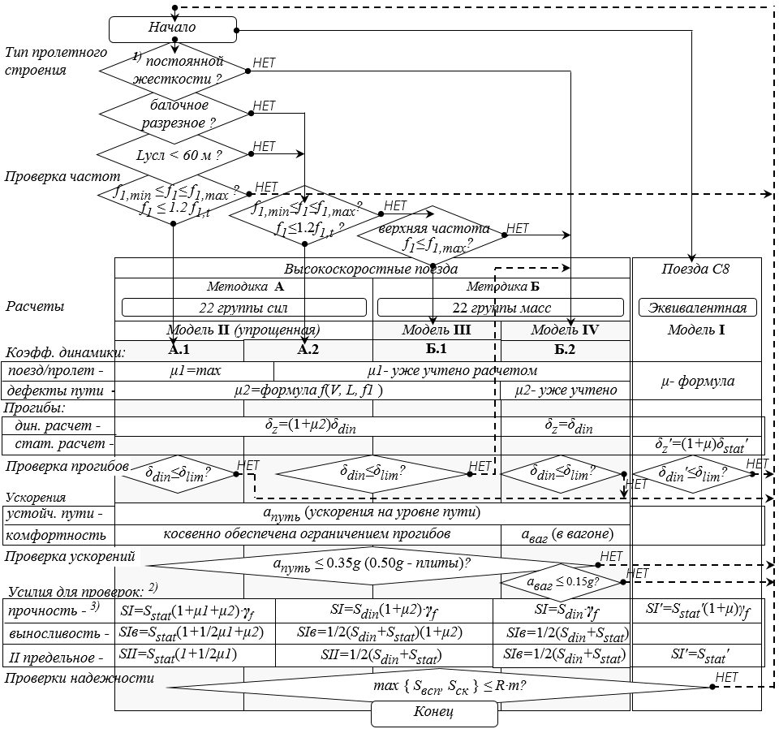
Таблица Е.1
| Длина участка λ, м | Интенсивность эквивалентной СК (К = 1) | Интенсивность эквивалентной СК (К = 1) | нагрузки v , кН/м пути εС8 (К = 8) 1) | нагрузки v , кН/м пути εС8 (К = 8) 1) |
|---|---|---|---|---|
| Длина участка λ, м | положение вершины | положение вершины | линии влияния | линии влияния |
| Длина участка λ, м | α = 0 | α = 0,5 | α = 0 | α = 0,5 |
| 1 | 49,03 | 49,03 | 392,24 | 392,24 |
| 1,5 | 39,15 | 34,25 | 313,20 | 274,00 |
| 2 | 30,55 | 26,73 | 244,40 | 213,84 |
| 3 | 24,16 | 21,14 | 193,28 | 169,12 |
| 4 | 21,69 | 18,99 | 173,52 | 151,92 |
| 5 | 20,37 | 17,82 | 162,96 | 142,56 |
| 6 | 19,50 | 17,06 | 151,32 | 132,39 |
| 7 | 18,84 | 16,48 | 141,68 | 123,93 |
| 8 | 18,32 | 16,02 | 133,37 | 116,63 |
| 9 | 17,87 | 15,63 | 125,80 | 110,04 |
| 10 | 17,47 | 15,28 | 118,80 | 103,90 |
| 12 | 16,78 | 14,68 | 114,10 | 99,82 |
| 14 | 16,19 | 14,16 | 110,09 | 96,29 |
| 16 | 15,66 | 13,71 | 106,49 | 93,23 |
| 18 | 15,19 | 13,30 | 103,29 | 90,44 |
| 20 | 14,76 | 12,92 | 100,37 | 87,86 |
| 25 | 13,85 | 12,12 | 94,18 | 82,42 |
| 30 | 13,10 | 11,46 | 92,22 | 80,68 |
| 35 | 12,50 | 10,94 | 91,00 | 79,64 |
| 40 | 12,01 | 10,51 | 90,32 | 79,04 |
| 45 | 11,61 | 10,16 | 90,09 | 78,84 |
| 50 | 11,29 | 9,88 | 90,32 | 79,00 |
| 60 | 10,80 | 9,81 | 86,40 | 78,46 |
| 70 | 10,47 | 9,81 | 83,76 | 78,46 |
| 80 | 10,26 | 9,81 | 82,08 | 78,46 |
| 90 | 10,10 | 9,81 | 80,80 | 78,46 |
| 100 | 10,00 | 9,81 | 80,00 | 78,46 |
| 110 | 9,94 | 9,81 | 79,55 | 78,46 |
| 120 | 9,90 | 9,81 | 79,16 | 78,46 |
| 130 | 9,87 | 9,81 | 78,92 | 78,46 |
| 140 | 9,85 | 9,81 | 78,77 | 78,46 |
| 150 и более | 9,81 | 9,81 | 78,46 | 78,46 |
Примечания
1 Эквивалентные нагрузки СК, кН/м пути, при значениях параметров 1,5 ≤ λ ≤ 50 м (α = 0 и α = 0,5) и λ > 50 м (α = 0) получены по формуле
где е - основание натурального логарифма.
- 2 Для промежуточных значений длин загружения λ и промежуточных положений вершин линий влияния α = a /λ ≤ 0,5 величину нагрузки v следует определять по интерполяции.
- 3 Для определения массы поезда на мосту используют эквивалентную нагрузку для α = 0,5.
Приложение Е
Эквивалентные нагрузки СК
ЖПриложение Ж. Определение коэффициентов динамики
Ж.1 При расчетах искусственных сооружений на сочетания с высокоскоростной нагрузкой коэффициент динамики к вертикальной статической нагрузке от подвижного состава представляется в виде:
где μ1 - отражает динамическое взаимодействие поезд - пролетное строение; μ2 - учитывает динамические явления, вызванные дефектами пути и колес.
Коэффициент динамики следует определять при загружении поездом только одного пути. В случаях, когда вертикальная железнодорожная нагрузка учитывается с двух путей, следует применять коэффициенты s 1 (таблица 6.25).
Ж.2 В зависимости от рассчитываемого элемента конструкции и типа расчета коэффициенты динамики к вертикальным нагрузкам от высокоскоростных поездов и число загружаемых путей следует принимать согласно таблице Ж.1.
Таблица Ж.1 Коэффициенты динамики и число загружаемых путей при учете вертикальных нагрузок от высокоскоростных поездов
| Предельное состояние первой группы | Предельное состояние первой группы | Предель- ные | |
|---|---|---|---|
| Тип конструкции | Прочность и устойчивость положения | Выносливость | состояния второй группы |
| Коэффициенты динамики | Коэффициенты динамики | Коэффициенты динамики | Коэффициенты динамики |
| Пролетные строения, опорные части, оголовки опор 1) | 1 + μ = 1 + μ 1 + μ 2 ≥ 1,2 | 1 + μ = 1 + 1/2μ 1 + μ 2 ≥ 1,125 | Таблица 6.6 |
| Опоры 1), 2) | 1 + μ = 1 + 1/2 μ 1 ≥ 1,075 | 1 + μ = 1,0 | Таблица 6.6 |
| Основания и фундаменты | |||
| Звенья труб 3) | 1 + μ = 1,0 | 1 + μ = 1,0 | 1 + μ = 1,0 |
| Число загружаемых путей (учитывается коэффициентом s 1 ) | Число загружаемых путей (учитывается коэффициентом s 1 ) | Число загружаемых путей (учитывается коэффициентом s 1 ) | Число загружаемых путей (учитывается коэффициентом s 1 ) |
| Все типы конструкций | 2 | 1 | Таблица 6.6 |
При расчетах на аварийные, особые и строительные сочетания коэффициенты динамики не учитывают.
«Разгружающая» динамика
Ж.3 В случаях, когда необходимо учитывать минимальное значение (или значение противоположного знака) действующего фактора (например, при вычислении минимальных моментов в предварительно напряженных железобетонных пролетных строениях, при расчете выносливости), следует рассматривать ситуации, когда динамические эффекты носят «разгружающий» характер 1) . Значение действующего фактора принимают равным минимальному значению из двух расчетных случаев: при проходе поезда и после него (см. рисунок Ж.1). При этом слагаемое μ2 учитывают только в первом случае. поезд покинул пролетное строение
Sext1
- время Т прогиб δ Sstat "максимальная" динамика + + Рисунок Ж.1 - Условный график изменения прогиба или изгибающего момента при проходе i -го поезда по балочному пролетному строению
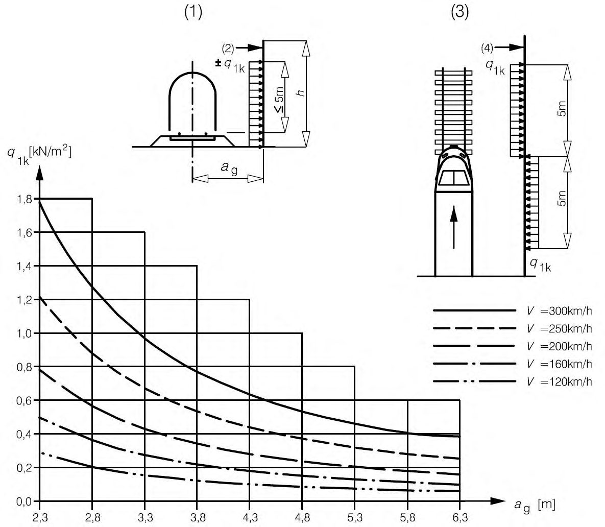
Расчеты по методике А.1
Ж.4 В случае выполнения динамического анализа по методике А.1 (см. 6.3.10) для всех сечений 2) пролетного строения учет динамических эффектов, вызванных воздействием поезда на конструкцию, следует учитывать умножением результатов статического расчета на коэффициент динамики μ1 (совместно с μ2 - см. ниже), который определяется по формуле (Ж.2) как максимальное из значений, вычисленных для каждого расчетного поезда (см. приложение Г), указанного в задании на проектирование:
где δ ext,i - максимальный динамический отклик (прогиб) при прохождении i -го поезда во всем диапазоне скоростей; δ stat,i - максимальный статический прогиб при прохождении i -го поезда.
При этом допускается заменять в формуле (Ж.2) δ stat,i на экстремальное значение статического прогиба при загружении группой поездов (в том числе эквивалентными нагрузками по таблицам приложения Д).
Расчеты по методикам А.2, Б.1 и Б.2
Ж.5 При расчетах по методикам А.2, Б.1 и Б.2 (см. 6.3.10) в зависимости от случая положения поезда относительно сооружения (см. Ж.3) следует учитывать динамические эффекты от вертикальных нагрузок высокоскоростных поездов в соответствии с таблицей Ж.2.
1 ) При расчетах по методике А.1 оценить «разгружающий» характер динамики поезда по Ж.3 невозможно (подробнее см. в разделе 6).
2) Область применения методики А.1 ограничивается вычислениями прогибов и изгибающих моментов в разрезных балках (подробнее см. в разделе 6).
Sext
Таблица Ж.2 Учет динамических эффектов при вычислении фактора напряженно-деформированного состояния в сечении элемента от вертикальных нагрузок высокоскоростных поездов
Методики расчета
Случай 1. Динамика при проходе поезда по сооружению
Случай 2. Колебания после прохода поезда
«Максимальная» динамика 1)
«Разгружающая» динамика 2)
Значения действующего фактора от ВСП с учетом динамики Sdin :
- 1) В случаях, когда динамический эффект учитывается полностью:
А.2, Б ( ) stat,l,k din S S + + = 2 1 1
( ) 1 1 1 ,k stat,l din S S + + = - 2 1 1
ext,s,i,v,p din S S pm plv p vm v n i s = = = = = - 1 1 4 1 min 2
- 2) В случаях, когда требуется учесть долю динамического эффекта, например 1/2μ1:
А.2, Б
( ) stat,l,k din S S + + = 2 1 1 2 1 7)
( ) 1 1 1 2 ,k stat,l din S S + + = - 1 1 2 1 7)
ext,s,i,v,p din2 S pm plv p vm v n i s S = = = = = - 1 1 4 1 min 2 1
Коэффициенты динамики μ1 и μ2:
- А.2, Б
ext,s,i,v,p plv p vm v n i s max S S 1 1 1 4 1 = = = = = max 4)
ext,s,i,v,p plv p vm v n i s min S S 1 1 1 4 1 = = = = - = min 1 4) μ1 и μ2 не применяются
- A.2, Б.1 1 - = stat,l,k max S S 1 ≥ 0,15 μ 2 ≥ 0,05 (по Ж.7)
1 - = - 1 1 1 1 ,k stat,l min S S ≥ 0,15 5) μ 2 ≥ 0,05 (по Ж.7) 6)
- Б.2 3) stat,l,k ≥ 0,20
1 - + = max S S 2 1
1 - = + - 1 1 1 2 1 ,k stat,l min S S ≥ 0,20 5)
1) Экстремальное (максимальное или минимальное) значение в элементе или сечении конструкции (в формулах « max » соответствует положительному значению).
2) Значение фактора, имеющее знак, противоположный знаку экстремального значения (« min » - для отрицательного значения).
3) Также в случаях, когда μ2 не учитывают.
4) При поиске экстремального значения необходимо определить: случай массы и жесткости l и поезд k , при которых получен этот экстремум ( l 1 , k 1 - для «разгружения»).
5) Минимальное значение приведено для коэффициентов динамики, имеющих положительный знак, для отрицательных - ≤ -1,15 или - ≤ -1,20.
6) Знак μ2 принимается таким же, как знак μ1.
7) При расчетах по методике Б.2 (см. 6.3.10) при μ1 + μ2 > 0 принимают (1 + 1/2(μ1 + μ2 - 0,05) + 0,05), при μ1 + μ2 < 0 - (1 + 1/2(μ1 + μ2 + 0,05) - 0,05).
Примечание - В настоящей таблице применены следующие обозначения:
Sext,s,i,v,p - полученные в результате динамического расчета экстремальные значения (максимальные или минимальные) от: s - случая массы и жесткости, i -го поезда, v -й скорости, при p -м положении поезда на сооружении;
- Sstat,l,k , Sstat,l 1 ,k 1 - максимальные и минимальные значения силового фактора в элементе при проезде k -го поезда по сооружению на малой скорости (статические значения) для случая массы и жесткости l ( l 1 , k 1 - для «разгружения»), при котором получено экстремальное значение коэффициента динамики μ1 или μ1 + μ2;
- s , 4 - вариант расчетного случая максимальных и минимальных масс и жесткостей (всего 4);
- i, n - вариант высокоскоростного поезда и число рассматриваемых поездов;
- v, vm - вариант скорости высокоскоростного поезда и число рассматриваемых скоростей; p, plv, pm - вариант положения высокоскоростного поезда, число положений на сооружении и максимальное число положений.
Ж.6 При расчетах по методикам А.2, Б.1 и Б.2 (см. 6.3.10) для каждого сечения и фактора напряженно-деформированного состояния следует учитывать динамические эффекты через пиковые значения соответствующих факторов (частично или полностью). В этом случае при использовании методик А и Б.1 (см. 6.3.10) первое слагаемое, а при Б.2 (см. 6.3.10) - оба слагаемых коэффициента динамики [см. формулу (Ж.1)], могут быть вычислены как частное деления экстремального значения фактора, полученного при динамическом расчете, на значение из статического расчета.
Значения статических составляющих Sstat,l,k и Sstat,l 1 ,k 1 в формулах для коэффициентов динамики таблицы Ж.2, а также значения динамических и статических факторов, соответствующих 1) искомому экстремальному фактору, следует определять для того же случая массы и жесткости и того же поезда i 2) , при которых наблюдается экстремальная динамика Smax или S -min 1 (для статически определимых схем - не зависит от случая масс и жесткостей).
В практических расчетах в случаях, когда определение коэффициента μ1 не требуется 3) , допускается использовать альтернативную форму записи формул для действующего фактора от ВСП с учетом динамики Sdin , Sdin 1, S -din , S -din 1:
В случаях, когда вычисления значений соответствующих факторов в сечении не требуется (например, при поиске экстремальных значений моментов и поперечных сил в разрезных балках), допускается в формулах для коэффициентов динамики таблицы Ж.2 заменять Sstat,l,k и Sstat,l 1 ,k 1 на Sstat ,max и Sstat , min 1, вычисленные как экстремальные для сечения от всех поездов:
Ж.7 При выполнении расчетов по методикам А.1, А.2 и Б.1 (см. 6.3.10) второе слагаемое коэффициента динамики μ2 следует вычислять по формуле
где a - скоростной коэффициент, принимаемый равным:
V - расчетная скорость, м/с (см. 6.3.5);
L - расчетная длина пролетного строения, м, согласно приложению В; e - основание натурального логарифма; f 1 - частота колебаний пролетного строения, Гц, по первой форме (для балочных разрезных пролетных строений - по формулам (Б.2) и (Б.3) приложения Б).
1) Например, статические и динамические значения продольных и поперечных сил в сечении при поиске экстремального момента.
2) При поиске соответствующих динамических факторов - также положения i -го поезда и соответствующей скорости v .
3) Или Sstat,l,k может принимать нулевые значения.
Ж.8 Пределом применимости формулы (Ж.3) для вычисления μ2 является верхний предел частоты f 1. Если ограничение по частоте f 1 не выполняется, то для обоснования конструктивных решений должен быть выполнен динамический расчет по методике Б.2 (см. 6.3.10) с учетом дефектов пути и колес (таблица Ж.3).
Таблица Ж.3 Значение коэффициента μ2 при расчетной скорости 420 км/ч (на 20 % выше 350 км/ч)
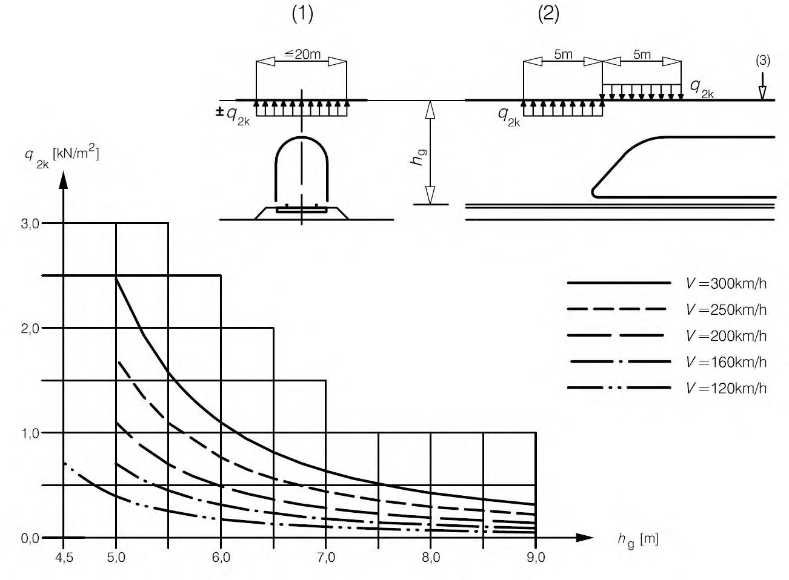
| Длина пролета L , м | Верхний предел частоты f 1, max , Гц | Коэффи- циент динамики μ 2 , Гц |
|---|---|---|
| 10 | 16,9 | 0,641 |
| 15 | 12,5 | 0,442 |
| 18 | 10,9 | 0,345 |
| 21 | 9,7 | 0,264 |
| 24 | 8,8 | 0,196 |
| 33 | 6,9 | 0,061 |
| 44 | 5,6 | 0,050 |
| ≥ 55 | 4,7 | 0,050 |
Коэффициенты динамики от нагрузки СК
Ж.9 При выполнении расчетов на нагрузки поездов обычных скоростей движения (СК) динамические воздействия поездов учитываются коэффициентом динамики 1 + μ в соответствии с положениями СП 35.13330.
Ж.10 При выполнении расчетов на нагрузки СК коэффициенты динамики следует принимать согласно таблице Ж.4.
Таблица Ж.4 Коэффициенты динамики для нагрузок СК
| Тип конструкции | Тип конструкции | Значение коэффициента динамики |
|---|---|---|
| Неразрез- ные фермы | + + = + 30 14 1 1 ≥ 1,15 | |
| Все другие | + + = + 30 18 1 1 ≥ 1,15 | |
| Арки сквозные | + + + = + f l 0,4 1 100 14 1 1 ≥ 1,15 3) | |
| Все другие | + + = + 20 18 1 1 ≥ 1,15 | |
| Опоры 1) | Опоры 1) | 1+μ = 1,0 |
| Основания, фундаменты всех типов | Основания, фундаменты всех типов | Основания, фундаменты всех типов |
| Звенья труб 2) | Звенья труб 2) | Звенья труб 2) |
При определении λ (длины загружения элемента) в формулах таблицы Ж.4 следует учитывать длину той части линии влияния, которая определяет участие элемента в общей работе.
В сложных случаях длину загружения допускается определять, как условную длину основного участка линии влияния (рисунок Ж.2). В этом случае λ принимается как длина основания треугольника с площадью, равной площади участка, и высотой, равной максимальной ординате этого участка, по формуле
где A - площадь участка; y - ордината вершины участка.
Рисунок Ж.2 - Длина загружения для определения коэффициента динамики Коэффициенты динамики в других случаях
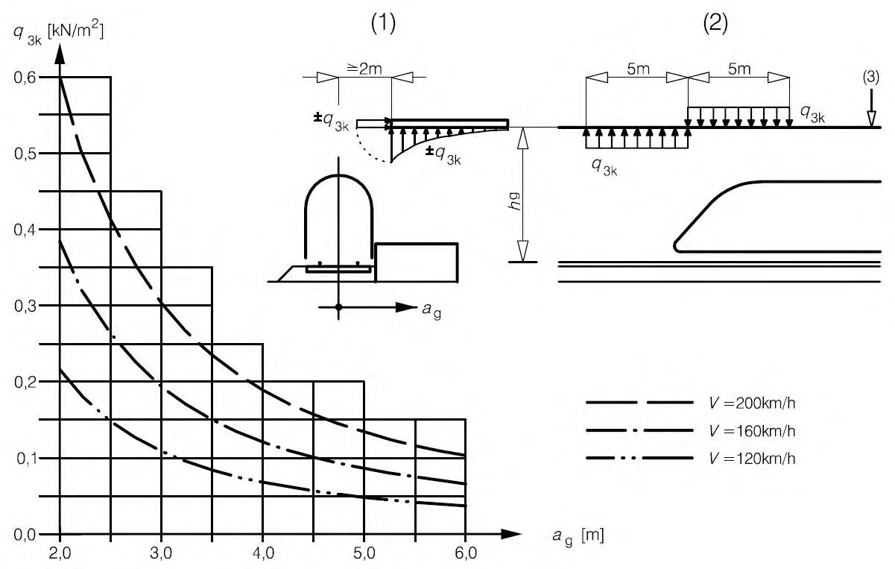
Ж.11 Коэффициент динамики к временным горизонтальным нагрузкам и давлению грунта на опоры от подвижного состава ВСП и СК принимают равным:
Ж.12 Коэффициент динамики к нагрузкам на служебных проходах принимают равным:
ИПриложение И. Дополнительное демпфирование для пролетных строений длиной до 30 м
Для балочных разрезных пролетных строений длиной менее 30 м полное расчетное демпфирование, %, подлежащее учету, определяется как сумма:
где ζ- нижнее предельное значение коэффициента демпфирования, %, согласно 6.3.7; Δζ - дополнительное демпфирование, % (рисунок И.1), определяемое по формуле
Таблица И.1 Дополнительное демпфирование Δζ, %, как функция длины пролета L , м
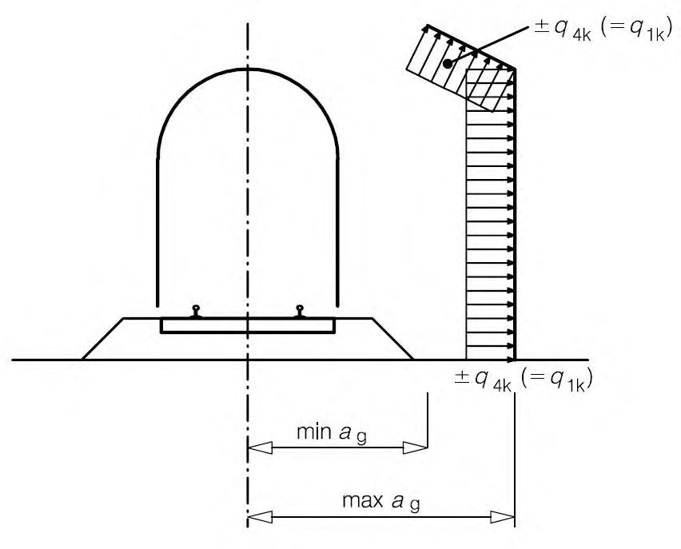
КПриложение К. Распределение нагрузок при расчетах плит проезда
К.1 При расчетах местных воздействий от осей железнодорожной нагрузки следует считать, что давление от оси распределяется на три шпалы. При этом на среднюю шпалу (под осью) приходится 1/2 часть давления, а на две соседние - по 1/4 части. Распределение давления в балласте происходит под углом 4:1 (см. рисунок К.1), для безбалластного мостового полотна - 1:1.
1/4
Q/Bk
1/4
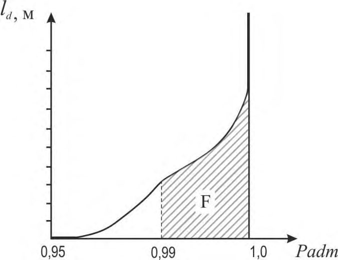
- Q - сила давления от оси поезда; hb - толщина балласта под шпалой
Рисунок К.1 - Распределение давления от одиночной оси вдоль пути, в пролете ( а ) и на конце пролета ( б )
К.2 Расчетную силу давления от оси следует принимать:
- для нагрузок от ВСП:
где Qn = 210 - нормативное давление на ось, кН; γ f = 1,2 - коэффициент надежности по нагрузке; μ1 - коэффициент из динамического расчета (формула (Ж.2) приложения Ж); μ2 = 0,7 - коэффициент, учитывающий неровности пути;
- для нагрузок СК:
где Qn
= 24,5 - нормативное давление на ось, кН (196 кН - для нагрузки С8); γ f = 1,2 - коэффициент надежности по нагрузке; 1+ μ= 1,5 - коэффициент динамики.
Q/B
ЛПриложение Л. Последовательность расчета пролетного строения
При расчетном обосновании надежности пролетного строения необходимо выполнить расчеты на случай проезда высокоскоростного поезда (ВСП) и поезда с эквивалентной нагрузкой СК.
Возможны две методики А и Б (см. 6.3.10) динамического расчета случая ВСП, а также два варианта расчета по каждой из методик А и Б (см. рисунок Л.1).
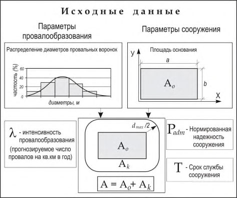
- 1) Отсутствие элементов проезжей части, местная работа которых может вносить существенный вклад в картину динамического взаимодействия поезда и конструкции пролетного строения (см. 6.3.10, примечание 1).
- 2) При загружении двух путей следует учитывать коэффициент s 1 таблицы 6.25.
- 3) Коэффициент надежности по ответственности γ n применяется только при проверках прочности и только при основных сочетаниях нагрузок (см. таблицу 6.26).
Рисунок Л.1 - Последовательность расчета пролетного строения
МПриложение М. Аэродинамические воздействия от высокоскоростных поездов
М.1Общие положения
- М.1.1 При расчете конструкций, расположенных вблизи железнодорожных путей, следует учитывать аэродинамические воздействия от прохождения высокоскоростных поездов.
М.1.2 Аэродинамические воздействия от высокоскоростного поезда на конструкции, расположенные в непосредственной близости от железнодорожного пути, можно представить в виде бегущей волны с переменным положительным и отрицательным давлением, сосредоточенной вблизи головы и хвоста поезда (см. рисунки М.1-М.4). Интенсивность воздействия зависит:
- от квадрата скорости поезда;
- от аэродинамической формы поезда;
- от формы конструкции;
- от расстояния между поездом и конструкцией и ее расположения относительно поезда.
- М.1.3 Эти воздействия могут быть заменены эквивалентными нагрузками, которые следует использовать при расчетах указанных конструкций по первой и второй группам предельных состояний. Нормативные значения эквивалентных нагрузок приведены в М.2М.6.
- М.1.4 Расчетную скорость V , км/ч, следует принимать равной максимальной скорости движения высокоскоростных поездов на данном участке (см. 6.3.5).
- М.1.5 В начале и конце конструкции, на участках длиной 5 м (считая вдоль оси пути) эквивалентные нагрузки, описанные в М.2-М.6, должны быть умножены на повышающий коэффициент динамики 2,0.
Примечание - Для динамически чувствительных конструкций или их элементов могут потребоваться специальные исследования для обоснования динамических составляющих интенсивностей вышеуказанных воздействий. При исследованиях необходимо учитывать динамические характеристики конструкции, включая условия опирания, граничные условия, скорость движения поезда и соответствующие аэродинамические воздействия, а также динамическую реакцию конструкции, включая скорость волны деформаций, возникающей в конструкции.
М.2Вертикальные поверхности, параллельные рельсовым путям
К вертикальным поверхностям, расположенным параллельно рельсовым путям, относятся, например, шумозащитные экраны.
- М.2.1 Нормативные значения воздействий ±q 1k приведены на рисунке М.1.
- М.2.2 Данные нормативные значения относятся к поездам с неблагоприятной аэродинамической формой. Для других поездов значения могут быть умножены на понижающий коэффициент k 1, принимаемый равным:
- 0,85 - для подвижного состава с гладкими сторонами;
- 0,6 - для подвижного состава обтекаемой аэродинамической формы.
- М.2.3 Если рассматривается небольшая часть конструкции высотой ≤ 1,0 м и длиной ≤ 2,5 м (например, элемент шумозащитного экрана), воздействия q 1 k должны быть умножены на повышающий коэффициент k 2 = 1,3.
1 - сечение; 2 - поверхность конструкции; 3 - вид сверху; 4 - поверхность конструкции
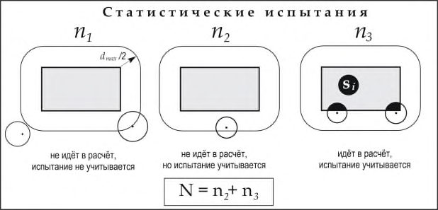
Рисунок М.1 - Нормативные значения воздействий q 1 k для вертикальных поверхностей, параллельных рельсовому пути
М.3Горизонтальные поверхности над рельсовыми путями
К горизонтальным поверхностям над рельсовыми путями относятся, например, верхние защитные конструкции.
- М.3.1 Нормативные значения воздействий ± q 2 k приведены на рисунке М.2.
- М.3.2 Расчетная ширина загружения исследуемого конструктивного элемента составляет до 10 м в любую сторону от оси пути.
- М.3.3 Воздействия на конструкцию от поездов, проходящих по соседним путям в противоположных направлениях, суммируются. Нагрузки следует учитывать только с двух путей.
- М.3.4 К воздействиям q 2 k применяют понижающий коэффициент k 1, как в М.2.
- М.3.5 Воздействия на крайние участки широкой конструкции, пересекающей путь, на ширине ≤ 1,5 м от края могут быть умножены на коэффициент 0,75.
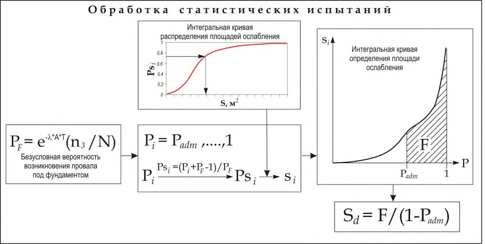
- сечение;
- вертикальная проекция;
- обратная сторона конструкции
Рисунок М.2 - Нормативные значения воздействий q 2 k для горизонтальных поверхностей выше рельсовых путей
М.4Горизонтальные поверхности, примыкающие к рельсовым путям
К горизонтальным поверхностям, примыкающим к рельсовым путям, относятся навесы платформы без вертикальных стен и подобные конструкции.
- М.4.1 Нормативные значения воздействий ± q 3 k приведены на рисунке М.3 и применяются независимо от аэродинамической формы поезда.
- М.4.2 Для каждого положения вдоль подлежащей расчету конструкции величина q 3 k зависит от расстояния ag до ближайшего рельсового пути. В случае, если рельсовые пути расположены с обеих сторон рассматриваемого элемента конструкции, воздействия должны складываться.
- М.4.3 Если расстояние hg от уровня головки рельса до низа конструкции превышает 3,8 м, то воздействие q 3 k может быть умножено на понижающий коэффициент k 3 по формуле
Рисунок М.3 - Нормативные значения воздействий q 3 k для горизонтальных поверхностей, примыкающих к рельсовым путям
М.5Конструкции из нескольких поверхностей (вертикальных, горизонтальных или наклонных), расположенные вдоль рельсовых путей
К конструкциям из нескольких поверхностей (вертикальных, горизонтальных или наклонных), расположенных вдоль рельсовых путей, относятся, например, наклонные шумозащитные барьеры, навесы платформы с вертикальными стенами и т. д.
М.5.1 Нормативные значения воздействий ± q 4 k , приведенные на рисунке М.4, должны быть приложены по нормали к рассматриваемым поверхностям. Эти воздействия должны быть получены из графиков на рисунке М.1, причем расстояние от пути должно быть принято меньшим из значений:
где min ag , max ag - расстояния, показанные на рисунке М.4.
М.5.2 Если max ag > 6 м, то принимают значение max ag = 6 м.
- М.5.3 К воздействиям ± q 4 k применяются коэффициенты k 1 и k 2, определенные в М.2.
)
Рисунок М.4 - Определение расстояний min ag и max ag от осевой линии рельсового пути
М.6Поверхности ограниченной длины (до 20 м)
К поверхностям ограниченной длины (до 20 м), ограждающим сверху габарит приближения строений (горизонтальная поверхность над путями и хотя бы одна вертикальная стена) относятся, например, подмости, временные сооружения.
М.6.1 Воздействия должны быть приложены независимо от аэродинамической формы поезда:
- к вертикальным поверхностям (по всей высоте):
где q 1 k - определяется согласно М.2; k
4 = 2;
- к горизонтальным поверхностям:
где q 2 k - определяется согласно М.3 только для одного рельсового пути; k 5 = 2,5 - если поверхность накрывает один рельсовый путь; k 5 = 3,5 - если поверхность накрывает два рельсовых пути.
НПриложение Н. Расчетные модели взаимодействия пути и пролетных строений мостов
Н.1Общие положения
Н.1.1 Для исследования поведения элементов пути и искусственного сооружения и для контроля деформаций и напряжений могут быть использованы различные модели (расчетные схемы). В зависимости от сложности конструкций сооружений и (или) пути расчеты могут выполняться с разными уровнями детализации и точности.
Следует различать две категории таких расчетов:
- 1) Расчеты обоснования надежности конструктивных решений.
При выполнении этих расчетов должны быть выполнены все указания нормативных документов и настоящего свода правил. По каждой из проверок надежности должны быть использованы соответствующие топологии расчетных схем; характеристики материалов, грунтов и соединений; интенсивности и направления воздействий в указанных сочетаниях.
Расчеты обоснования надежности конструктивных решений должны выполняться в строгом соответствии с настоящим сводом правил.
- 2) Комплексные исследования.
Такие исследования выполняются: для оценки чувствительности напряженнодеформированного состояния элементов сооружения к изменению того или иного параметра системы путь-мост, выявления влияния параметров модели друг на друга, изучения характера поведения системы в процессе нарастания интенсивностей внешних воздействий, для вычисления поправочных коэффициентов и других подобных целей.
При выполнении таких расчетов следует руководствоваться общими положениями настоящего свода правил. Принимать конструктивные решения на основании таких расчетов допускается только после соответствующего обоснования.
- Н.1.2 Расчетная модель для учета усилий и деформаций при взаимодействии конструкций пути и элементов моста должна содержать элементы, моделирующие работу:
- рельсовых плетей;
- пролетных строений моста;
- верхнего строения пути (скрепления, балласт, плиты);
- опорных частей, опор моста и оснований опор.
Следует учитывать следующие размеры и топологические особенности сооружения:
- схему моста (число и длину пролетов, по опорам и опорным частям, неразрезность пролетных строений, в том числе температурную);
- высотное положение рельсовых плетей, балластного основания, нейтральных осей пролетных строений, центров вращения опорных частей и характерные отметки опор;
- расположение устройств компенсации удлинения рельсов.
Должны быть учтены следующие характеристики элементов:
- изгибная жесткость пролетного строения;
- горизонтальная жесткость опор в уровне приложения горизонтальных нагрузок;
- сдвиговые характеристики рельсовых нитей относительно плиты пролетного строения или насыпи.
Следует учитывать следующие воздействия:
- вертикальные временные подвижные нагрузки;
- силы торможения (тяги);
- перепад температур;
- усадку и ползучесть в тех случаях, когда эти процессы на момент устройства верхнего строения пути реализовались менее чем на 80 %.
Пример расчетной модели приведен на рисунках Н.1 и Н.2.
Рисунок Н.1 - Принципиальная схема модели для оценки взаимодействия конструкции пути и элементов моста
Рисунок Н.2 - Пример моделирования пролетного строения стержневыми элементами
Число элементов (поперек моста), моделирующих рельсовые плети и упругофрикционные связи, должно соответствовать числу путей на пролетном строении.
Оси элементов, моделирующих рельсы и пролетные строения, рекомендуется располагать в расчетной модели с учетом фактического высотного положения их нейтральных осей.
Также следует уделять особое внимание корректному вертикальному и горизонтальному положениям центров поворота опорных частей (шарниров).
Связь между нейтральными осями рельсов и пролетных строений, а также между осями пролетных строений и центрами поворотов опорных частей может быть смоделирована с использованием бесконечно жестких элементов (или объединений соответствующих узлов по степеням свободы).
Моделирование пути и пролетного строения дискретными элементами (стержнями) должно обеспечивать оценку напряженно-деформированного состояния с точностью и достоверностью, достаточными для принятия инженерных решений (абсолютные и относительные смещения, напряжения в рельсах, реакции в опорных частях).
При моделировании пути и пролетных строений рекомендуется использовать элементы, максимальная длина которых не превышает 2,0 м.
При отсутствии уравнительных приборов на подходах модель также должна включать часть пути на примыкающей насыпи длиной не менее 100 м.
Н.2Жесткость опорных частей и опор
- Н.2.1 Жесткость опор и оснований может быть учтена в расчетной модели явно (см. рисунок Н.1). В случае применения опорной части, жестко закрепленной на опоре и допускающей поворот (традиционная неподвижная опорная часть), горизонтальная реакция соответствующей опоры на отметке центра поворота может быть учтена горизонтальной упругой связью, эквивалентной жесткости.
Н.2.2 При моделировании тела железобетонных опор следует полагать, что сечения работают в упругой стадии и раскрытия трещин не происходит.
Если короткий и невысокий элемент опоры ( l / b < 2) моделируется стержнем, необходимо учитывать влияние на его жесткость поперечных сил.
Н.3Функция зависимости сдвиговой жесткости пути от смещений
- Н.3.1 Модель зависимости сдвиговой жесткости одного рельсового пути относительно плиты пролетного строения от величины взаимного смещения рельсов и пролетного строения представлена на рисунке Н.3.
Рисунок Н.3 - Зависимость сдвиговой жесткости пути относительно пролетного строения от величины взаимного смещения
Н.3.2 Сдвиговые характеристики пути относительно его основания указываются заказчиком в задании на проектирование.
При обосновании проектных решений допускается принимать следующие характеристики (с одного пути) по таблице Н.1.
Таблица Н.1 Характеристики функции зависимости сдвиговой жесткости от смещений
| Путь на балласте | Путь на балласте | Путь на балласте | Путь на балласте | Безбалластный путь | Безбалластный путь | |
|---|---|---|---|---|---|---|
| Путь | нормальном | нормальном | замерзшем | замерзшем | ||
| Δ τo , мм | G τ , кН/пм | Δ τo , мм | G τ , кН/пм | Δ τo , мм | G τ , кН/пм | |
| Ненагруженный | 2,5 | 20 | 0,5 | 40 | 0,5 | 40 |
| Нагруженный | 2,5 | 60 | 0,5 | 60 | 0,5 | 60 |
Н.3.3 В случае использования податливых или жестких скреплений, конструкция которых не допускает смещений фрикционного типа (проскальзывания), расчетом должно контролироваться предельное сопротивление сдвигу этих скреплений. Предельное усилие на стадии эксплуатации (с обеспеченностью 0,95), которое допускается передавать на такие скрепления, должно быть указано заказчиком в задании на проектирование.
- Н.3.4 При отсутствии уравнительного прибора за устоем (в непосредственной близости) расчетная модель должна учитывать продольное закрепление пути на насыпи подходов. В этом случае длину закрепления плети на насыпи следует принимать не менее 100 м от шкафной стенки устоя.
Н.4Параметры рельсов
Физико-механические характеристики рельсов в расчетной модели следует принимать по ГОСТ Р 51685.
В случае применения рельсов Р65 в расчетной модели могут быть использованы характеристики, приведенные в таблице Н.2.
Таблица Н.2
| Наименование | Обозначение | Единица измерения | Характеристика |
|---|---|---|---|
| Коэффициент линейного расширения | α R | °С -1 | 0,0000118 |
| Модуль упругости материала рельса | E R | МПа | 2,1·10 5 |
| Площадь двух рельсов | A 2 R | м² | 0,01653 |
ППриложение П. Расчетные модели фундаментов опор
П.1Общие положения
- П.1.1 При расчетах, в которых учитывается влияние основания, свай, в зависимости от группы предельных состояний, а также длительности действия нагрузки, следует принимать различные параметры элементов моделей, учитывающих работу грунта.
Следует различать расчеты:
- связанные с исследованием динамического поведения конструкции;
- исследующие состояние конструкции при нормальной эксплуатации при нормативных нагрузках (вторая группа предельных состояний и выносливость);
- проверок прочности и устойчивости конструкций и элементов.
- П.1.2 Следует полагать, что при нормальной эксплуатации и при кратковременном действии нагрузок (подвижная нагрузка, торможение, ветер и т. д.) все элементы работают в упругой стадии и никаких остаточных деформаций не происходит.
При расчетах предельных состояний по первой группе следует учитывать, что в грунтах развиваются ограниченные пластические деформации согласно СП 22.13330 и СП 24.13330.
- П.1.3 При динамических расчетах следует рассматривать два случая жесткости грунтов:
- повышение жесткостей грунтов при динамических воздействиях согласно положениям СП 26.13330;
- нормальная упругая работа грунтов.
П.1.4 При расчетах совместной работы пути и сооружения - обязательно, а при других расчетах по первой и второй группам предельных состояний - при необходимости, следует рассматривать различную жесткость фундамента, принимая к расчету два крайних консервативных значения жесткости.
П.2Свайные фундаменты
П.2.1 Грунт, окружающий сваю, допускается рассматривать как упругую линейнодеформируемую среду, характеризуемую коэффициентом постели Cz , кН/м³ .
П.2.2 Коэффициент постели грунта по боковой поверхности сваи Czi , глубину расположения сечения zi и коэффициент условий работы с следует принимать с учетом указаний таблицы П.1.
Таблица П.1
| 1 Коэффициент постели грунта по боковой поверхности сваи: - при глубине срезки грунта ≤ 5 м или при величине полного размыва ≤ 5 м или при высоте подсыпки (высоте насыпи) ≤ 10 м и при горизонтальной поверхности грунта: | 1 Коэффициент постели грунта по боковой поверхности сваи: - при глубине срезки грунта ≤ 5 м или при величине полного размыва ≤ 5 м или при высоте подсыпки (высоте насыпи) ≤ 10 м и при горизонтальной поверхности грунта: | 1 Коэффициент постели грунта по боковой поверхности сваи: - при глубине срезки грунта ≤ 5 м или при величине полного размыва ≤ 5 м или при высоте подсыпки (высоте насыпи) ≤ 10 м и при горизонтальной поверхности грунта: | 1 Коэффициент постели грунта по боковой поверхности сваи: - при глубине срезки грунта ≤ 5 м или при величине полного размыва ≤ 5 м или при высоте подсыпки (высоте насыпи) ≤ 10 м и при горизонтальной поверхности грунта: |
|---|---|---|---|
| - при глубине расположения i -го сечения ≥ 10 м ниже природной поверхности грунта или дна водотока без размыва, при любых планировках (размывах) | - при глубине расположения i -го сечения ≥ 10 м ниже природной поверхности грунта или дна водотока без размыва, при любых планировках (размывах) | i c z z K i C = | Рисунок П.1 |
| - то же, при глубине < 10 м, при планировке подсыпкой или для насыпи | - то же, при глубине < 10 м, при планировке подсыпкой или для насыпи | p p i z zi h ) h z ( C C + + = 10 10 | Рисунок П.1 |
| - то же, при глубине < 10 м, при планировке срезкой или при размыве 1) | - то же, при глубине < 10 м, при планировке срезкой или при размыве 1) | s s i z zi h ) h z ( C C - - = 10 10 | Рисунок П.1 |
| - во всех других случаях | - во всех других случаях | См. пункт П.2.3 | См. пункт П.2.3 |
| 2 Глубина расположения i -го слоя грунта z i : | 2 Глубина расположения i -го слоя грунта z i : | 2 Глубина расположения i -го слоя грунта z i : | 2 Глубина расположения i -го слоя грунта z i : |
| - в случае, если опора расположена в постоянном водотоке и грунт расчетного слоя или один из слоев грунта, расположенных выше, являются водоупором (глинистые грунты) | От условной поверхности, расположенной выше дна водоема или водотока, на величину z v , равную половине глубины воды в состоянии межени: z i + z v | От условной поверхности, расположенной выше дна водоема или водотока, на величину z v , равную половине глубины воды в состоянии межени: z i + z v | Рисунок П.2 |
| - во всех других случаях | От природной поверхности грунта или дна водотока или водоема | От природной поверхности грунта или дна водотока или водоема | Рисунок П.2 |
| 3 В случае расположения низа плиты фундамента в грунте (низкий ростверк) следует учитывать разуплотнение грунта на глубине 3,0 м | 3 В случае расположения низа плиты фундамента в грунте (низкий ростверк) следует учитывать разуплотнение грунта на глубине 3,0 м | 3 В случае расположения низа плиты фундамента в грунте (низкий ростверк) следует учитывать разуплотнение грунта на глубине 3,0 м | Рисунок П.3 |
| 4 Коэффициент постели грунта под подошвой сваи следует принимать равным (кроме опирания на скальные грунты) | 4 Коэффициент постели грунта под подошвой сваи следует принимать равным (кроме опирания на скальные грунты) | K d z K d C o N = 50 5 | Рисунок П.4 |
| 5 Для висячих свай следует учитывать коэффициент постели сдвига на контакте грунта и боковой поверхности сваи | 5 Для висячих свай следует учитывать коэффициент постели сдвига на контакте грунта и боковой поверхности сваи | zi fzi C C = 0,5 | Рисунок П.4 |
| 6 При определении коэффициента постели грунта по боковой поверхности сваи следует учитывать группу предельных состояний, а также длительность действия нагрузки, принимая коэффициент условий работы с равным: | 6 При определении коэффициента постели грунта по боковой поверхности сваи следует учитывать группу предельных состояний, а также длительность действия нагрузки, принимая коэффициент условий работы с равным: | 6 При определении коэффициента постели грунта по боковой поверхности сваи следует учитывать группу предельных состояний, а также длительность действия нагрузки, принимая коэффициент условий работы с равным: | 6 При определении коэффициента постели грунта по боковой поверхности сваи следует учитывать группу предельных состояний, а также длительность действия нагрузки, принимая коэффициент условий работы с равным: |
| - при расчетах по первой группе предельных состояний элементов фундамента и грунта (несущая способность свай, прочность сечений, напряжения в грунте) | - при расчетах по первой группе предельных состояний элементов фундамента и грунта (несущая способность свай, прочность сечений, напряжения в грунте) | - при расчетах по первой группе предельных состояний элементов фундамента и грунта (несущая способность свай, прочность сечений, напряжения в грунте) | с = 3,0 |
| - при расчетах по второй группе предельных состояний (смещения и деформации, расчеты взаимодействия пути и сооружения и другие) нормальной упругой работы грунта: | - при расчетах по второй группе предельных состояний (смещения и деформации, расчеты взаимодействия пути и сооружения и другие) нормальной упругой работы грунта: | - при расчетах по второй группе предельных состояний (смещения и деформации, расчеты взаимодействия пути и сооружения и другие) нормальной упругой работы грунта: | - при расчетах по второй группе предельных состояний (смещения и деформации, расчеты взаимодействия пути и сооружения и другие) нормальной упругой работы грунта: |
| - при расчетах на вертикальные и горизонтальные воздействия подвижной нагрузки (кратковременная) | - при расчетах на вертикальные и горизонтальные воздействия подвижной нагрузки (кратковременная) | - при расчетах на вертикальные и горизонтальные воздействия подвижной нагрузки (кратковременная) | с = 1,0 |
| - при расчетах образования и раскрытия трещин в бетоне на сочетания горизонтальных постоянных и (или) длительных нагрузок (давление грунта со стороны насыпи, предварительное напряжение, температурные воздействия) | - при расчетах образования и раскрытия трещин в бетоне на сочетания горизонтальных постоянных и (или) длительных нагрузок (давление грунта со стороны насыпи, предварительное напряжение, температурные воздействия) | - при расчетах образования и раскрытия трещин в бетоне на сочетания горизонтальных постоянных и (или) длительных нагрузок (давление грунта со стороны насыпи, предварительное напряжение, температурные воздействия) | с = 2,0 |
| - при расчетах совместной работы пути и сооружения при комбинациях с вертикальными и горизонтальными компонентами временной нагрузки (кратковременными) | - при расчетах совместной работы пути и сооружения при комбинациях с вертикальными и горизонтальными компонентами временной нагрузки (кратковременными) | - при расчетах совместной работы пути и сооружения при комбинациях с вертикальными и горизонтальными компонентами временной нагрузки (кратковременными) | с = 0,75-1,5 |
| - при расчетах совместной работы пути и сооружения при комбинациях с длительными нагрузками (температура) | - при расчетах совместной работы пути и сооружения при комбинациях с длительными нагрузками (температура) | - при расчетах совместной работы пути и сооружения при комбинациях с длительными нагрузками (температура) | с = 1,0-2,0 |
| - при моделировании грунта в динамических расчетах в случаях повышенной жесткости грунта и нормальной упругой работы грунта | - при моделировании грунта в динамических расчетах в случаях повышенной жесткости грунта и нормальной упругой работы грунта | - при моделировании грунта в динамических расчетах в случаях повышенной жесткости грунта и нормальной упругой работы грунта | с = 0,1-1,0 2) |
- 2) При моделировании грунта в динамических расчетах допускается уточнять упругие характеристики грунта на основании специальных исследований.
Примечание - В настоящей таблице применены следующие обозначения:
Cz 10 - коэффициент постели, на глубине 10 м от поверхности грунта без учета планировки, кН/м³ 1) ;
- zi - глубина i -го сечения сваи от уровня природной поверхности или дна водотока или водоема, м;
- zo - глубина расположения подошвы сваи, определяемая аналогично zi , м;
- с - коэффициент условий работы;
- hp - высота подсыпки, м;
- hs - глубина срезки, м;
Рисунок П.1 - Вычисление коэффициента постели при планировке грунта
Рисунок П.2 - Изменение отметки сечения при расположении опоры в воде
Рисунок П.3 - Учет разуплотнения грунта под плитой фундамента
Рисунок П.4 - Коэффициент постели сдвига и коэффициент постели под подошвой сваи
- П.2.3 В сложных случаях (срезка или размыв превышают 5 м, подсыпка или высота насыпи превышает 10 м, поверхность грунта не горизонтальна и т. п.) коэффициенты постели Czi следует определять по формуле
где C'zi, σ ' zi - коэффициент постели и вертикальные напряжения в грунте, вычисленные на глубине zi от природной поверхности без учета всех особенностей, перечисленных выше, кН/м³ и кПа;
- σ zi - вертикальные напряжения в грунте, полученные в результате отдельных расчетов, в которых учтены особенности грунтовой обстановки и особенности данной опоры, кПа.
- П.2.4 При вычислении погонных жесткостей основания (по высоте), моделирующих упругое взаимодействие сваи и грунта по боковой поверхности, следует учитывать условную ширину сваи bp , м:
- для свай d ≤ 0,8 м bр = (1,5 d + 0,5) kf ∙ kr
- для свай d > 0,8 м bр = ( d + 1,0) kf ∙ kr
- где d - диаметр круглого, сторона квадратного или прямоугольного сечения свай в плоскости, перпендикулярной действию нагрузки, м; kf - коэффициент формы, принимаемый:
- для свай круглого сечения kf = 0,9;
- для других сечений свай kf = 1,0;
- kr - коэффициент, зависящий от числа и размера сечения свай:
- для свай-оболочек, свай-столбов или набивных свай -( ) ( ) ; d l p k 1 k 1 k r 1,0 2 1 + -+ = (П.3)
- свай других типов kr = 1,0,
- здесь k 1 - коэффициент, зависящий от числа свай пр в вертикальной плоскости, параллельной плоскости действия нагрузок (в одном ряду), принимаемый:
- при пр = 2 k 1 = 0,6;
- при пр = 3 k 1 = 0,5;
- при пр 4 k 1 = 0,45;
- l p - расстояние в свету (на уровне поверхности грунта) между сваями-оболочками, сваями-столбами или набивными сваями, м.
- П.2.5 При расчетах опор мостов понижающий коэффициент i по СП 24.13330.2011 (приложение В) применять не следует.
- П.2.6 Коэффициент, учитывающий увеличение действующих усилий на сваи для большеразмерных кустов и полей свай (СП 24.13330), следует принимать:
- если в пределах опоры существенно изменяются грунтовые условия - 1,2;
- в других случаях - 1,0.
П.3Фундаменты опор на естественном основании
П.3.1 При моделировании фундаментов опор на естественном основании следует руководствоваться указаниями СП 22.13330.2016 (приложение Б) и СП 26.13330.
При вычислении жесткости закреплений, моделирующих упругие характеристики грунтов основания, и при отсутствии экспериментальных данных следует принимать следующие коэффициенты постели, кН/м³ :
где Eg - модуль деформации грунта под подошвой, кПа; mg - коэффициент, м -1 , принимаемый:
1,0 - для песчаных грунтов;
1,2 - для супесей и суглинков;
1,5 - для глин и крупнообломочных грунтов;
Af - площадь плиты фундамента, м² , но не более 200 м² ;
A 10 - площадь, м² , эквивалентная 10,0;
с - коэффициент условий работы, принимаемый по позиции 6 таблицы П.1.
РПриложение Р. Расчет осадок фундаментов опор
- Р.1 Осадка свайного фундамента (кроме одиночных свай) или фундамента глубокого заложения (опускного колодца), вычисляется, как для условного фундамента, размеры основания которого принимают согласно рисунку Р.1.
Рисунок Р.1 - Размер основания условного фундамента
При вычислении осадки фундамента на естественном основании, рассчитываемого без учета заделки в грунт, а также трубы в теле насыпи af и bf следует принимать равными физическим размерам подошвы плиты фундамента или площади опирания трубы на грунт. При наличии под плитой слоя щебеночной засыпки толщиной hп размеры af и bf следует увеличивать на 2 hп .
Для водопропускных труб и других сооружений в теле насыпи следует вычислять разницу осадок насыпи и сооружения с учетом их взаимного влияния. Разница этих осадок, положительная или отрицательная, не должна превышать значений, указанных в таблице 6.5.
Р.2 Осадка фундамента s , см, определяется методом послойного суммирования в предположении работы грунта под нагрузкой как линейно деформируемого полупространства (рисунок С.2) по формуле
где - безразмерный коэффициент, равный 0,8;
zp,i - среднее значение вертикального нормального напряжения от внешней нагрузки в i -м слое грунта по вертикали, проходящей через центр фундамента, кПа; hi - толщина i -го слоя грунта, см, принимаемая не более 40 % минимального размера основания фундамента;
Ei - модуль деформации i -го слоя грунта, кПа; п - число слоев, на которые разбита сжимаемая толща основания.
При этом распределение вертикальных напряжений по глубине основания принимают в соответствии со схемой, приведенной на рисунке Р.2.
Рисунок Р.2 - Распределение напряжений под подошвой фундамента
Р.3 Вертикальные напряжения от внешней нагрузки zp , кПа, зависят от размеров, формы и глубины заложения фундамента, распределения давления на грунт под его подошвой и свойств грунтов основания. Для прямоугольных фундаментов значения zp на глубине z от их подошвы по вертикали, проходящей через их центр, определяют по формуле zp = p , (Р.2) где - коэффициент, принимаемый по таблице С.1 в зависимости от относительной глубины = 2 zi / bf и соотношения сторон фундамента = af / bf ; р - среднее давление под подошвой фундамента, кПа.
Р.4 Вертикальное эффективное напряжение от собственного веса грунта zg , кПа, на глубине zi от подошвы прямоугольного в плане фундамента определяют по формуле
где zg,0 = ' ∙ hf - вертикальное напряжение от собственного веса грунта на отметке подошвы фундамента, кПа:
' - удельный вес грунта, расположенного выше подошвы, кН/м³ ; hf - глубина подошвы фундамента, м (рисунок Р.2);
i , hi - удельный вес, кН/м³ , и толщина i -го слоя грунта, м, залегающего выше границы слоя на глубине zi от подошвы фундамента; и - поровое давление на рассматриваемой границе слоя, кН/м² .
Для неводонасыщенных грунтов, а также для глинистых грунтов при коэффициенте фильтрации менее 1∙10 -5 м/сут и показателе текучести IL < 0,25 поровое давление и принимается равным нулю.
- Р.5 Послойное суммирование следует выполнять до тех пор, пока выполняется хотя бы одно из двух условий:
zp > 0,2 zg - максимальный уровень дополнительных напряжений превышает 20 % напряжений в грунте от собственного веса; (Р.4) zi Нmin
- минимальная учитываемая высота сжимаемой толщи, м, значение которой следует принимать: (Р.5)
Нmin = bf / 2 при bf 10 м;
Нmin = (4 + 0,1 bf ) при 10 bf 60 м;
Нmin = 10 при bf > 60 м.
Р.6 В зависимости от стадии жизненного цикла сооружения осадки, соответствующие данной стадии, допускается определять:
- а) в случае, если результаты испытаний грунтов позволяют определить условные модули деформаций грунтов (ветви нагружения), соответствующие времени приложения и длительности действия нагрузки, а также уровню дополнительных напряжений на данной ступени, то в формуле (Р.1) допускается использовать вместо Ei значения этого условного модуля. При этом вертикальные напряжения (Р.2) следует определять при давлении под подошвой p, соответствующей данной стадии;
- б) в случае отсутствия данных, указанных в случае 1, допускается вычислять осадки на стадии эксплуатации:
- 1) при условии, что сжимаемая толща сложена песчаными грунтами, принимая в качестве нагрузки только вес мостового полотна (вторую часть постоянной нагрузки).
- 2) в случае глинистых грунтов основания при условии, что в пределах сжимаемой толщи отсутствуют слабые грунты с коэффициентами деформаций E 7 МПа, принимая понижающие коэффициенты к нагрузкам, соответствующим стадиям строительства:
- от веса насыпи и опор - 0,6;
- от веса пролетного строения - 0,8;
- от второй части постоянной нагрузки - 1,0.
Дополнительные напряжения zp в формуле (Р.4) (в случае б) следует определять без учета понижающих коэффициентов.
- Р.7 Крен фундамента i при действии внецентренно приложенной нагрузки определяют по формуле
где N - вертикальная составляющая нагрузок, кН, на уровне подошвы фундамента; е - эксцентриситет, м;
D - коэффициент, кПа -1 , определяемый по формуле
ke - коэффициент, принимаемый по таблице Р.2;
E - модуль деформации, кПа; ν - коэффициент поперечной деформации грунта основания по таблице Р.3.
- В случае неоднородного основания значение D принимают средним в пределах сжимаемой толщи H с по формуле
где Ai - площадь эпюры вертикальных напряжений от единичного давления под подошвой фундамента в пределах i -го слоя грунта, допускается принимать Ai = zp,i hi.
Р.8 При расчетах осадок фундаментов, не прямоугольных в плане, при расчетах взаимовлияния осадок соседних опор, а также в других сложных случаях следует руководствоваться указаниями СП 22.13330 с учетом положений настоящего свода правил.
Допускается использование других известных методик определения напряжений в грунте для линейно-деформируемого полупространства.
Таблица Р.1
| | круглых | Коэффициент для фундаментов прямоугольных с соотношением сторон = a f / b f | Коэффициент для фундаментов прямоугольных с соотношением сторон = a f / b f | Коэффициент для фундаментов прямоугольных с соотношением сторон = a f / b f | Коэффициент для фундаментов прямоугольных с соотношением сторон = a f / b f | Коэффициент для фундаментов прямоугольных с соотношением сторон = a f / b f | Коэффициент для фундаментов прямоугольных с соотношением сторон = a f / b f | Коэффициент для фундаментов прямоугольных с соотношением сторон = a f / b f |
|---|---|---|---|---|---|---|---|---|
| | круглых | 1,0 | 1,4 | 1,8 | 2,4 | 3,2 | 5 | 10 |
| 0 | 1,000 | 1,000 | 1,000 | 1,000 | 1,000 | 1,000 | 1,000 | 1,000 |
| 0,4 | 0,949 | 0,960 | 0,972 | 0,975 | 0,976 | 0,977 | 0,977 | 0,977 |
| 0,8 | 0,756 | 0,800 | 0,848 | 0,866 | 0,876 | 0,879 | 0,881 | 0,881 |
| 1,2 | 0,547 | 0,606 | 0,682 | 0,717 | 0,739 | 0,749 | 0,754 | 0,755 |
| 1,6 | 0,390 | 0,449 | 0,532 | 0,578 | 0,612 | 0,629 | 0,639 | 0,642 |
| 2,0 | 0,285 | 0,336 | 0,414 | 0,463 | 0,505 | 0,530 | 0,545 | 0,550 |
| 2,4 | 0,214 | 0,257 | 0,325 | 0,374 | 0,419 | 0,449 | 0,470 | 0,477 |
| 2,8 | 0,165 | 0,201 | 0,260 | 0,304 | 0,349 | 0,383 | 0,410 | 0,420 |
| 3,2 | 0,130 | 0,160 | 0,210 | 0,251 | 0,294 | 0,329 | 0,360 | 0,374 |
| 3,6 | 0,106 | 0,131 | 0,173 | 0,209 | 0,250 | 0,285 | 0,319 | 0,337 |
| 4,0 | 0,087 | 0,108 | 0,145 | 0,176 | 0,214 | 0,248 | 0,285 | 0,306 |
| 4,4 | 0,073 | 0,091 | 0,123 | 0,150 | 0,185 | 0,218 | 0,255 | 0,280 |
| 4,8 | 0,062 | 0,077 | 0,105 | 0,130 | 0,161 | 0,192 | 0,230 | 0,258 |
| 5,2 | 0,053 | 0,067 | 0,091 | 0,113 | 0,141 | 0,170 | 0,208 | 0,239 |
| 5,6 | 0,046 | 0,058 | 0,079 | 0,099 | 0,124 | 0,152 | 0,189 | 0,223 |
| 6,0 | 0,040 | 0,051 | 0,070 | 0,087 | 0,110 | 0,136 | 0,173 | 0,208 |
| 6,4 | 0,036 | 0,045 | 0,062 | 0,077 | 0,099 | 0,122 | 0,158 | 0,196 |
| 6,8 | 0,031 | 0,040 | 0,055 | 0,069 | 0,088 | 0,110 | 0,145 | 0,185 |
| 7,2 | 0,028 | 0,036 | 0,049 | 0,062 | 0,080 | 0,100 | 0,133 | 0,175 |
| 7,6 | 0,024 | 0,032 | 0,044 | 0,056 | 0,072 | 0,091 | 0,123 | 0,166 |
| 8,0 | 0,022 | 0,029 | 0,040 | 0,051 | 0,066 | 0,084 | 0,113 | 0,158 |
| 8,4 | 0,021 | 0,026 | 0,037 | 0,046 | 0,060 | 0,077 | 0,105 | 0,150 |
| 8,8 | 0,019 | 0,024 | 0,033 | 0,042 | 0,055 | 0,071 | 0,098 | 0,143 |
| 9,2 | 0,017 | 0,022 | 0,031 | 0,039 | 0,051 | 0,065 | 0,091 | 0,137 |
| 9,6 | 0,016 | 0,020 | 0,028 | 0,036 | 0,047 | 0,060 | 0,085 | 0,132 |
| 10,0 | 0,015 | 0,019 | 0,026 | 0,033 | 0,043 | 0,056 | 0,079 | 0,126 |
| 10,4 | 0,014 | 0,017 | 0,024 | 0,031 | 0,040 | 0,052 | 0,074 | 0,122 |
| 10,8 | 0,013 | 0,016 | 0,022 | 0,029 | 0,037 | 0,049 | 0,069 | 0,117 |
| 11,2 | 0,012 | 0,015 | 0,021 | 0,027 | 0,035 | 0,045 | 0,065 | 0,113 |
| 11,6 | 0,011 | 0,014 | 0,020 | 0,025 | 0,033 | 0,042 | 0,061 | 0,109 |
| 12,0 | 0,010 | 0,013 | 0,018 | 0,023 | 0,031 | 0,040 | 0,058 | 0,106 |
Таблица Р.2
| Коэффициент k e при = l / b , равном | Коэффициент k e при = l / b , равном | Коэффициент k e при = l / b , равном | Коэффициент k e при = l / b , равном | Коэффициент k e при = l / b , равном | Коэффициент k e при = l / b , равном | Коэффициент k e при = l / b , равном | |
|---|---|---|---|---|---|---|---|
| Форма фундамента и направление действия момента | 1 | 1,2 | 1,5 | 2 | 3 | 5 | 10 |
| Прямоугольный с моментом вдоль большей стороны | 0,50 | 0,57 | 0,68 | 0,82 | 1,17 | 1,42 | 2,00 |
| Прямоугольный с моментом вдоль меньшей стороны | 0,50 | 0,43 | 0,36 | 0,28 | 0,20 | 0,12 | 0,07 |
| Круглый | 0,75 | 0,75 | 0,75 | 0,75 | 0,75 | 0,75 | 0,75 |
Таблица Р.3
| Грунты | Коэффициент поперечной деформации ν |
|---|---|
| Крупнообломочные грунты | 0,27 |
| Пески и супеси | 0,30-0,35 |
| Суглинки | 0,35-0,37 |
| Глины при показателе текучести I L : | |
| I L 0 | 0,20-0,30 |
| 0 < I L 0,25 | 0,30-0,38 |
| 0,25 < I L 1 | 0,38-0,45 |
| Примечание - Меньшие значения v применяют при большей плотности грунта. | Примечание - Меньшие значения v применяют при большей плотности грунта. |
СПриложение С. Методика расчета параметров проявления карстово-суффозионных процессов в основании сооружения
С.1 Требования оценки риска возникновения опасных природных процессов и явлений при инженерно-геологических изысканиях приведены в [1, статья 15].
Этим требованиям отвечает приведенная ниже методика определения расчетного пролета и расчетной площади карстового провала - основных параметров проектирования фундаментов сооружений с учетом карстово-суффозионных деформаций.
С.2 Расчет параметров проявления карстово-суффозионных процессов в основании сооружения следует производить в последовательности, изложенной в С.2.1-С.2.5.
С.2.1 Определяется площадь сооружения в плане Ао и расчетная площадь А (рисунок С.1):
где Аk - площадь, очерченная контуром на расстоянии максимально прогнозируемого радиуса карстовой воронки ( dmax /2).
Предполагается, что провал с любыми размерами до dmax , который произойдет за пределами расчетной площади, не окажет влияния на сооружение. При образовании провала в пределах расчетной площади А существует вероятность поражения провалом сооружения.
Рисунок С.1 - Расчетная схема определения вероятности поражения сооружения карстовым провалом
С.2.2 Определяется условная (геометрическая) вероятность поражения сооружения карстовым провалом.
При оценке условной вероятности следует использовать метод статистических испытаний (метод Монте-Карло).
Предполагается, что образование провала на всей площади А равновероятно. Генерируются тройки случайных чисел ( x , y , d ), где x , y - координаты центров провалов, определяемых как равномерно распределенных на площади А ; d - случайное значение диаметра воронки ( d dmax ), определяемое как распределенное по нормальному закону при параметрах распределения: среднего ( d ) и максимального ( D ) диаметров провала, дисперсии d 2 . При отсутствии сведений о статистических параметрах распределения диаметров допускается использовать одно прогнозное значение диаметра провала dmax , определяемое на основе геомеханической модели провалообразования. «Поражением» сооружения провалом считается случай, когда ось фундамента пересекается контуром провала по некоторой хорде l i (на рисунке С.1 l 1, l 3).
Условная вероятность поражения сооружения карстовым провалом оценивается как Pf = nl / N , (С.2) где N - число моделируемых случаев провалов (рекомендуется рассматривать не менее 1 000 000 случаев); nl - число случаев провалов, пересекающих ось фундаментов.
С.2.3 По результатам статистических испытаний строится интегральная кривая распределения параметра (хорды) l (см. рисунки С.1 и С.2).
Рисунок С.2 - Интегральная кривая распределения пролетов карстовых провалов l
С.2.4 Определяется вероятность (1 Ро ) того, что на площади А , расположенной на территории с показателем интенсивности провалообразования (число провалов на 1 км² в год), за срок службы сооружения Т произойдет хотя бы один провал:
При этом безусловная вероятность образования провала под фундаментом сооружения составит
С.2.5 Определяют расчетное значение пролета карстового провала.
Надежность фундамента, рассчитанного на ослабление основания под его подошвой (размером l ) в результате карстового провала, определяется по формуле
где Pli - вероятность того, что при образовании провала размер его в плане под фундаментом будет не более l i (см. рисунок С.2);
Padm - вероятность потери несущей способности фундамента опоры по предельному состоянию первой группы, принимается не менее 0,99.
Определив соответствующее Padm (формула (С.5)) значение Pld , возможно по кривой Pl = f ( l ) (рисунок С.2) найти соответствующее ему значение расчетного пролета провала ld .
С.3 Расчетный пролет принимают равным средневзвешенному значению на интервале 0,99-1,0.
Для этого строится кривая ld = f ( Padm ) (рисунок С.3) и подсчитывается площадь под этой кривой. Значение расчетного пролета определяется по формуле
Расчетный пролет может быть принят проектировщиком (по согласованию с заказчиком) равным иному значению (минимальному, среднеквадратичному и др.) на интервале значений 0,99-1,0, при этом должны учитываться особенности сооружения и последствия в случае его аварии (экономические, социальные, экологические и др.).
Рисунок С.3 - Схема определения средневзвешенного значения расчетного пролета карстового провала
С.4 При проектировании плитных фундаментов и необходимости учета влияния карста на сооружение по аналогичному алгоритму определяется расчетная площадь карстового провала Sd . Блок-схема определения расчетной площади карстового провала приведена на рисунке С.4.
Рисунок С.4 - Блок-схема определения расчетной площади карстового провала
где А
Ω c , Ω r
ТПриложение Т. Учет неровности пути
При расчетах по методике Б.2 (см. 6.3.10) необходимо учесть возможные неровности пути. Случайный профиль пути может быть получен по методу, основанному на генерации по заданной спектральной плотности мощности 1) .
По этому методу случайный профиль пути генерируется в виде тригонометрического ряда через функцию плотности:
Для вертикальной неровности функция плотности задается в виде:
- константа, зависящая от уровня неровности (качества) пути; , - константы, принимаемые равными:
- Ω c = 0,8246 рад/м;
- Ω r = 0,0206 рад/м.
Для хорошего качества пути принимают A = 0,59233·10 -6 рад/м.
Дискретные «частоты» Ω n (частоты воздействия при единичной скорости поезда) выбирают из последовательности
где n = 0, 1, 2…, N -1;
Ω u - заданное предельное значение.
Фазовые углы φ n задаются в виде случайных чисел, равномерно распределенных на отрезке [0…2π], а амплитуду An определяют следующим образом:
Здесь S (Ω) = ΦV (Ω) / 2.
На рисунке Т.1 приведен сгенерированный профиль пути, построенный по указанным константам при ΔΩ = 0,01 и N = 201. Предельная «частота» 2,0 рад/м при скорости 350 км/ч соответствует частоте воздействия f = 2,0∙350/3,6/2π = 30,9 Гц.
1) Существуют различные методы учета влияния неровности пути на движение поезда. Данное приложение описывает один из наиболее распространенных и широко применяемых при численных расчетах.
УПриложение У. Параметры высокоскоростных поездов для динамических расчетов
Проектирование искусственных сооружений на ВСМ по методике Б (см. 6.3.10) возможно только при известных параметрах поездов, предполагаемых для эксплуатации.
У.1Общие положения
В задании на проектирование искусственного сооружения заказчиком должны быть представлены список поездов и характеристики этих поездов.
Список поездов должен включать один или несколько схем (моделей) поездов, предполагаемых для движения на линии (например, разная компоновка состава), и несколько поездов (аналог А1-А10 приложения Г), необходимых для оценки возможного отклонения параметров, а также для исследования окрестностей полученных динамических результатов 1) .
В приложении Г приведены некоторые параметры поездов, которые могут являться ориентиром при формировании набора поездов для проектирования конкретного сооружения.
У.2Изменчивость параметров
При выполнении динамических расчетов необходимо знать не только все параметры подвижного состава (перечисленные ниже), но и характер изменчивости этих параметров. Как минимум, для основных параметров необходимы значения:
- среднее, ожидаемое при эксплуатации;
- диапазон отклонений, допускаемых при эксплуатации (максимальное и минимальное).
У.3Форма представления параметров поездов
У.3.1 Ниже приведен минимальный набор параметров поезда, достаточный для практического проектирования (исследования вертикальных колебаний пролетного строения).
Массы
Должны быть известны значения для всех масс поезда, участвующих в колебательном процессе (неподрессоренные, межрессорные и подрессоренные).
Необходимо знать массы, соответствующие: наиболее вероятной загрузке поезда, порожнему поезду, максимально нагруженному.
Желательно иметь информацию о распределении масс по длине вагонов, соответствующие вариантам загрузки.
Жесткости
Должны быть известны жесткости, при которых допускается выход поезда на линию без ограничений в скорости: ожидаемые (проектные), минимальные и максимальные. Необходимо знать как жесткости пружин подвески, так и изгибную жесткость EI кузова вагона.
1) Любая модель является приближенной. При динамических расчетах даже незначительные изменения исходных параметров могут приводить к большому разбросу результатов, что связано, прежде всего, с резонансами. Для того чтобы «не пропустить» каких-либо локальных явлений и учесть возможные отклонения параметров модели поезда (и сооружения) от фактических значений, следует рассматривать не один поезд, а серию «похожих» поездов (с близкими длинами пролетов, числом вагонов и т. д.), а также варианты загруженного состава, обычной загрузки и порожнего.
Желательно иметь информацию об изгибной жесткости сцепных устройств и (при необходимости) других гибких элементов кузова и балок тележек.
Устройства гашения колебаний (демпферы, амортизаторы и т. д.)
При выполнении динамических расчетов взаимодействия поезда и моста, работу демпферов (или других устройств гашения колебаний) обычно учитывают одним параметром С , имеющим размерность «сила/скорость».
Если имеются функции, описывающие работу демпферов, желательно их привести.
Параметры этих устройств гашения необходимо знать для всех элементов системы, в которых они конструктивно присутствуют.
ФПриложение Ф. Перечень физико-механических характеристик грунтов, дополнительно определяемых при инженерно-геологических изысканиях
По согласованию программы изысканий с проектной и (или) специализированной научно-исследовательской организацией, выполняющей геотехнические расчеты и (или) научное сопровождение строительства, при выполнении инженерно-геологических изысканий дополнительно полевыми и лабораторными методами определяются следующие физико-механические характеристики грунтов:
- а) для дисперсных грунтов:
- модуль деформации для первичной ветви компрессии Е с 1 ;
- модуль деформации для ветви декомпрессии E d ;
- модуль деформации для ветви вторичной компрессии E c 2 ;
- секущий модуль общей деформации Е 50 ref ;
- разгрузочный модуль общей деформации Еur ref ;
- одометрический модуль общей деформации Еoed ref ;
- модуль деформации при небольших значениях напряжения Е 0 ref ;
- коэффициент поперечной деформации v ;
- разгрузочный коэффициент поперечной деформации νur ;
- параметры ползучести глинистых грунтов δ crp и δ i,crp ;
- прочностные характеристики: угол внутреннего трения φ и удельное сцепление c , определяемые для нагрузок, соответствующих всем этапам строительства и эксплуатации подземных и заглубленных сооружений;
- коэффициент морозного пучения Kh , удельные нормальные и касательные силы морозного пучения σ h и τ h ;
- коэффициент фильтрации k грунтов.
Значения модулей деформации по результатам лабораторных испытаний необходимо корректировать на основе результатов полевых испытаний грунтов штампами или прессиометрами;
- б) для скальных грунтов:
- коэффициент крепости f (по Протодьяконову);
- прочностные характеристики (угол внутреннего трения φ и удельное сцепление c ), как материала скальной отдельности, так и по плоскостям системных трещин;
- показатель качества массива скальных грунтов RQD ;
- степень трещиноватости скального массива, модуль деформации E ск и другие его классификационные характеристики по показателю качества RQD (см. таблицу Ф.1).
Таблица Ф.1 Классификация скальных массивов по степени трещиноватости
| Степень трещиноватости | M j | RQD | K т.п ,% | Объем породных блоков, дм | Е ск /E бл , % | V р /V р б , % |
|---|---|---|---|---|---|---|
| Очень слаботрещиноватые | <1,5 | >90 | <0,5 | Тысячи | >70 | >95 |
| Слаботрещиноватые | 1,5-5 | 75-90 | 0,5-1,0 | Сотни | 50-70 | 85-95 |
| Среднетрещиноватые | 5-10 | 50-75 | 1,0-1,5 | Десятки-сотни | 25-50 | 65-85 |
| Сильнотрещиноватые | 10-30 | 25-50 | 1,5-2,5 | Единицы-десятки | 10-25 | 48-65 |
| Очень сильнотрещиноватые | >30 | 0-25 | >2,5 | Менее единицы | 3-10 | 33-48 |
1 В настоящей таблице применены следующие обозначения: Mj - модуль трещиноватости скального массива (число трещин на 1 м линии измерения нормально главной системе трещин); RQD - показатель качества породы; K т.п - коэффициент трещинной пустотности (отношение суммарной площади трещин к площади породы); Е ск - модуль деформации скального массива; E бл - модуль упругости скальной отдельности; Vр -
СП 1325800.2019
скорость распространения продольных волн в массиве; Vр б - скорость распространения продольных волн в скальной отдельности.
2 Слаботрещиноватые и очень сильнотрещиноватые массивы рекомендуется характеризовать одним значением Mj , относящимся к любой системе трещин. Средне- и сильнотрещиноватые массивы могут характеризоваться несколькими значениями Mj , относящимися к различным главным системам трещин.
При соответствующем обосновании в программе инженерно-геологических изысканий могут быть определены другие классификационные и физико-механические характеристики грунтов.
Библиография
- [1] Федеральный закон от 30 декабря 2009 г. № 384-ФЗ «Технический регламент о безопасности зданий и сооружений»
- [2] Федеральный закон от 10 января 2002 г. № 7-ФЗ «Об охране окружающей среды»
- [3] Федеральный закон от 24 апреля 1995 г. № 52-ФЗ «О животном мире»
- [4] ПУЭ Правила устройства электроустановок (7-е изд.)
- [5] ТР ТС 003/2011 Технический регламент Таможенного союза «О безопасности инфраструктуры железнодорожного транспорта»
- [6] СП 11-105-97 Инженерно-геологические изыскания для строительства. Часть I. Общие правила производства работ
- [7] СП 11-110-99 Авторский надзор за строительством зданий и сооружений
- [8] СП 32-102-95 Сооружения мостовых переходов и подтопляемых насыпей. Методы расчета местных размывов
- [9] СП 33-101-2003 Определение основных расчетных гидрологических характеристик
- [10] ПМП-91 Пособие к СНиП 2.05.03-84 «Мосты и трубы» по изысканиям и проектированию железнодорожных и автодорожных мостовых переходов через водотоки